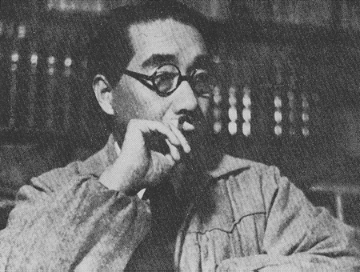
北原白秋
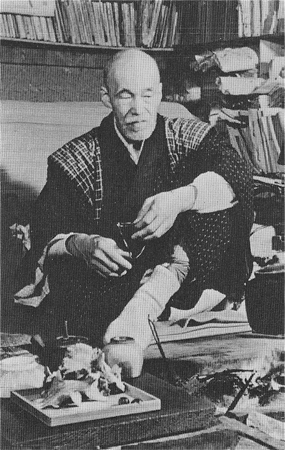
高村光太郎（撮影・浜谷浩）
［＃改ページ］
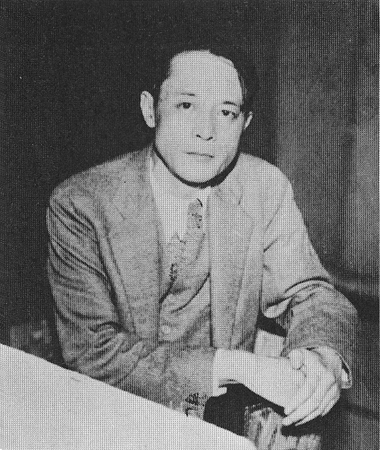
萩原朔太郎
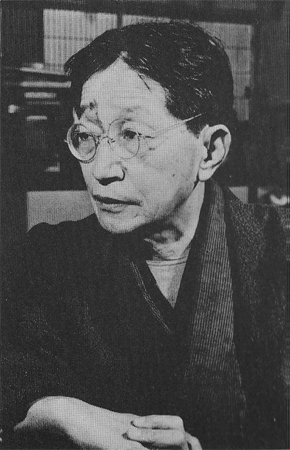
釈迢空（撮影・浜谷浩）
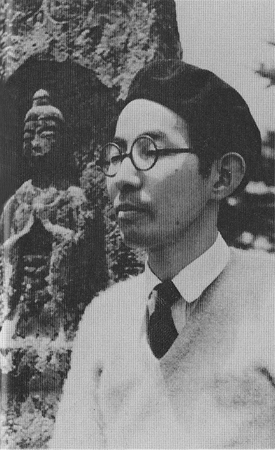
堀辰雄
［＃改ページ］
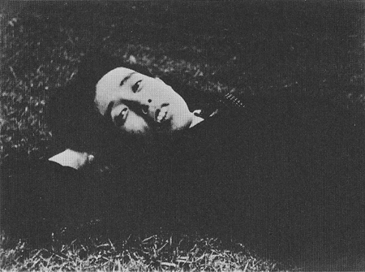
立原道造
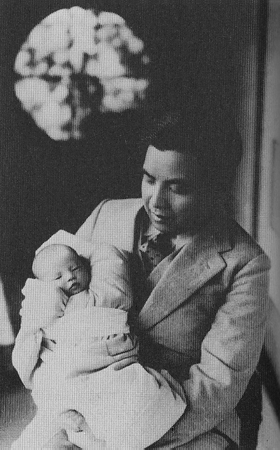
津村信夫
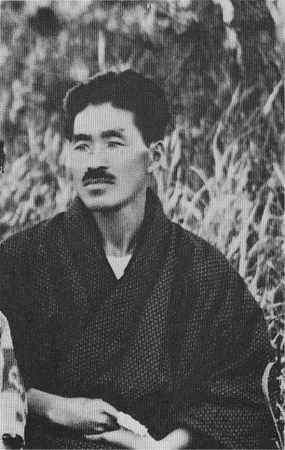
山村暮鳥
［＃改ページ］
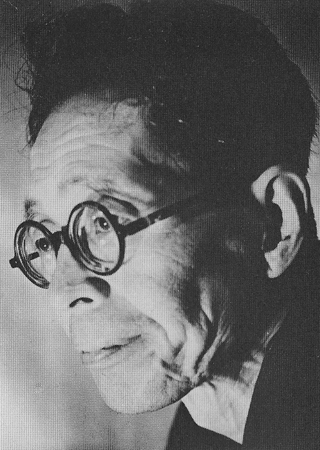
百田宗治
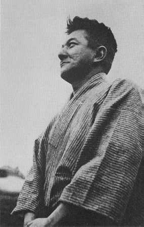
千家元麿
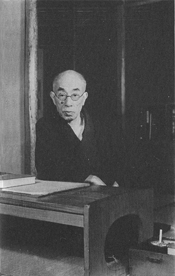
島崎藤村（撮影・土門拳）
［＃改丁］
明治四十二年三月、北原白秋の処女詩集『邪宗門』が自費出版された。早速私は注文したが、金沢市では一冊きりしかこの『邪宗門』は、本屋の飾り棚にとどいていなかった。当時、北原白秋は二十五歳であり私は二十一歳であった。金沢から二里離れた
処女詩集『邪宗門』をひらいて読んでも、ちんぷんかんぷん何を表象してあるのか解らなかった。南蛮風な好みとか幻想とか、邪宗キリスト教に幻妖な秘密の匂いを嗅ぎ出そうとしても、泥くさい田舎の青書生の学問では解るはずがなく、私は菓子折のような石井柏亭装幀の美しい詩集をなでさすって、解らないまま解る顔をして読んでいた。ただうろ覚えにわかることは、活字というものがこんなに美しく巧みに行を組み、あたらしい言葉となって、眼の前にキラキラして来る閃めきを持つこともあるということであった。こんなに活字が私の好みとうまく融け合って現われていることで、私はたいへんな物を読んでいるのだと思った。この北原白秋という人は自分の頭の中で一遍活字をならべて見て、それがどのように本の中に刷られるかを、ちゃんと見とどけている人だ、そこに驚きと訓えとを詩はまるで解らないままで読みながら、そんな変なものを受け取ったのである。
それから四十七年も経った今日、『邪宗門』をふたたび精読してみて、邪宗門秘曲一連の詩はやはりむかしとおなじで、解らないものがあった。解ったような解らないものがくり返されて、私をうやむやに印象させた。だが、ことばというものを生みつける白秋のことでは、どういう頭もかなわなかったごとく、二十一歳の私が活字の威厳と色彩の発見について、白秋をえらい人だと心に置いたことも今日とかわらなかった。『邪宗門』がちんぷんかんぷん解らなくとも、えたいの知れぬ麻薬入りの活字があの中に封じこめられていることだけは、今日の私にも解るのである。
私は白秋編輯であるところの『屋上庭園』という詩の雑誌の広告を見て、それをまた直接白秋に宛て注文した。名もない一青年の注文葉書は、『屋上庭園』の逓送によってあるえにしをつないでくれた。これが白秋に文通した最初であったが、私は『屋上庭園』の詩をよんで見ても、やはり解らないものは解らないままだった。詩というやつは少々解らない胡麻化しの感じがいるものだというふうに、むつかしい象徴詩の意義とやらの解らない私は、そういう解釈を自分流にしていた。そして白秋の字らしい包み紙のしわを伸ばして、大せつにしまって置いた。『屋上庭園』は一冊一円の雑誌であっていまなら千円くらいに換算され、田舎のさびしい郵便局でカワセを組んで送金した。たったこれだけのことでも、月給八円もらっている男にとっては大したふんぱつであり、そのために詩というものに莫大なつながりが感じられた。『邪宗門』を持っている者は北陸道では私一人であろうし、雁皮紙のように美しい四六倍判六号組みという高邁ハイカラな詩の雑誌『屋上庭園』を購読している者は私一人だったからである。
この『屋上庭園』は木下杢太郎、吉井勇、長田秀雄が同人であったが、第弐号の「おかる勘平」という白秋の詩によって発売禁止になり、第弐号でつぶれた。この年の一月に『スバル』という森鴎外を背景にもった立派で権威のある雑誌が創刊された。白秋の詩が毎号掲載されていて、私はあくことなく愛読した。当時白秋は私より四つ上の若さで、田舎で遠く眺めているとすでに大家であって、私なぞ寄りつくことも出来ない隔たりがあった。
処女詩集『邪宗門』は明治四十二年代にあって、自費出版の費用は百円ほどかかったと聞いていたが、その年の暮までに福岡県柳川町沖端の酒造業、北原家は酒蔵の火災によって破産していた。白秋の詩集がその前後に出版されていることに、えにしなしとは言えない。一たいに詩人が第一詩集（処女詩集）を自費で出版するときには、その詩人の家業になんらかの運命風なおとずれが現われているものだ。も一つ自費の詩集を処女詩集と誰がいうともなく言っていて、いまだに処女詩集と呼ばれているのは、まだ誰にも読んでもらわない、はじめて出版されるというほどの、ご念のはいった美しい愛称なのである。小説集なぞはこれをひと口に初版本といい、処女小説集とはいわれていない。詩集をまもりつづけて来た美名が未だに、ふくいくとして匂いこぼれている所以である。
明治四十四年の六月に第二詩集『思ひ出』が、自費出版ではなく美しい装本となって、その時代のはなやかな詩歌集出版元である東雲堂という書店から出版された。『思ひ出』一巻にあふれた抒情詩はすべて女の子に、呼吸をひそめて物言うような世にもあえかな詩情からなり立っていて、島崎藤村、薄田泣菫、横瀬夜雨、伊良子清白、河井酔茗、与謝野晶子らの詩境から、ずっと抜け出した秀才の詩集であった。
私は『思ひ出』から何かの言葉を盗み出すことに、眼をはなさなかった。詩というものはうまい詩からそのことばのつかみ方を盗まなければならない、これは詩ばかりではなくどんな文学でも、それを勉強する人間にとっては、はじめは盗まなければならない約束ごとがあるものだ。『思ひ出』の詩がすぐ盗めないのは、白秋が発見したり造語したりしているあたらしい言葉が溢れていて、それが今まで私の読んだものに一つも読み得なかったことである。ただ私が学ぶことの出来たのは、女への哀慕の情というものがこのように寄り添うて、草木山河、日常茶飯事をもうたうものであるということであった。人間に生まれて女を慕わざる若さは存在しない、私の若さも白秋の若さも人間の持つ同じものであるから、女を慕いそれをうたう時はこういう隙間や
われらいま
○
のたまはぬ
ただひとつ、
明治三十七年白秋は早稲田大学の英文科予科に入学した。その頃家産の傾いた父君、長太郎からの学費には、小判がたびたび送られ、白秋はこれを金に換えて生活の費用にあてた。牛込戸塚、千駄ヶ谷、新小川町、そのほか白秋はたいてい一軒の家を借り、ひとりのばあやに炊事をさせていたが、このばあやは二十年も白秋にかしずいていて、白秋もばあやにたよっていたようである。
『思ひ出』は与謝野寛に認められ、雑誌『明星』に発表されたものだが、発行後このように詩集が多く読まれ、たくさん売れた例は
さて私はやはりぶらぶら金沢にいて本屋の店頭に、毎日いちどずつ現われ雑誌と単行本とを見に行った。明治四十四年頃の私の毎日の日課は一日に一度ずつの、本屋訪問がぬきさしならぬ文学展望のかたちになっていた。私はそこで四六判の横を長くしたような東雲堂発行の『
 ふるさとは遠きにありてうたふもの
ふるさとは遠きにありてうたふもの という詩も、その原稿の中の一章であった。もちろん、返事はないが翌月の『朱欒』に一章の削減もなく全稿が掲載され、私はめまいと躍動を感じて白秋に感謝の手紙を送った。（ずっと十年も後の年、私が小説を書くようになってから、酒席ではあったが白秋はひときわ真面目な顔付で、どうも君くらい原稿の字の拙い男はない、あて字だらけでみみずの赤ん坊のようでまるで読めなかったと彼は
という詩も、その原稿の中の一章であった。もちろん、返事はないが翌月の『朱欒』に一章の削減もなく全稿が掲載され、私はめまいと躍動を感じて白秋に感謝の手紙を送った。（ずっと十年も後の年、私が小説を書くようになってから、酒席ではあったが白秋はひときわ真面目な顔付で、どうも君くらい原稿の字の拙い男はない、あて字だらけでみみずの赤ん坊のようでまるで読めなかったと彼は次の号にも投稿して掲せられ、次の次にも掲載されて、私は嬉しく勉強することが出来た。木下杢太郎、長田秀雄、吉井勇、斎藤茂吉、谷崎潤一郎、茅野蕭々、萱野二十一の諸氏とならんで、つらつき一人前になって私の詩がヒナドリのように羽根をぴくぴく動かしていた。ところが私の活字の隣の頁にふと萩原朔太郎という名前を第四号の『朱欒』にはじめて見て、こんな男の名前を見たことがなかったので、私は詩をほぐし読みしてこの男の詩歴をしらべて見た。そしてこの男がはなはだ私にちかい憂鬱と、故郷前橋市でぶらぶらどうらく息子のくらしを嘆いているのを発見して、萩原朔太郎とはなかなか立派な名前だと感心していたが、つぎの号にも萩原朔太郎の詩がけいさいされていて、たくさん書きためた原稿から撰んで投書した余裕のあるゆたかさがあり、私がいつも先の方の頁に出ている関係から、ムシが知らせるのかこの男の詩を愛誦措かざるものがあった。ある日突然青い封筒に青い西洋紙の手紙が私の机の上に飛んで来て、君の詩は『朱欒』で毎号読んでいるが、それは抒情詩というものをあらためて皆に示すくらい高いものだといって褒めてくれた。私はすぐ返事を書いてムシの知らせるままこの男と、つまり萩原朔太郎の死去するまで二十七、八年その友情をつづけた。文士というものは原稿のうえに同じ詩人とか文士をほめるということは、よくよくのことでないと
『朱欒』には大手拓次の詩も間もなく紹介され、白秋の三羽烏は萩原と大手拓次に私の三人をかぞえた。後年、大木篤夫が白秋の直門になって現われたが、白秋が萩原と私と大手拓次を詩の方で引き出したことは、人の原稿を見分けることでも、なかなかにうるさいぐらいに厳格な人であっただけに、やはり眼は人を見分けることに鋭く行きとどいていたのだ。『朱欒』に詩の出た翌年私は京都に上田敏をたずねた。（―藤井紫影の紹介名刺持参―）詩集『海潮音』の著者であり文学博士である上田敏は指環のはまった繊細な手で、ようかんをつまんで無名の私にすすめ、私は文学博士ともあろう人がえらい親切をするものだと感銘した。その上田敏は『朱欒』の私の詩を読んだといってくれ、意外な光栄を感じた。帰りの梯子段でお下げの令嬢をちらと見たが、それだけでも上田敏訪問は私には幸福だった。えらい人を訪ねたのはこれが初めてであった。
白秋はよく引っ越す人である。私なぞにその都度転居通知なぞが来るはずはない、彼の引越し先につぎつぎと現われ、一年に二、三度は訪ねた。部屋は何時でもきちんとかたづき、机の上には原稿紙でない上質の洋紙が重ねられ、それに詩の下書きがほどこされて、さらにそれを原稿に書きなおしていたのかも分らぬ。冗談もいわなければ砕けた話もしない、それで大家振っている気障なところはなく、手元に引き寄せられて話は熱心にするが、それ以上に女の話などするとか、私自身の生活を聴き取ってくれるとか、そういう一さいのうるさい話はしなかった。詩の話、雑誌の話、木下杢太郎の話、吉井勇の話、そんなふうなことで話はすぐ絶えてしまって、私はきゅうくつになり、長居はしないで何時も早々に退去した。つまり顔さえ見ればよかったのだ。どんなに窮していても原稿売込を頼むとか、金銭なぞは一銭も借りたことがなかった。私はそれだけでも私の幾つもない徳にかぞえていたのだ。他人にはすぐきゅうくつになる田舎書生の私と、いつも高度のハイカラ趣味を持った白秋との、いんぎんにして礼儀のある交際は、そのまま永い間続いた。小説を書いて少し名前が出た時分でも、白秋は以前にくらべて少しばかり敬意を持ってくれただけで、私は例のきゅうくつなものから脱けきれないで、にこにこしながら、いまから考えると彼にたいする尊敬と、きゅうくつなものを最後までまもっていたように思われた。
このあいだ家の娘がいったいお父チャンには、小説を書くのに先生がいたのかどうかと、これだけは聞いて置かなければならないというシンケンな顔付で訊ねた。私曰く、お父チャンは小説の原稿をえらい小説の大家に見て貰ったことは一度もない、お父チャンは小説というものは何時も一人で考えて書いたのだと私は説明した。では詩の先生はいやはりますかと言ったから、詩はやはり北原白秋が先生みたいなものだ。白秋が生きている時分は大きな声でいうと、白秋におべんちゃらを言うているようであかんと思うたが、いまになると萩原朔太郎と私とはなんといっても白秋の弟子だ、原稿の字は一字もなおして貰わなかったが、白秋のたくさんの詩のちすじがからだに入って、それが萩原と私にあとをひいている、これほど明確な師弟関係はない、白秋も生前にはこの二人を弟子なんぞと言うには、息子が大きくなりすぎているのであれはあれの好き勝手にさせて置けばいいんだよと、弟子とは呼んではくれなかった。しかし、おれのほねを拾うやつはこの二人の男だ、あれらはちすじをひくことでは間違いのない人だと、白秋は夫人にもそれは言わないで頭に持ったままで、死んでしまわれた。そして一人の兄弟萩原朔太郎も残念にも私より先きに死んで行った。私はこの伝記だか何だかわからない物をかくために、白秋アルバムと白秋全集を併読しながら写真にある白秋の顔を毎日眺めていた。気むずかしく優しく、小僧、大きくなって宜かった、今度はがらになく伝記と来たね、丹念にうまく書けよと、開く頁の先々で顔を見せられた。余り毎日見つづけているので極まりが悪く私は頁を伏せることもあった。こういうがらにない仕事を人もあろうに私にさせる『婦人公論』も『婦人公論』なら、こういう機会に毎日白秋に会えるということも、きゅうくつではあるが、今日は何を書こうかという愉しい朝が夜が明ければあった。
その後、たった一度、若山牧水の詩歌雑誌『創作』に、詩の原稿を送ってくれるよう白秋に頼んだが、翌月掲載されはしたものの三段組の投書仲間にはいっていて、私はブルブル震えて怒った。私はすでに当時生意気にも一人前の詩人になった気でいたが、若山牧水はまるで私なぞもんだいにしていなかったらしい。白秋をたずね三段組の悲哀をうったえたが、白秋はそれだから原稿を他の雑誌に送ることがいやだというのだ、向うには向うの雑誌のなりふりがあるのだからと言い、白秋は不機嫌であった。しかしその翌月号からは二段組になり、一家のあつかいをしてくれたが、白秋が手紙で牧水にそう言ってくれたものであろう。それは白秋だけにたよって他の雑誌に書かないでいるはずなのが、私のとるべき清節であったのに、そういう清潔さを知らなかった私の無礼も咎めずに、わざわざ手紙をかいて二段組にするよう、牧水に言ってくれたことも、なかなか出来ないことである。
数多い引越し先の一つである浅草聖天横丁の、あかるい白秋の家の二階家に私はまた現われた。二階に通されると先客があって、その人は画家の山本鼎であることが判った。白秋と鼎はほとんど私をそっちのけにしたしげに話し合っていた。私はそこそこに辞去したが、その折、山本鼎はいま来た男はナカナカの面つきをしているね、文学青年なんてみんなああかね、あんな食えない面つきの青年なんて見たことがないね、と、山本鼎は画を勉強している生活に余裕のある青年との比較論をしたと、白秋は後にこのことを私に話してくれ、これほど参ったことは前後を通じてなかった。それ以来、山本鼎の名前が手厳しく印象されたが、私が小説を書く前後に山本も『中央公論』に年に二回くらい小説を書いていたが、決して他の雑誌には執筆しない義理堅い作家であった。ある年のある日ある宴会の席上で山本鼎に行き合ったが、彼の曰く、この頃君の「まむし」という小説を読んだが、面白くて遂に再度読んだと正直に言われ、頭を掻いて私は赧くさえなった。あんなたちの悪そうな青年なんて見たことがないと言ったその人が、再度もそのたちの悪い男の小説を読んでくれたということで、すっかり私はたちの悪そうなという言葉を訂正されたようで、よくふとった山本鼎の寛容迫らざる人がらを思いやった。
私はちすじ（血統）という言葉をこの原稿の中でつかったが、文学のうえのちすじというものは、何かの弾みにその子孫にあらわれるものらしい。白秋の令妹家子さんは十九歳で上京され、白秋の親友山本鼎と結婚した。一子を得て太郎と名づけられたのが、父君すでに亡きこの頃、新鋭の詩人としてもっとも注目されている山本太郎のことであった。近作『みみずの歌』はみみずの世界の哀しみにことよせ、人間の世界に及んだものだが、私はこの詩をよんで父君山本鼎と、母親の兄さんである北原白秋から継いだ血すじに、あらそわれぬ文学のあらわれが、あさがおの白い花をしぼりに見せる
話はあとさきになるが大正二年かのある日、私は麻布にある白秋の家をたずねたが、玄関に令妹家子さんが出て来られ、このひとが白秋の妹さんであることを知った。二階にあがるとそこにもう一人の女のひとが、いままで白秋と話をしていたらしく、来客と聞いて机のそばから立ち上った際で、ほとばしる紅顔長身はちょっと天井につかえるほど、せいの
編笠をすこしかたむけよき君は
なほ紅 き花に見入るなりけり
なほ
白秋はよく詩歌の雑誌を創刊したり廃刊したりした。一種のこの時代のはやりのようなものであったが、後進にみちをひらくためには雑誌のちからが必要だったせいもある。
大正二年巡礼詩社を興したが、これは詩と歌の添削がおもだったらしい。同三年に『地上巡礼』を出し、続刊詩集『真珠抄』『白金の独楽』などを出版した。この間に小笠原島に旅行したが、美女松下俊子さんとは間もなく別れた。派手好みで、しみじみした家庭のことの出来ない彼女は、美所だけを白秋にあたえて去った。
大正四年阿蘭陀書房経営、令弟鉄雄と共同、文芸雑誌『ＡＲＳ』を刊行、七号で廃刊された。（この弟さんの北原鉄雄はそれ以来四十年間、出版事業と戦争をした人である。子規全集、白秋全集〔前期〕の美本を刊行、つぶれては起き直り、起き直ってはつぶれ仕事はやれるだけやった、出版界の豪傑塙団右衛門であった。これほど出版事業と戦った人はなく、これほど人間くさく仕事に打ち込んだ人はいない、昭和三十二年惜しくも亡くなられた。）
大正五年江口章子さんを知り、白秋はこのひととまた同棲した。江戸川べり真間の里から後に葛飾に移居した。ここで雀に米をまいてやり、雀のことを詳しく書いて例の散文随筆集『雀の生活』を刊行したが、谷崎潤一郎はこの詩人の宿を訪れ、後に小説「詩人の別れ」一篇を草した。
大正六年駒込動坂に白秋は居を移し、私は田端にいたので、もっとも親しい往来をしたのもこの時分だった。章子さんは白秋の用向きで度たび訪ねられ、私は当時二十八歳くらいで処女詩集『愛の詩集』の自費出版を思い立ち、白秋に長文の序文を書いて貰った。この動坂の生活は白秋にも苦しいものだったらしく、私への序文はそれを原稿紙に書き直して読売新聞の文芸欄に、例のばあやさんが持って行き、それを原稿料に換えるという始末であった。
原稿には異常な苦衷が施されるほどで、その十何枚かある原稿には十日間くらいかかっていた。間もなく動坂から去って小田原の生活にはいり、八年間そこで暮らした。大正七年鈴木三重吉の雑誌『赤い鳥』に関係して、ようやく奇才縦横の童謡が次から次とうまれた。日本の童謡を根こそぎ叩き通したかれの煥発才気は、みるまに後代の子供達にたくさんのおみやげを作った。詩から短歌の境にはいりこんだ白秋は、ついに童謡の世界でもう一度自分を見つけたわけだ。しかしこの不世出の大才人はその生涯を通じて散文の仕事だけは、見事な完成期を持たなかった。文を綴ることで少しうるさく飾りすぎたからである。「白秋小品」などもあるが、やはり斎藤茂吉までには進めなかったわけだ。
この小田原で突然、永くつづいた章子さんとの関係が絶たれた。そこに何かあったかどうかは判らない、判ってもわれわれには何の役にも立たないことであろう。ただ、ここに、もっともよく判ることは美女俊子さんといい、また章子さんといい、ある時には白秋にはいなくてはならない人達であったこと、また、別の年の別の日には別れなければならないことだけ、われわれにその不倖がわかったのである。この詩人は小説家でなかったから、それをわれわれに知らしてくれるよすがもなかったが、白秋の肉にはふたりの爪あとがのこっていて、その痒さを白秋は目をほそめながら掻いていた日もあろうと、私には思えた。愛情は古いほど永い間
大正十年四月に白秋は佐藤菊子さんと相知った。それはいままでと異なった正式な結婚式によって、むすばれたのである。私も当時結婚していて一子を失うて小田原に初めて菊子夫人に会った。瞳は大きかったけれど、いんぎん懇切なひとがらで、私共夫妻は菊子さんの手料理ではじめて白秋家で、晩の食事を前後を通じただ一度きりご馳走になった。私が二十一歳で白秋を訪ねてから十五年振りでご飯をご馳走になったのだ。白秋の名はいよいよ定まり、私も小説というものを書いて、少しばかりの名を持って
昭和十七年十一月二日、北原白秋は亡くなった。それから十三年目に恩地孝四郎も死なれ、その葬いの日に私は十三年ぶりで菊子夫人にお目にかかった。横着者のこの男は、その間に戦争が介在したりして、いちどもお訪ねする折がなかったのだ。恩地の葬いの日は暑い日であった。菊子夫人は永い読経の間の正坐にお疲れの様子に見えたので、私は娘に奥さんに席を代ってお上げして、涼しい処でお休みになるように言いつけ、奥さんはほっとして涼しい縁側に行って小憩されていた。
昭和三十二年白秋の弟さんの鉄雄が死去され、私はお詣りして菊子夫人にまたおあいした。その折の礼を返しに菊子夫人ははじめて小宅に見えた。そしてこれから白秋令妹の家子さんの家を訪ねるのだといわれ、では私も家子さんには四十年もお目にかからないので、お送りかたがた門口でいいからお顔が見たいといった。山本鼎の未亡人家子さんの住居は大森山王にあったから、すぐ小宅から近いのである。くるまで山本家までゆくと、白秋令妹が出て見え、すでに失いかけていられるだろうと思われた例のユメミルヨウな、夢二式のお顔を見てやはりおもかげはあると、嬉しくさえあった。家の中にはいらずに私は辞去した。
この白秋の伝記をかくための年代をしらべる必要がある、と、そんな考えで再び家子さんに会って動坂時代、聖天横丁の年月をたずねる決心をした。物臭で机のまわりばかりにいる私は、何時か菊子夫人と行ったおぼえがあるはずなのに、くるまはとうに山王街道を過ぎ、
家子さんは六十歳くらいであったが、まだ見ただけでは若かった。私は率直に白秋の子供の時分の話を聞きたいといったが、家子さんは八歳ちがいの兄だったが、帰郷して俥から下りた兄をお友達とテニスをしていて、それを打っちゃって迎えに出たおぼえがある。しかし鉄雄さんが生きていらしったら、もっと面白い話があるでしょうが、それほど今急に思い出すこともないといわれた。聞き出すことは知っていても、ぬけぬけとはいわれず、私は万年筆で二行ばかり書いて、万年筆を袂にしまい込んだ。私の家に筆記をしに来た人はいままでたくさんいたが、みなノートに三、四枚は速記して行ったようである。だのにおれはたった二行しかまだ書いていない、これは怠慢だ、こんなことで若し雑誌社に勤めなければならなくなったら、編集長から小酷く叱られるぞと反省してみたが、腕時計はもう今日はと言って挨拶してから二十分間過ぎていた。家子さんは血圧が二百くらいあるし、心臓もわるかった。それだのに面白くもない皺苦茶面の私が坐りこんでいては、血圧に影響すると思い、何にも聞かないでおわかれしたのである。
表に出た私をやはり表の道路まで見送られた家子さんに
「
「いいえ、なにもお話し出来ませんで、……」
「どうかお達者で。」
「はい、ありがとうございます。」
北原白秋の晩年を書くことをわすれたが、視力が減退、糖尿病及び腎炎に発する眼底出血で、駿河台の杏雲堂に入院、私も見舞に行ったが、廊下にテエブルが出ていてそこで見舞客の記帳が行われるほど、にぎやかな病院生活であった。視力はよくはならずにうすぼんやりと見える世界に白秋は住むようになり、黒い眼鏡をかけていた。永年の豪酒と仕事の山積が禍いしたと見るより外はなかった。つづめて言えば病苦で晩年は不倖な薄明生活であったともいえよう。
白秋は短冊色紙をかくときにも、奥さんがそばにいるとよく書けるという、私なぞと正反対であったが、すべて薄暗いことは嫌いで、派手であかるいことがひどく好きだった。その人が視力を失いかけていたということは、たいへん不倖なことである。しかも白秋以後白秋なく、才華の点でも、三つの転換期を持っていた。短歌に転換し童謡に転身した彼は、その先きざきでほとんど不世出のはればれしさを、抱えきれないくらい抱えこんだ詩人であった。
［＃改丁］
高村光太郎の伝記を書くことは、私にとって不倖な執筆の時間を続けることで、なかなかペンはすすまない、高村自身にとっても私のような男に身辺のことを書かれることは、相当不愉快なことであろう。私にとってはほとんど生涯の詩の好敵手であったし、かれは何時も一歩ずつ先に歩いていたこと、詩のうえの仕事の刻み方のこまかさ、用心ぶかさに至っては、私のまなぶべきことを、先に心に置いていた点でも、私は高村にかなわないものを感じていた。年少なかれが早くも当時の立派な雑誌『スバル』の毎号の執筆者であることは、私の嫉みのもとであった。私がどれほど詩の原稿をたくわえていても、『スバル』に掲載されるということは絶対にありえない、だが光太郎はいつでも華やかにしかも何気ないふうで登場していたのだ。私はほとんど詩を発表する雑誌を持たなかったし、たとえ掲載されても『スバル』のような立派な雑誌ではない、つまり私は毎号『スバル』の美しい印刷詩を間に置いて、高村光太郎という名前に絶えず脅かされていたのである。詩の青書生であった私にとって詩の発表機関が『スバル』である高村光太郎をしゃくにさわらずにいられなかったのである。本屋で立ち読みする無心の私は、そこから去るときは蒼褪め悲しみ嫉み怒りをおぼえていた。その不倖は私の東京彷徨のあいだじゅう、青春の何年間も続いていた。誰でも文学をまなぶほどの人間は、何時も先きに出た奴の印刷に脅かされる。いちど詩とか小説で名前が印刷されるということは傍若無人な暴力となって、まだ印刷されたことのない不倖な人間を怯えさせ、おこりを病むようにがたがた震えを起させるものである。
光太郎の死去の月に私はある雑誌から、小説「高村光太郎」を書くように頼まれたが、私はあの人のことを書くことはあの人の潔癖をいじくり廻すことになり、私は私で不倖な年がいもない小説をかくようになるからと言って引き退った。あの人のことを小説に書いたら、碌なことを書かないだろうという予測があった。私としては前例のない謙虚の気分で、巨星墜つという感じで敵手の死を小説にまで書く気はなかった。
光太郎の生前にも私は機会があるたびに、光太郎を褒めても半分は肉迫し何かをくさしていた。たとえば、芸術院会員にすいせんされても、きっと断るだろう、という私の見方に誤りはなく、かれはそれを断った。文学者とか詩人とかいうものはあるだけの有名と名誉を掻っさらって、この世界でいつも最高の地位をその作品の名において、ふん掴まえるものだ、当人がいやだと言っても、いいものを書けば何時の間にかある地位までは上昇する、秀眉な作品がそうさせるのだ、地位とか有名がいやだったら書かないでいた方がいいだろう、私はつねにこんな意見を抱いていた。いまから二十年前『中央公論』が時の有為の詩人の作品をあつめるため、私に指名をもとめた時に先ず高村光太郎をすいせんした。しかし光太郎は『中央公論』のような大雑誌には詩は
当時『感情』という三十二頁の詩の雑誌を出していた私は、光太郎にも詩をたのんで書いて貰った。光太郎は駒込のアトリエから田端まで歩いて、私が折あしく不在だった机の上に、その原稿を置いて帰った。光太郎は自分の原稿はたいがい自分で持参して、名もない雑誌をつくる人の家に徒歩でとどけていた。紺の絣の筒袖姿にハカマをはいて、長身に風を切って、かれ自身の詩を演出する勇ましいすがたであった。かれはやはりそこに純情をおぼえ、ひまのある人間がひまを有為につかう心得を知っていた。
かれは日本の詩というものでは、昇れるだけ昇りつづけた男であった。一度も後退したことはない、高村光太郎という透明無類の風船は、「泥七宝」の短章から「暗愚小伝」にいたるまで、拍手喝采の間に天上に到達したのである。
晩餐
ぬれ鼠になつて
買つた米が一升
二十四銭五厘だ
くさやの
沢庵を一本
玉子は
かつをの塩辛
湯をたぎらして
ふきつのる嵐は
瓦にぶつけて
われらの食慾は頑健にすすみ
ものを喰らひて己が血となす本能の力に迫られ
やがて飽満の恍惚に入れば
われら静かに手を取つて
心にかぎりなき喜を叫び
かつ祈る （後略）
昭和十六年太平洋戦争にはいると、光太郎はそのころの詩人がみんなしたように、かれも
高村光太郎がいわゆる中間雑誌にも書くようになったのは、ようやく雑誌の
永年に亙り自分の詩をそだてるうえに、注意ぶかく卑俗を避けていたかれは、時勢もそうであったが持ちきれなくて半分投げ出したところがあった。二種類の文学全集、彼自身の全集とかいうものが、かれを文学の泥臭い中に抱きこんでしまったものの、そんな泥を吐くいとまさえなかったのである。それはそうであってよかったのだ。詩は詩であっても文学は泥くさいほど美しい、泥のついていない詩や文学はご免蒙りたいものである。巨大豪放の透明感というもの、清純高潔の生き方というものを最後まで持ちつづけたかれも、時々、その反対の生き方を強いられてくると、口ごもりながら、これは何とかしなければならんと何度もムカシ好んで着た紺絣で質素と朴訥の風采を愛しようともがくのだ。
先日といっても昭和三十二年の十一月、私は歌舞伎座の休憩室で正宗白鳥と宇野浩二にお会いして、話が高村光太郎におよぶと私は宇野に言った。
「高村光太郎には一種の構えがあったね、若い時分からずっと続いていた構えが。」
宇野浩二は即ちスルドイ語調でいった。
「あった、高村には構えがあったとも。」
正宗白鳥はただ、あったな、と寛っくりと言われた。
私はさらに宇野に君はどうかというような顔付をして訊いた。
「詩人の伝記を書いているが、どうもすぐ自分のことを書いてしまうね。」
「そうだとも、自分のことを書かなければ何も書けないよ。」
小説博士のかれはちっとも笑わないで、当然だといえる顔付で答えた。
高村光太郎は明治十六年三月東京下谷区で生まれた。私とは六つ年上である。東京美術学校彫刻科卒業、砕雨と号し与謝野夫妻の『明星』に短歌を発表、つまり同人雑誌で勉強した形である。三十九年三月から四十二年まで外遊、ニューヨーク、パリに滞在、人の話では借りたアトリエに閉じこもり、碌々外に出なかったこともあったそうだ。
処女詩集『道程』は白山町の抒情詩社から刊行、この貧しい出版屋にほとんどただで発行さしたのも、高村光太郎らしい無名の出版所をえらんだわけである。久しい間その詩集は『道程』一冊しか発行していない。後に『智恵子抄』『智恵子抄其後』を刊行、ヒューマニストまたは、モラリストとしての詩風をしめす。ヴェルハアラン（一八五五〜一九一六年、ベルギー系のフランス詩人。生命讃美の象徴詩を書いた。）の訳詩集『明るい時』『天上の炎』『ロダンの言葉』『続ロダンの言葉』を訳したが、その行文の美はかれの詩の水脈を引いている。その他『ゴッホの手紙』、評論集『造型美論』『美について』等がある。戦後岩手県の山村に七年間こもっていた。彫刻はわずかに数点しかない。
田端の百姓家に私は下宿住いをし、ほとんどの日は千駄木町の通りから白山に出るのが、私の散歩区域であり、本屋に本を売り質屋に通い、大方の日は憂鬱極まるものであった。千駄木の桜の並木のある広いこの通りに光太郎のアトリエが聳え、二階の窓に赤いカーテンが垂れ、白いカーテンの時は西洋葵の鉢が置かれて、花は往来のほうに向いていた。あきらかにその窓のかざりは往来の人の眼を計算にいれた、ある矜と美しさを暗示したものである。千九百十年前後の私はその窓を見上げて、ふざけていやがるという高飛車な冷たい言葉さえ、持ち合わすことの出来ないほど貧窮であった。こういうアトリエに住んでみたい
高村にはちっとも関係も意志もないことだが、私のほとんどの日が、このアトリエの前を通り、内部にあるかれの生活と私のそれとの比較が行われ、毎日遣っ付けられ毎日
私はある日二段ばかり登ったかれの玄関の扉の前に立ったが、右側に郵便局の窓口のような方一尺のコマドのあるのを知り、そこにある釦を押すと呼鈴が奥の方で鳴るしかけになっていた。私はおそるおそるその呼鈴の釦を押した。すぐ奥のほうで呼鈴の音がきこえ、私は新鮮なせんりつを感じた。私は私と同等以上の人間を訪ねたことは北原白秋だけであって、光太郎は私とは因縁も文学関係もない男だったが、会わないことはないだろうと思った。だいぶ永く、時間にしたら一分三十秒くらい私はコマドの前に立っていた。放心状態でいたのでコマドの内側にある小幅のカーテンが、無慈悲にさっと怒ったように引かれたので、私は驚いてそこに顔をふりむけた。それと同時にコマド一杯にあるひとつの女の顔が、いままで見た世間の女とはまるで異なった気取りと冷淡と、も一つくっ付けると不意のこの訪問者の風体容貌を瞬間に見破った動かない、バカにしている眼付きに私は出会ったのである。私は金でも借りに行った男の卑屈さで、高村君といってにわかに高村さんといいあらため、今日はお宅においででしょうかとおずおず言った。するとこの女は非常に軽くあごを下の方に引くことによって、来意を諒解したふうを装い、突然、さっと、またカーテンを引いてしまった。彼女はコマドからはなれ、奥の間に行ったらしく、白い少々よごれたカーテンが私の眼の前と内部の光景とをへだてた。
再びカーテンが引かれたが、用意していた私はこんどは驚かなかった。ツメタイ澄んだ大きくない一重瞼の眼のいろが、私の眼をくぐりぬけたとき彼女は含み声の、上唇で圧迫したような語調でいった。
「たかむらはいまるすでございます。」
「は、いつころおかえりでしょうか。」
女の眼はまたたきもせずに私を見たまま、答えた。
「わかりません。」
私は頭を下げると、カーテンがさっとハリガネの上を、吊り環をきしらせてまた走った。
再度目に訪ねたとき女は顔だけあらわしたが、私はその間際にまた来たという言葉を女の眼によみとって、すぐ、私は彼女の眼に抗議をもうし込むよう、ちょっとした気配を見せてやった、だが、それは受けとられなくて、「たかむらはただいま出かけて居ります。」と彼女はいい、私はやけになり、ああそう、こんな男が来たといって下さいと、私は自分の名前を告げたが、彼女は、正確な返事ではなく、あ、そう、ふんというふうにいって、カーテンをまたさっと引いた。
三度目に訪ねたのは一ヵ月後のある午前中であったが、ツメタイ眼は夫のほかの者を見るときに限られている、夫には忠実でほかの者にはくそくらえという眼付で、やはり追い払われた。それは秋で私は父死すという電報の来ている下宿にかえって、その晩、故郷に向いて立ち、十日程して帰京すると千駄木町の通りを行き、思い返して国から持参した吉田屋物の九谷の大皿を抱えて、アトリエの前に立ったが、その日は都合よく光太郎自身が現われ、かれの書斎でしばらく話しておみやげの皿を置いて帰った。私はこんなに人を訪ねるに執拗であったためしも尠ないし、九谷の大皿まで何の気でもっておべっかを尽したのか、そのもとをさぐると高村光太郎の友人になりたかったからである。私みずからを救うのはもちろんだが、光太郎のアトリエにしげしげと通ってあわよくば、大雑誌『スバル』に詩の原稿をすいせんして貰いたい下心があったからであった。けれども人に贈物をしたくても出来ない人間が、それをなし遂げたときには精神的にもうがっかりして、私は光太郎をまたと訪ねる気がしなくなっていた。詩人が贈物で詩を紹介して貰うことに気がさしていたし、ツメタイ眼をみることがいやだったからだ。しかし私は独居の下宿の部屋でときどきあれは誰だったかと、うかぶたくさんの女の人の顔をおもい上げるとき、このツメタイ眼がツメタイために美しく映じてくるのを、怖れた。この女のひとこそは『智恵子抄』の智恵子であったのだ。
高村光太郎という類のない不思議な人間によって、みがき上げられた生きた彫刻智恵子を見たのは、ただの、この三度の面会だけであった。かれは父光雲像をきざみ、「紫朝の首」「男の首」「園田孝吉像」「裸婦」「今井邦子像」「牛」「腕」「松方正義像」「中野秀人の首」「東北の人」「大倉喜八郎像」「
この詩には光太郎が自分の性をとおして見た智恵子の裸体のうつくしさを、世間の人が決して喋れないヒミツであるものを、かれは彫刻にはゆかずに詩というもの、詩で現わせるために恥かしさを知らない世界で、安んじてこのように物語っていた。あなたがだんだんきれいになるという言葉は、よく解りうなずかれる言葉ではないか。
昭和十三年かれの愛妻智恵子は精神分裂症のまま死去した。かれは千代紙を智恵子にあたえ、精神病の人に紙の細工が心をしずめるということを聞いて、それで折鶴などを作るあわれな智恵子に、ふたたび不思議な愛情を感じた。智恵子は千羽鶴を折って訪ねてくる光太郎に、これを見せては笑った。高村は、「千数百枚におよぶこれらの切抜絵はすべて智恵子の詩であり、抒情であり、機智であり、生活記録であり、この世への愛の表明である。これを私に見せる時の智恵子の恥かしさうなうれしさうな顔が忘れられない」と光太郎は書いていた。
レモン哀歌
そんなにもあなたはレモンを待つてゐた
かなしく白くあかるい死の床で
わたしの手からとつた一つのレモンを
あなたのきれいな歯ががりりと
トパアズいろの香気が立つ
その数滴の天のものなるレモンの汁は
ぱつとあなたの意識を正常にした
あなたの青く澄んだ眼がかすかに笑ふ
わたしの手を握るあなたの力の健康さよ
あなたの
かういふ命の瀬戸ぎはに
智恵子はもとの智恵子となり
生涯の愛を一瞬にかたむけた
それからひと時
昔
あなたの機関はそれなり止まつた
写真の前に插した桜の花かげに
すずしく光るレモンを今日も置かう
岩手県稗貫郡太田村山口という山村に、疎開して山小屋にこもった光太郎は、六畳の板の間に三畳のうすべりを敷き、炉を仕込んだこの小屋の中には夜具類の一さい、火消壺、炊事道具の一さいをふくめた雑然たる一農耕者の住いにしたしんだ。六十三歳という年齢はこんな煤と埃の中でも、だまって暮らしてゆくのに好適な年齢なのである。昭和二十五年代の日本人は誰でもこれに近い暮らしだった。戦後の食うや食わずのくらしに誰でもここまで引き摺りこまれていたのだ。山口の村の突ッ端で、雑木林をうしろにしたこの小屋の中の光太郎は、そこから出て小学校でお話をし、村の青年に講演をこころみ、えらい先生になっていた。自分でえらい顔をしなくとも、村人は高邁な文士としてかれを畏敬していた。
かれはここの雑木林にさわぐ風や、雪の
光太郎はこの山小屋で毎夜智恵子への肉体幻想に、生きるヒミツをとどめていた頃、この山小屋にしげしげとわかい女からの手紙が、一週間に一度とか十日間に一度ずつ届いていた。ひとくちに言えばありふれた愛読者の手紙であった。しかしその手紙の冒頭にはいつも光太郎様とあるべきところに、
太田村山口の村端れに、ある日はじめて新雪がちらついた昼すぎ、一人で雪を面白がって歩く少女が、小高い光太郎の山小屋をめあてに元気に歩くすがたが見られた。身のつくりも東京風であり小柄できりっとした眼付には、おさえきれない悪戯者らしいしかも無邪気な微笑をうかべ、畝道を歩いていた。
光太郎は雑炊を炉で煮ていた。
雪をはらう気はいがし、光太郎は
光太郎は永い間手紙を見ていたので、らくに話が出来たし、少女もすらすらと話をすすめた。ただ光太郎はこの少女の若すぎる生き身を感じるときに、智恵子とたった二人きりでいたことに気づいて、この少女をみるはればれしさにある抗議を自身の中に感じた。死んだ智恵子がいう抗議ではない、かれ自身がつくりあげる妙な抗議であった。少女は先生といい、手紙にあるお父さんなぞとは呼ばなかった。どこをさがしてもさし対いの二人のあいだには、お父さんなどという言葉は決して存在していない、それは手紙だけに用いられる装飾語であろうかと思えた。
少女は二時間しかいなかった。彼女を村の入口まで送って行った途中、お父さんなぞとお手紙に書いたりしまして、ご免遊ばせといい、光太郎は例の含み声で愉しく笑って別れた。
人体飢餓
彫刻家山に
くらふもの山に余りあれど、
山に人体の饗宴なく
山に女体の美味がない。
精神の
造型の餓鬼。
また雪だ。 （後略）
昭和二十七年十月、光太郎は七十歳、太田村の山村を去った。二十八年十和田湖畔に建つ裸婦像を完成、十月除幕式、この前後から健康を害し三十一年七十四歳で死去した。かれは最後の詩に、（智恵子の裸形をわたくしは恋ふ。つつましく満ちてゐて、星宿のやうに森厳で、山脈のやうに波うつて、いつまでもうすいミストがかかり、その造型の
光太郎の死後、あらゆる読物娯楽と［＃「読物娯楽と」は底本では「読物誤楽と」］演出演劇がよってたかって、光太郎と智恵子をめちゃくちゃに見せ物にしてしまった。劇ではひげの生えた光太郎と智恵子とが恋を物語り、恥かしい場面を転換した。映画では見るにしのびないかれらの恋愛が、演出された。ラジオもまたそういう愚劣をくりかえした。小説物語も（佐藤春夫の『小説智恵子抄』は含まない）また光太郎を引きすえて軽い書生流の恋愛道中を点出した。かれらは何が面白かったのだ。なんのウラミがあったのだ、なにを世間から受けさせるつもりで空騒ぎしたのだ、私はそれらの記述を新聞雑誌で読むごとに、うたた暗然として、聖人高村光太郎のために、どいつも、こいつも叩きのめしてやろうかとさえ憤激一日として安きを得なかった。その生涯の大きさと正実とをくしくも理想として抱いていたかれは、過失なくその大きさと逞しさ、その上に、こまかい鋭い人格完成をなしとげたのであるが、見世物の群衆はどんなわけからか彼の周囲に集まり、わいわい騒いだのであろうと私は思った。それは死んだ妻を恋うという一つの日本人が控え目にしていた現われを、光太郎は最後まで隠さなかったからであった。われわれ日本人は妻との情事はいつも死後も、これを草ふかき土中にうずめて悲しんでいた。ひとの前で語るべきではないという太極の上に立っていた。
光太郎の死は巨星墜つということばどおりのものを、私に感じさせた。巨星墜つというばかばかしいことばが、やはりかれの場合ふさわしく、それだけ私は依然距たりをおぼえていたのだ。巨星は映画演劇におもちゃにされたが、依然見事に聖人高村光太郎にびくとも影響をあたえていないし、そのために彼を軽く見るという境にまで行きつかなかった。そして空騒ぎが済むとかれら興行師のともがらは、騒ぎをしずめて去って行った。私は人の生き方のまじめさ、性質にある善意識の透明さを、ずっと昔に感じたそれを、いままた残念ながら魅せられ新しくされた。私は詩の事を書くたびに光太郎に当っていたと先きに述べたが、この事で光太郎はいちども当りを返したことはない、かれはなにも読まないふうを装うて、私の悪口をゆるしてくれたものに、思えた。
一人の人間にはいやなところばかりを見せ、別の一人の人間にはいいところばかりを見せていた智恵子は、光太郎には愛する名の神であった。私が尊敬出来ないような智恵子にとっては、私それ自身は彼女に一疋の昆虫にも値しなかった。吹けば飛ぶような青書生の訪問者なぞもんだいではないのだ。それでいいのだ、女の人が生き抜くときには選ばれた一人の男が名の神であって、あとは塵あくたの類であっていいのである。つねに貴重な愛情を原稿のうえで売るような人間は、ついに聖人には達せられないが、高村の生きたあとのくそや悲しみを見ると、聖人ということばがはじめてその顔をちらりと見せたことに気づく、このばかばかしいことばが何と近い仲間のあいだに存在していたことだろう。智恵子さん曰く、四十何年か前に見た人がまたいやなことを書いているわね、なんてしつこい厭な奴！
［＃改丁］
萩原朔太郎の長女の葉子さんが、この頃或る同人雑誌に父朔太郎の思い出という一文を掲載、私はそれを読んで文章の巧みさがよく父朔太郎の手をにぎり締めていること、そして娘というものがいかに父親を油断なく、見守り続けているかに感心した。
葉子さんは三十過ぎだが、ボンヤリとちょっと見たところでは、気の善すぎる、だまされやすく
萩原は他人と話をするときには、
萩原は結婚十年くらいで、第一夫人稲子さんと話しずくで別れていた。葉子さんも結婚して四、五年で別れていた。葉子さんは萩原の死後その母親の稲子さんが北海道にいられることを知ると、朔太郎全集の印税が沢山はいっていたので、どうにもお母さんに逢いたくなり耐えきれずに、飛行機で北海道に飛んで行き、お母さんを東京につれて来たそうである。書物のお金が沢山はいった嬉しさがそうさせたせいもあるが、母というものが十年も十五年も別れ住んでいても、一旦逢いたくなって綻びがとけかけると、どうにもならなく逢いたいものらしい。葉子さんは自分の倖せをせめて半分でも分けたい気で、お母さんを東京に呼んだのである。葉子さん自身も夫にわかれた直後であったので、母と娘とがどういうふうに物語りをすすめていたことか、ただ、私はありがたい事というものは、こういう事をいうのだろうと思った。
萩原朔太郎はくすんだ情熱は持っていたが、気は弱く控え目で、そんな飛行機に乗って北海道にまで出掛ける人ではない、どんな場合でも思い切った事は出来ない人である。併しこんな伏眼がちで怯えたように人の顔も、まともに見すえるということをしない彼が、生涯五十七年の間に、先妻にも別れ、また後の妻にも別れていた。どんなに威張り返っていてその妻と毎日ケンカ口論をしていても、一旦奥さんというものと相伴ったら、なかなか別れるなどとは思いもかけないことである。威張れば威張る程別れられないし、ワカレルワカレルといっても、胴締めはワカレルという言葉のたびに、
大概の気強い威丈夫な男連が、一生粉身砕骨しても別れられない夫婦関係を、萩原は見事に二度までやって退けたのは、よくよくの事情があるにしても、彼自身のぐにゃぐにゃが、いかに硬骨のお偉ら方にくらべて大したぐにゃぐにゃであったかが判るのだ。つまり萩原という人は一度も子供に怒ったことがないし、母とか父の命にそむいたこともなかった。自分の妻を叱ることもなかった。何でも、あ、よしよしといい、そうか、そうしたまえ、それがいいと言うように強い意志を示すものは、原稿になにか書く時の外は滅多に現わさなかった。原稿の上では急に人が変り顔が変り彼の生活が変り、ぐにゃぐにゃさんがカンカン男になり、カンカン男が哲学者の鉄兜をかぶり時折ニイチエの
家庭
古き家の中に坐りて
互に
仇敵に非ず
債鬼に非ず
「見よ！ われは汝の妻
死ぬるとも尚離れざるべし。」
古き家の中に坐りて
我れの持たざるものは一切なり
我れの持たざるものは一切なり
いかんぞ窮乏を忍ばざらんや。
心みな非力の怒に狂はんとす。
ああ我れの持たざるものは一切なり
いかんぞ乞食の如く
道路に落ちたるを乞ふべけんや。 （後略）
前橋市にはじめて萩原朔太郎を訪ねたのは、私の二十五歳くらいの時であり今から四十何年か前の、早春の日であった。前橋の停車場に迎えに出た萩原はトルコ帽をかむり、半コートを着用に及び愛煙のタバコを口に咥えていた。第一印象は何て
萩原は面白くない顔付で利根川の川原の見える、下宿にあんないしてくれ、私はこの
萩原と私の関係は、私がたちの悪い女で始終萩原を追っかけ廻していて、萩原もずるずるに引きずられているところがあった。例の前橋訪問以来四十年というものは、二人は寄ると夕方からがぶっと酒をあおり、またがぶっと酒を呑み、あとはちびりちびりと飲んで永い四十年間倦きることがなかった。帽子をあみだにかむり敷島というタバコの吸口を噛みちらし、膝には酒はこぼし放題になった萩原は、突然、眼をさましたような正気づいた眼付をして、こうしてはいられないという気確かさを見せて、君、おれは失敬するといって立ちあがることがあった。その瞬間には新宿のいんちき酒場の亡霊共がものすごく彼を招くのだ、彼の乱酔の渦中に女どもが叫んで彼の帽子を脱がせ、上着から財布をもぎ取り、髪をむしり脇の下をくすぐったりする女どもが、白ねずみのように股ぐらを駈け廻るのである。そして私共はその事のゆえで何時も別れた。何だい、泥くさい女がそんなにお前に向くのかとなじると、むっつりして何時までお芝居を続けるようにバーに坐り込む心算なんだ、行儀見習にバーに来ているのかいと彼は叫んで去って行った。振られた年増女の私は間もなく腰を上げ、表に出るのであるが、あんなに飲んでいのちに別状ないものか、あんなだらしのない奴はないと呟やいて見たものの、私はそのままでは帰れなかった。次ぎのバーに行って黙りこくって飲み、振られた女のしよう事のない沈黙ばかりで、そんな萩原と別れた晩は何処に行ってもおちつきがなかったのだ。
明治十九年（一八八六年）十一月一日 群馬県前橋市北曲輪町十九番地［＃「十九番地」はママ］ 萩原密蔵の長男として不世出の詩人萩原朔太郎は生まれた。つまり私は明治二十二年生まれであるから彼は三つ年上である。同四十三年（一九一〇年）二十五歳で岡山第六高等学校中退。
大正二年（一九一三年）二十八歳 北原白秋の主宰の雑誌『ザムボア（朱欒）』にはじめて抒情詩六篇掲載、その同じ号に私も詩を投書して掲載されていた。この年に私は彼から手紙を貰い、ついに親友となった。（北原白秋伝参照）大正三年山村暮鳥と私と萩原で人魚詩社を興し、四年私は金沢で『卓上噴水』を創刊、同年五月に第三号を発刊して廃めた。これには萩原が拾円出資、当時、詩人の間で詩の機関雑誌を出すことが、文学地盤の確立の上からも流行していた。
大正五年（一九一六年）三十一歳 山村暮鳥、多田不二、竹村俊郎、恩地孝四郎と私などで、詩の雑誌『感情』を創刊、この表題は萩原が付け、三十何冊か発行された。私が、これの編集に当り同人は五円ずつ金を出し合った。
大正八年（一九一九年）三十四歳
第一夫人稲子さんと結婚した。稲子さんは加賀藩の図書掛長の娘。長女葉子、明子さん生まる。十四年上京、一家は大井町の郊外のような処に住み、私は暑い日に草の丈の高い野っ原の中に、かれの家を見つけた。夫人稲子と二人の娘との生活費は、その当時の金で父君密蔵さんから毎月七十円ずつ送られていることを萩原から直接私は聞いた。書留郵便だと金がかかるといい、前橋では振替口座に加入していた。
大正十四年（一九二五年）四十歳
私が田端にいたので、田端の入口の藍染川近くのお稲荷さんわきに住んだ。私は彼を誘うてやはり酒を飲んだ。十一月に鎌倉材木座に移ったが間もなく大森馬込町に転居した。ここで彼は第一夫人稲子さんと永い夫婦生活を断った。彼の乱酒行のもっとも甚だしい時であった。私は彼のすすめで彼の家近くに引っ越し、今日に至っている。
昭和七年（一九三二年）に北沢に彼は遺産で家を建てた。まわりは悉く渋いココア色で塗り潰した家である。彼はこの家で若い第二夫人を迎えた。その年の夏、はじめて軽井沢に別荘を借りて住み、私と萩原は夕方五時半の時間を決めて町の菊屋で落ちあい、ビールを飲んだ。若い時分のくせをこの避暑地でうまく都合つけたのも、よい思いつきであった。彼は五時半には菊屋に現われ、私もその時間におくれずに現われた。そしてビールを二本あけると二人は別れた。彼は若い妻のいる別荘へ、私は自分の家へ、そして私達はそれぞれにあらためて家で晩酌の膳についたのである。併し彼の別荘借りは一年しか続かなかった。
昭和十七年（一九四二年）五十七歳
これが萩原が死んだ年号と、歳である。私はいま自分の年齢で計算してみると萩原よりも十二年も横着に生きのびたことだ。運がよいのか悪が強いのか、お前みたいにズルイ奴はいないよ、十二年も生きのびるなんていい加減にしろと、萩原朔太郎は笑いながらいうかも知れない。ほんとに済みませんです、うかうかと生きて来て了ったが、多分僕もそろそろお暇をいただく時分だから、君にも会えそうな気がするが、どこでどう会うものか、誰も死から還って来た人が喋ってくれたためしがないからね、併し十二年も君より余計に生きていたことは、何と言っても申訳がない、つい、昨日のように思えるが、生きていて物を書くということは偉大なる暇潰しであり、その事のためにずるずるに生きて来たのだ。君とはお互にどちらが先きに死に、どちらが後にのこるということを話し合ったことが、不思議にも一度だってない、君は後事を托するということを決して口にする人ではなかった。そこに他人のうかがえない心の守りを持っていたことは確かである。そういう事を人に言うことが嫌いなたちなのだ。
郵便局の窓口で
郵便局の窓口で
僕は故郷への手紙をかいた。
靴も運命もすり切れちやつた
煤煙は空に曇つて
けふもまだ職業は見つからない。
父上よ
何が人生について残つて居るのか。
僕はかなしい虚無感から
貧しい財布の底をかぞへて見た。
すべての人生を銅貨にかへて
道路の敷石に
あまり親友であるために、その真髄のあたいが判らないことがある。判っていてもその半分は萩原の場合に、私自身の中に溶けこませていたからだ。私は多くの萩原の評論風な、たとえば「新しい慾情」とか「虚妄の正義」とか「絶望への逃走」とかいう哲人風な感想論評には余りこれを迎えなかった。萩原から言わせるとこれらの虚無の世界で、たえず明りを見ようという
評論風な感想
抜書き一、（泥酔の翌朝におけるしらじらしい悔恨は、病んで舌をたれた犬のやうで、魂の最も傷々しいところに噛みついて来る。夜に於ての恥かしい事、醜態を極めたこと、みさげはてたる事、野卑と愚劣との外の何物でもないやうな記憶の再現は、……後略）
その二、（あまりに野卑な趣味に於て、露骨に見せつけられた性慾行為は、我等にまで何の快い色情の春景色を感じさせる事なく、却つてあの「淫猥」といふ不快至極の悪感、よつて以て印象から顔を背けさせるほどの悪感を起させるであらう。げに淫猥とは「色情を呼び醒すもの」といふ意味の言葉でなくして、却つて色情を氷結させるもの、それ自ら色情的不潔を感じさせるものを概念してゐる。後略）
第二夫人と別れてから、だいぶ経ってからかれに愛人ができていた。酒の座でそれをチラと言葉にはさんだことがあったが、私はその人を見せろと迫って見ても、君の好みと反対な女だからと、固く守ってついに私には一度も会わせなかった。あれほど正直で隠すことをしない萩原が、最後まで会わさないで、愛人の事におよぶと憂鬱そうに顔をそむけ、美人でないから見せないんだと言ったきりであった。愛人ができると親しい友達に見せたいのが人情だが、かれは愛人に関しては手強く沈黙をまもり、冗談にもその女のことは口走ることがなかった。私はその口固い秘色もそうあろうし、そうなければならぬことを思い、酒行の別れぎわにじゃ行って来たまえ、たまに僕の話でも出るようだったら宜しく言ってくれと、
その愛人は間もなく病死したが、身寄りのない人らしく、彼自身もうそ寒そうに愛人のまくらべに坐っていたことを思うと、萩原のくらし向きも情事のことでは複雑に何時も入りみだれていて、「抜書ノ二」のような意味の判らない物も書いていた。頭のよい人であったが此の「抜書ノ二」は文脈自らくずれていて、宿酔のみだれが仕事にくいこんでいるようであった。私は或る詩人に萩原の愛人は美人かと羨ましそうにたずねると、いやはや美人とか何とかいう女じゃないよと笑って言い、併し善良この上なしの人でね、そこに萩原は嘗てないものを見付けていたんだと或る詩人は言った。私は何も彼も判るような気がし、彼女の死を
かれは若い日に偶然に、この一詩をものして誰かにささやこうとしたが、ここまで来ると一篇の詩もまた先きの何十年かを予測してうたわれたように、私にはしたしく愛誦することが出来るのである。
艶めかしい墓場
風は柳を吹いてゐます
どこにこんな薄暗い墓地の景色があるのだらう。
（中略）
どうしてやさしい 青ざめた 草のやうにふしぎな影よ
貴女は貝でもない
さうしてさびしげなる亡霊よ
（中略）
妹のやうにやさしいひとよそれは墓場の月でもない 燐でもない 影でもない 真理でもない
さうしてただなんといふ悲しさだらう。
先きに死んで行った人はみな人がらが善すぎる、北原白秋、山村暮鳥、釈迢空、高村光太郎、堀辰雄、立原道造、福士幸次郎、津村信夫、大手拓次、佐藤惣之助、百田宗治、千家元麿、横瀬夜雨、そしてわが萩原朔太郎とかぞえ来てみても、どの人も人がらが好く、正直なれいろうとした生涯をおくっていた。
ここに一枚私が加わるとすれば悪小説家で煮ても焼いても食えぬしろものかも知れぬ。しかも皆さんの事を号を追うて書くにいたっては、ますます煮ても焼いても食えない奴ということだけは、確かである。
［＃改丁］
ある年、放送局からたのまれ、私は釈迢空の詩を朗読放送、それにみじかい評釈を加えた。その日のことを迢空に知らせると、迢空は出版書店に電話で態々それを知らせ、二、三の知人にも電話や速達便を出して聴取するように注意をしたが、お弟子の岡野弘彦は、折口先生はその事をたいへんに喜ばれ、その日は外出しないで放送時間の来るまでお茶を喫み、縁側に出たりして待ち設けていられたと、後で私に話をされた。
釈迢空の詩は巧みなことばに溢れていて、古いことばをつかっても、にわかに冴えて生きて来る術を知っていた。危ない古語のつかい方が危なさをうまく融和させ、かえって鮮かさを加えた。文学博士折口信夫の学問にあるあふれるばかりの古語比喩は、二十歳の青年詩人がもつ若い眼で、選ばれうたわれ、臆することのない大胆さで馳駆されていた。学問というものをこんな詩の形のうえに引き出して、特異の世界をつくり上げた人はまれであった。文学博士ともいわれる人物が私の詩の朗読放送を一々電話で出版書店に知らせたことにも、子供らしい清い勇み方があった。それだから、迢空は詩を書くたびに幼ない詩人のあえぎを捉えることが出来たのである。
私は釈迢空に会うと、すぐ額にある黒ずんで紫がかった痣（あざ）を、まず何よりも先に眼にいれた。痣はあざだった。どこまでも痣にかわりがなく、おしゃれの迢空が顔を剃るたびに悲観し、これをいかにして抹殺すべきかに心をつかっていたことだろうと、よそ事ならずに私はそう思った。若い時分の友人らはこの痣をインキと呼んでからかったが、迢空はそのため「
吃りはその吃りを判然とそう言ってくれる人の前では、もはや吃りではなく、すらすらと喋れるものである。足の不自由な人には足はちんばでも、そういうことは生きるに問題ではないと言うと、ちんばの人も憂鬱を吹っ飛ばすものである。私の額に迢空のような痣があったら、私はまず一篇の詩を書いて、このあざを見るひとの胸をぐっとつまらせて見せたかった。
痣のうへに日は落ち
痣のうへに夜が明ける、有難や。
痣のうへに夜が明ける、有難や。
昭和二十七年七月のある日、私は軽井沢の愛宕山の中腹にあった山小屋に、迢空をたずねて露台の椅子の上で対坐していた。雨の多い年で見渡すかぎり濡れた木々、昆布色のうすぐらい曇った空気が、まだ午後の三時も廻らないのに、日暮れめいた鬱陶しい景色を幾重にも木々のかたまりを重ねて見せていた。迢空は白の碁盤縞の浴衣を着て、この人らしく戯談一つ言わない窮屈さで、とぎれがちな話を私達は交わしていたが、この年の翌年の初秋にはもう迢空は死んでいた。だから後になって私は、この最後の訪問が憂鬱で鬼気の迫ったものであることを、無言と無言の間にいまから汲みとらぬわけにゆかない。その日は話というものが後に印象づけられることが一つもなかったこと、かなり重大な無言だったことに気づく。懐中汁粉というものをすすめられ、私は世に厳粛な顔付で啜ったものである。そして迢空博士も客にすすめたからには、これも美味しそうに食べざるをえなかったらしい。迢空の身の廻りのことをされる岡野弘彦も、自分で作った懐中汁粉をうやうやしく、べつの、少しはなれた椅子の上ですすっていた。迢空の身の動きの些細な事にも、私が煙草の箱からつまみ出すかさかさいう音の中にも、お互いの無言を知り尽したくらいである。私の眼はそのあいだにもちらりと迢空の額の痣を見て、山小屋の暗いじめじめした中で、今日はほとんど、痣という感覚のないほど額の痣が暗さに紛れていることを知り、私の悲しみがそれに集まらないのを嬉しく思った。
長き日の黙 の久しさ 堪へ来つゝ、このさ夜なかに、一人もの言ふ
人も 馬も 道ゆきつかれ死にゝけり。旅寝かさなるほどの かそけさ
ひそかなる心をもりて をはりけむ。命のきはに、言ふこともなく
ゆきつきて 道にたふるゝ生き物のかそけき墓は、草つゝみたり
山岸に、昼を地 虫の鳴き満ちて、このしづけさに 身はつかれたり
この島に、われを見知れる人はあらず。やすしと思ふあゆみの さびしさ
静かなる ひと日なりけり。日ねもすに 心ねもごろのふみを 書きたり
あやまたずあらしめし かのをみな子も、かつ／″＼ 我を 忘れゆきけむ
青空の うらさびしさや。麻布 でら 霞むいらかを ゆびざしにけり
人も 馬も 道ゆきつかれ死にゝけり。旅寝かさなるほどの かそけさ
ひそかなる心をもりて をはりけむ。命のきはに、言ふこともなく
ゆきつきて 道にたふるゝ生き物のかそけき墓は、草つゝみたり
山岸に、昼を
この島に、われを見知れる人はあらず。やすしと思ふあゆみの さびしさ
静かなる ひと日なりけり。日ねもすに 心ねもごろのふみを 書きたり
あやまたずあらしめし かのをみな子も、かつ／″＼ 我を 忘れゆきけむ
青空の うらさびしさや。
その日の帰りに、迢空は私を送るために山小屋から、雨でつぶれ川になった山道を一緒に下りた。真中が掘られた山道はがらがらの小石と泥で、飛び飛びにぬかるみを避けて歩かなければならなかった。
「あの男の歌は全部はったりですよ。はったりを取ったら何ものこりはしませんよ」
迢空はこの人には、まれに見る激しい口調でそう言い、心の憤りが足もとに勢いづいて、石を避けてがつがつ歩いたが、足もとが危なかった。ふとした話で私は迢空の怒りというものを見たのだ。
この山小屋から町への買物は、伊馬春部が送ってくれた自転車で岡野がしてくれる、自転車は町の入口に預けてあるという話であった。愛弟子で私の知っているのは小谷恒、伊馬春部、岡野弘彦、加藤守雄、小笹功、藤井春洋くらいだった。それらの愛弟子は、ことごとく眉目清秀の人達であり、終生妻というもの、女というものに近づかなかった迢空は、わかい男のこちこちした頬の、そのこちこちの中に何時も愛情をおぼえ、とりわけ従順とか反抗を読みとることで、女にあるものよりも、もっと手強いくらくらした眩暈状態のものを愛していたらしかった。
藤井春洋はそのもっとも愛された人、藤井春洋は二十三の時から硫黄島で戦死するまで、迢空の身の廻りや雑誌社出版社、講演、金銭の出入れまで、迢空のいうままに仕事をし、二人は兄弟のように仲善く、或る時はわかい二十三の妻と、四十二歳の男とが暮らしていたのである。藤井春洋は眼は大きくいきいきしていて、頬はいくらかあお白く色の変らない、がっしりした体格を持っていた。講演、講義、町の食事、歌舞伎、調査旅行の何処にも藤井は連れ立った。
死歿十何年か前、軽井沢の私の家に、二人で牡蠣を貰ったからといい、牡蠣を籠に入れ、竹竿の真中にそれをぶら下げて、よいしょ、よいしょとかついで搬んで来たことがあった。私に牡蠣をくれる事よりも二人でかついで来たことが面白かったらしく思えた。藤井の頬ははずんで女にも見られるこちこちが、そのこちこちのゆえに歯がゆげな爽快があった。
またの別の日、迢空の使で藤井は私の東京の家に、その著書を度たび、とどけてくれたことがあったが、その折は先生とは言わずに、折口があがるはずですがといい、折口と呼びすてであった。
またのある日、京浜電車の中で迢空と会ったが、やはり藤井の白い顔がそばに連れ立っていて、それは此方へと何かの包みを藤井が迢空の手から、持ちかえていた。
また別の日にはすぐ折口があとから来ますからといい、藤井は私の家の庭にある縁台に腰を下ろして待っていた。手を膝の上に置いて庭に眼をやる藤井は、二重瞼が大きく開けていて大きな娘さんのように見えた。
昭和十六年十二月、迢空は藤井が入隊するので、第九師団のある金沢まで送って行った。七聯隊は兼六公園とならんでいて、兵隊は石川門から入隊していたが、身動きも出来ない入隊者と見送人の間を、このただならぬ愛弟子と先生が人にもまれながら戦雲此処にも漂うかと思える、混乱の中をじりじりと兵営に向って歩いていた。迢空は入隊前からもそうだが、今もこの藤井がそばにいなくなるということが、自分にどういう空っぽな日々をおくらせるかということを、周囲の群衆がざわめく程、痛切に感じた。藤井はむしろぽかんとした睡眠不足の眼を、何処に何を見ているかも自分で判っていない風で、やはりじりじりと人に押されて歩いていた。この年の遅い雪が兵営の屋根の上にちらつき出している……。
正午近く藤井は兵隊服を窮屈に裸になって着替え、迢空は襟元を引いてやり、そしてズボンをすぐはけるようにひろげて差し出すと、不機嫌になっている藤井は邪険にそれを引きたくり、僕は一人で着ますよ、打棄って置いてと変った声音で叱った。それは度たび叱ることがあるので、迢空はすぐ着なれてしまうよとばつを合せていってみたが、藤井は塩からい眼に悲しそうな容子を見せまいとして、兵隊服なんかに着なれてたまるもんですかと言い放った。しかし陸軍少尉の制服ははじめて迢空の眼に、映画に見る好ましい外人部隊のある一士官の恰好を捉えることができた。肩章にある二つの金色の星は、いつも著書の背中に金文字を愛するかれに、好感と、りりしさを与えてくれた。
藤井はやはり怒った顔付だったが、さすがに迢空がたたむ背広の生あたたかい服を自分でたたんで、それを風呂敷に包みこんだ。まもなく点呼の時間が来て迢空は包みを提げ、藤井は広場の点呼場に去った。迢空はもとの石川門から公園の土手に登って、もみじの濡れた落ち葉にうつる空と雪とを見て、それを踏んで公園の坂を下りて行った。かれの抱いた虚しさは展がる一方であり、召集されるということは同時に戦死することに間違いない、そのころの日本人のいのちの約束事だった。だから藤井の死を見送ると同じ意味なのだ。
だが、翌年藤井は召集から解除され、十二月に退営、迢空はこれを迎えに長時間の、その頃の混乱した列車に乗りこんだ。かれの心にふたたび倖せが展がり、虚しいものが消え失せた。公園わきの小立野に宿をとった迢空は、藤井と冬の兼六公園を歩き、町を歩き、料理店で蟹料理、鱈の料理をたべ、迢空の不思議な愛情は藤井の大きい眼にそそがれ、藤井は迢空の眼が危なくなると、炬燵から出て少し大声になって言った。
「こんど召集されたら硫黄島あたりで、お陀仏ですよ、まるで命を誰かに吊られているようなものだ。」
金沢の愉しい三日間は過ぎた。翌年か翌々年かに藤井はふたたび金沢の兵営に入隊、迢空は例の長い列車に乗り込んで金沢まで付添うて行った。わかばの兼六公園は美しかったが、こんどは本物の戦地行きに決まっていたので、迢空はぞっくり心の肉をくい取られ、前の年と同じ生温かい藤井の背広をつつみ込んだ風呂敷包を提げ、兵営を出て公園の坂を下りた。迢空はむなしい考えの中で藤井春洋を養子として、籍を入れ、愛情のうえに法律というものを取り入れることに、ふしぎな熱意をおぼえた。かれが詩の作為に古語をちりばめるくせが、この人事のうえにも現われて来たのだ。かれは法律に好意を感じたのはこの機会ばかりであった。
藤井春洋は昭和二十年三月、四十歳で硫黄島で戦死した。その前年、昭和十九年七月、春洋硫黄島着任直後、七月二十一日に迢空は藤井を養子として入籍したのである。十七年間にわたるいたいけな一文学博士折口信夫と、歌人藤井春洋の世にもまれな愛情生活がここで、おわりを告げた。能登の浜べに「折口春洋ならびにその父信夫の墓」と誌された二人の墓が相ならんで築かれ、「人も馬も道行きつかれ死にゝけり」とうたったそれが、迢空自らのうえにも加えられていた。これを書く私にすらいずれは来るはずのそれを、いか様にしても人間は拒むことが出来ないのだ。
新盆
しづかなる空に むかひて
なげきせむ我と
（中略）
わが子は つひに還らず―わが子を いつとか待たむ―。
わが子の果てにし 島に、
しづかなる月日経行きて、
そのあとも今は 消ゆらむ―。
ありし日の
染め深き
かくならむ
かくなりて 何か思はむ。
盂蘭盆の棚をつくりて
供へたる野山の物の
あな寂し 色ぞ花やぐ―。
我ひとり見つゝぞ 笑ふ。
あまり
反歌
都べの
はるかなる島べの土の、目にしみて 我はおもほゆ。
折口家にひとりの美しい中年の女の人が、だいぶ以前から仕えていた。神式の葬礼の日に彼女は化粧はしていないが、面長で血色の好い口かずもすくなげなその女の人が、茶とか座ぶとんとか色紙類とか、門人が品物の在りかを聞くと直ぐうなずいて、それに応えて品物を取り出すふうは折口家に親しい間柄に見えた。お手伝によそから来た人でないことは、着なれた着物がふだんのままに、からだをつつんで馴染んでいる様子にうかがわれた。
あの女の人は誰でしょうかと小谷恒に聞くと、あの人は迢空の身の廻りを十年も気をつけて来た人で、女中代りにはたらいていて、歌も作る京都の生まれの人だといった。先生はあの人をばあやと呼んで、相当、気難しくつかっていられたが、あの人は無口で永く感心に仕えてくれたと小谷恒はいった。年若い男が絶えず迢空のそばにいて、その若い男と睦じく暮らしている毎日を、この美しい女中さんはどういう眼で眺め、どういう女気で何物かを察していたろうかと、私は神主が弔詞を読み上げるとしおしおと泣くこの人を、泣く人という言葉どおりの重さで眼にいれた。文学博士折口信夫は女の人には眼もくれない人ではない、かえって普通の人よりも純度が高く鋭い見立をしていた。私の家に来て病妻を見るとすぐ言われた。あ、あなたは童女に変りましたね、と。そういう鋭さを持つ迢空は、この十年も仕えるまだ若い女人を、ばあやと呼び、時にはしゃれて、おばばと古言葉で呼んで優しくはあったろうが、この人を女と見ることはほとんどなかったと小谷恒はいった。
この女の人は迢空死後、十万円の手当を遺族から貰って、京都の生まれ在所に戻った。私はさめざめと泣いていた人を、折口家の梅の木の見える背戸近い縁側で見てから、むかしの古い人、泣くだけしか迢空にやれなかった血色の好い女の人を、その後どうしていられるかを思った。この情景はこまかく物を見る迢空の、ただ一つ見落したしおしおとした女光景であった。
愛弟子藤井春洋は、近眼鏡をかけていた。近眼でもあり実用的にかけていたのであろうが、迢空は自分でも眼鏡をかけていて眼鏡が好きであったらしい。誰でも愛する人の眼を眼鏡の冷たい光の間に見ることは、一段ときらめいて変った眼が見られるから好きなのである。若い小谷恒にも迢空はよく眼鏡をかけるように言い、小谷恒はなかなか眼鏡はかけなかった。理髪店に行くたびに迢空は髪を長くしてはいけない、理髪店の美学をそのまま受けとって眉を作るとか、むやみに髪を変に分けたりなぞしないように、しつこく注意をした。迢空はまだ四十二、三歳であり藤井もいた折口家では、若いお弟子はたいてい少々長めのざんぎり頭だった。迢空がざんぎり頭を愛したのは、年が若く見え、少年の風采を髣髴させたいからであった。
ある日小谷が理髪店から戻って来て、髪も長めに刈って分けているのを見ると、迢空は憤然として机の曳出しをがたぴしやり、一梃の
「わしがあれ程短かく刈って来い言っているのに、きみは聞き分けんのか、此処へ来い、わしが刈ってやる。」
当時コカインを鼻に注入していて、頭のメイセキをもとめていた迢空は、少し中毒気味で錆びた鋏の先を震わして、上方訛で呶鳴った。
「
「
迢空はひとつまみずつの髪を、指の先ではね上げるとざくっと刈り、また、ざくっと切り、こんどは調子にあぶらが乗って、ざくざく勢いこんで刈って行った。小谷恒は眼をとじていた。一旦、こうと言い出したら、やらさねばならんと覚悟を決めていた。刈った落ち髪はタオルの上を黒々とそめて来た。迢空はそれらの髪をこんどは細かく揃え、鋏を立てて整えた。
頭髪刈りを終えると、迢空はまたコカインを仰向けに鼻孔に注しこみ、小谷恒は湯殿に頭を洗いに下りた。二人はもう何にも言わなかった。呼吸をはずませた迢空は、それを鎮めるためにじっとしていて、小谷恒が洗って来た頭を見ることがつらそうであり、そんな迢空の我儘は極めてさびしいものに算えられた。そして急に迢空は小谷の機嫌を取るために、軽快そうな用事を頼んでそれで気を紛らせようとしていた。
迢空はもう一つ小谷恒に、ほとんどせがむように言い、小谷恒はそれを何時も聞きすてにしていることがあった。それは最初はただ、小谷も眼鏡をかけるといいということであった。次には君に眼鏡はきっと似合うと言って、自分の眼鏡を外してこれをかけて見たまえと、小谷がそれをかけて見せるとよく似合うと言い、そして君も眼鏡をかけろというのである。例によって一旦言い出すとそれを停める人ではない、自分で素透しの硝子玉と、銀ぶちの眼鏡を買って来て、今日からこれを架けるのだと言う。
小谷恒は度の強い眼鏡をかけ、ある夕方遅く、迢空とつれ立ってお菜を買いに出かけた。ふだん迢空の眼のとまらない処で、小谷は眼鏡を外していたが、一緒に町に出るのには、眼鏡をかけないわけにはゆかなかった。大井町出石の裏町を二人は南京豆を噛みながら、迢空は下駄をがらがら引き摺って歩き、小谷は眼鏡のせいで道路の面が、波打って見え、奇体な歩き方をして行った。突然、裏町の角で懐中電燈の光がさっと迢空の顔を射りつけ、迢空はこの無礼な男と
迢空は名刺を帽子の裏側からつまみ出して、この無礼な男に渡した。この無礼な男は何々大学教授と書いた名刺を永い間懐中電燈の明りで見入ってから、こんな大学があったかな、ついおれは聞いたことがないと言って、更に疑義に堪えざるふうに言った。
「それにしても大学教授ともあろう人が、今頃晩のお菜を買いに出るということは
「大学教授だってお菜は買うさ。」
小谷恒は眼鏡をぴかっと光らせた。
迢空は眼鏡がこの場合役立ったと思った。二人とも眼鏡をかけていなかったら、もっと変な男に思われたかも判らない。
迢空はとにかくわしの家まで
翌々日、出講の学校の階段で、小谷は迢空のうしろから登って行ったが、階段が凹凸に見え、踏み外して転がり墜ちた。迢空はその原因が眼鏡にあることを知ると、階段下で、低い声で耳のそばに来て言った。
「階段を登るときは君、眼鏡を外さないと危ないぞ。」
きずつけずあれ
わが為は 墓もつくらじ―。
然れども 亡き
すべもなし。ひとのまに／＼―
かそかに たゞ ひそかにあれ
生ける時さびしかりければ、
若し
よき
そのほどの暫しは、
村びとも知りて 見過し、
やがて
沙山の沙もてかくし
あともなく なりなむさまに―。
かくしこそ―
わが心 しづかにあらむ―。
わが心 きずつけずあれ
迢空は手料理の上手な人だった。大正四、五年頃に、本郷の下宿にごろついていた時代に、天ぷらやをしたかったが、金がなくて店が張れなかった、と、学成った折にかれは愉しそうにそれを物語った。
料理がうまく出来るということは、学問とか智慧、詩歌の修業があつもの等の風味に現われ、ふだんのお菜にまで文才がにじみ出て、それを作らずにいられないように思えた。火の加減や焼魚の工合、それを見つめている大切な時間に、かれは人間の食餌の芳醇をさとっていたのかも知れぬ。いまから汁粉を作ろうという夜半にそんな支度を門人にさせる迢空は、料理の出来あがるころに夜明けが来てしまったという話に、この人であるための可笑しな永遠という言葉も、生きて見えていた。
昭和十一年四月、小谷恒は迢空の家にいても、歌は作らなかったため、迢空は小谷恒を連れて茶紬の羽織、草履ばきという姿で私の家に現われた。そして小谷恒はこれから小説を書く勉強をするそうで、小説をかく人が私の家にいても仕様がないから、友達になって遊んでやってくれぬかと私に自分の子供のように小谷恒のことを言われた。私はそれを引き受けたが、態々そういう事のために、連れ立って来る門人への親切さに、少々
三矢重松は折口信夫の先生であった。当然、博士になってよい人であったが、病褥について立てず、迢空は三矢重松の文法に関する論文の仕事をうけついで、博士号を師のために築き上げた。そして彼自身の『古代研究』を加えて、釈迢空はその生涯のあいだに、博士論文を二度も書き上げた人であった。学問というものが身内に溢れているような人、しかも迢空の学業は何時もお菜を作るような愉しさで、終始されていたように思える。学問というものは私に面倒千万な気にならせていたが、好きでいじくれば詩歌をいじくるのと大して違ったものではない、いや、それは違うというなら学問にカブトを冠せた言い分であろう。学問が愉しくなかったら誰も博士号なぞ、ご苦労にもとる人はいないはずだ。私も博士という人達はえらい人達ばかりだと思っていたが、それだけの学位がとれるような人は、そんな博士号なぞいらないであろうし、くれても、そんなに飛びあがる程嬉しくないのであろうと思った。
折口家では殊に迢空不在中は、よその客からの贈り物は、一さい取ってはならぬ事になっていたらしく、女中さんはそれを厳しく言い渡されていた。
ある年の春、私の家で雛祭の日に赤飯を炊いたので、遠い大井まで娘は歩いて、赤飯をとどけに行ったが、迢空不在で、手剛く断わられて娘はすごすごとまだ温かいお重をかかえて、戻って来た。中身は赤飯だといっても、留守中は
後の日に迢空は切角の赤の飯を食べそこねましたと、上方なまりで
昭和十三年の頃、小笹功の主幹で古典研究の雑誌『むらさき』が出ていて、小笹功の主会で私の家で迢空に「ものを聞く」ことになったが、後で銀座に出て行きつけの当時のカフェに三人で行った。迢空にはそういう場所に興味がないらしく、それが判ると、すぐそのカフェを出た。その短かい時間にその店の階段を昇降した印象的な迢空は、茶色の鳥打をかむり同じ茶の服を着ていられた。その日の山小屋での吟行。
雪ふるといひしばかりのひとしづか 犀
更に十夜も過ぎて膝寒ム 迢
みなさんによろしくといひ梅日和 犀
犬の吼えたつ小路縦横 迢
金沢や白山吹の薬店 犀
とろりとなれば水音のする 迢
更に十夜も過ぎて膝寒ム 迢
みなさんによろしくといひ梅日和 犀
犬の吼えたつ小路縦横 迢
金沢や白山吹の薬店 犀
とろりとなれば水音のする 迢
やはり昭和の十三、四年頃、迢空は慶応大学で十日間ほど『源氏物語』の講義をし、堀辰雄はその日には講義を聞きに奥の腰掛にいた。迢空は堀辰雄が聴講していることを先きに知っていたから、美青年の堀を好いていて気負って講義が出来たらしい。この話は私には美しい昭和物語のえにしのように思えた。その十日間のあいだには堀は一日休んだきりで、後はずっと聴講をしノオトにも、書きとめていたのではなかろうか。
聯作詞「堀君」四曲はずっと後に作られた作品だが、「村の子を 友として 遊べとぞ 君を思ふ。さ夜ふけて、枕べに ほの／″＼と 清きくれなゐ げん／″＼の花茎を 見出でなどして― 君が心 たのしくならむ」、そして次の五行で結んでいる。
村の子を 友として遊ばねど、
たゞ清き生きものなる
村の子は 君が心を知りて
瞻 るらむ。君が門を―
君が居る
たゞ清き生きものなる
村の子は 君が心を知りて
君が居る
釈迢空 本名
大正六年（三十一歳）私立郁文館中学教員となり、二月 短歌雑誌『アララギ』同人に参加、選歌分担。同八年国学院大学臨時代理講師となる。同十一年（三十六歳）国学院大学教授にすすむ。同十二年慶応義塾文学部講師となる。
昭和二年能登国羽咋郡、気多一の宮に藤井春洋を訪う。同三年藤井を家族の一人として迎え、藤井は迢空に戦死するまで仕えた。ひとくみのめずらしくも、いたいけな夫婦のような暮らしであった。それは迢空の生涯は妻をめとらず独身であったごとく、藤井春洋もまた戦死するまで婦人というものを知らなかったのであろう。
昭和十三年（五十二歳）はじめて堀辰雄のさがした軽井沢の貸家に赴く。豆腐屋の横丁に当る角の二階家で、一週間いたが気にいらずに越された。この年に箱根山荘建つ。しかし迢空はこの山荘を口にしないで、人に知られることを嫌ったが、贅沢に思われたくないからであろう。
昭和十七年（五十六歳）この年の十一月に北原白秋死去。白秋と親しくその詩の技法をまなんでいた迢空は、白秋に、ある尊敬の念いを甚だしく抱いていた。
昭和二十年（五十九歳）詩集原稿『古代感愛集』戦火焼失、同二十一年（六十歳）『近代悲傷集』の稿成る。
昭和二十七年（六十六歳）七、八の月軽井沢滞在、九月国学院で講義中軽度の脳溢血症状、血圧百七十、言語障害。
昭和二十八年九月三日胃癌で永眠、「いまははた 老いかゞまりて、誰よりもかれよりも 低き しはぶきをする」「かくひとり老いかゞまりて ひとのみな憎む日はやく 到りけるかも」これが迢空の絶唱となった。三唱して私は、このえがたい詩人を思う。
［＃改丁］
明治四十年、向島土手下の小さい煙草を商う家に、堀辰雄は、祖母と母親にまもられ、かぞえ年四歳になっていた。隅田川の橋を渡って浅草公園に、いつも母親と遊びに行ったが、やはり子供を遊ばせている母親達が辰雄の顔を見ながら、つくづく言った。
「このお子さんは何という
日南地に集まった母親達はこの可愛らしい子供を、どれ、おばさんにも抱っこさせてといい、知らぬ小母さん達に抱き上げられた。よくふとった難の打ちどころのない辰雄の円い顔は、母親の血色をうけ継いで頬も照っていた。
堀の父、上条寿則は彫金師であった。その時代ではそろそろ
十歳くらいになると、お母さんは辰雄のことをうちの殿様と言って、父親につけない日の刺身のご馳走を辰雄のお膳につけていた。夜、床にはいると辰雄の枕上を歩かないで避け、裾廻りをとおるようにし、出世前の子供の枕上は歩かないものだと、お母さんは皆に言った。たとえば菓子くだもの類を貰うと、第一番に辰雄に、おまえ、お食べかいと聴いてから家の者に、頒けていた。
父の寿則は町内の顔ききでもあり、仕事の羽振りも宜かったので、料理店の出入りから芸者の温習会などにも、肝煎役だった。その芸者の踊りのつなぎに、十歳の堀辰雄はハチマキをし
当時剣舞は男の子のたしなみであり、酒席に子供を舞わしめることは下町の一風俗でもあったのである。それもその筈、恥かしがりやの辰雄はそんな日のために、一年も剣舞師のもとに通うてベンセイ・粛々の剣舞を習っていたのだ。木剣を木綿袋に入れて通う辰雄は、ひとなみの剣舞師の習得で少しも
大正十二年五月、私は当時田端の高台に住んでいた。或日お隣の奥さんが見え、わたし共の主人の府立第三中学校出身に堀辰雄という生徒がいるが、いちど紹介してくれと言われていますので、会っていただけるかどうかというお話であった。私は何時でもと答えた。お隣は広瀬雄校長であり第三中学に芥川龍之介も在学していたことがあり、堀は当時二十歳だった。
或日お母さんに伴われて来た堀辰雄は、さつま絣に袴をはき一高の制帽をかむっていた。よい育ちの息子の顔付に無口の品格を持ったこの青年は、帰るまで何の質問もしなかった。お母さんはふっくりした余裕のある顔付で、余り話ができない人のようだった。これが私の堀のお母さんに会った初めであり、そして終りであった。大正十二年の震災でこのお母さんは、隅田川に火に
お母さんは堀がいまに本を書く人になることを考えて、或る製本屋に近づきがあったので態々菓子折を提げ、うちの子の本が出るようになったら、どうかよい本に
堀の母は勿論、辰雄の本どころか、印刷された一篇の物語すら読まないで亡くなっていたが、製本屋に頼んで置いたから、きっと美しい本を作ってくれることに疑いを持たなかった。だから、書物が頻々と出版されるたびに、堀は母のその頼みに行ったことを思い出し、一冊だけは茶の間のすみの方か、書斎の襖の入口にいつも彼は置きわすれていた。そのみじかい時間のあいだに書物に手をかけた老女が愉しげに頁を返し活字を趁うて日脚を縫いながら読んでいた。
堀は本を読むと、その本を畳に伏せてわすれていることが度たびあったが、いつも一冊分を一包の反古の中にわすれていることはなかった。しかもその寄贈先の署名をしている間に、一冊分だけ自分用として取って置くはずの物まで、紛れこんで友人への署名をしてしまっていた。だが、たしかに全部の署名を終ったと思っているのに、一冊だけきちんと窓の閾のうえに置きわすれていたことに、いつも、後で気づいた。おかしな事があるものだと、堀は本の出るたびにいつも冊数が合わないのを送り先の控えと合わしても、数がぴったりと来なかった。
子供の時から精一杯に育て上げられたうちの殿様であり、どこかの俳優の子でもあるような子供が、とうとう一人前以上になっていたことは、どんなに老女に嬉しいことであったろうか。老女は大学を
私はずっと辰雄歿後の後年、奥さんのたえ子に、大島のおついが一揃えおありでしたろうと言うと、たしかに、ございました、永い間着ていましたけれど、何分にもお古いものでございましたから、もう、ほどいて了いました。切れ端でもあったらお大事になさいというと、それはもう、きちんと糊張りにしてしまって置いてございますと、言われた。口でうまい事をいって何処かに突き込んであるんじゃないかと言うと、たえ子は開き直って、じゃお見せしてもいいわ、畳紙にきちんと包んでございますのよ、いまごろ、いじめようとしたってちゃんとする事は、みな片づけてあるんですもの、時々、現われてあらさがしにつけつけ言おうとなさっても、もう、
堀辰雄は生涯を通じてたった数篇の詩をのこしただけであるが、その小説をほぐして見ると詩がキラキラに光って、こぼれた。こぼれたものを列べてみると、それはみな詩の行に移り、よどみない立ちどころの数篇の詩を盛りあげていた。小説や物語の女達の言葉や行いが、人間の性情にあるときは詩というものが、こんなふうのものかと、そう思われる優柔感をそなえてみせた。
天使達が
僕の朝飯のために
自転車で運んで来る
パンとスウプと
花を
すると僕は
その花を
スウプにふりかけ
パンに付け
さうしてささやかな食事をする
×
この村はどこへ行つても いい匂がする
僕の胸に
新鮮な薔薇が插してあるやうに
そのせゐか この村には
どこへ行つても犬が居る
×
西洋人は向日葵より背が高い
×
ホテルは鸚鵡
鸚鵡の耳からジュリエットが顔をだす
しかしロミオは居りません
ロミオはテニスをしてゐるのでせう
鸚鵡が口をあけたら
裸の黒ん坊がまる見えになつた
僕の朝飯のために
自転車で運んで来る
パンとスウプと
花を
すると僕は
その花を
スウプにふりかけ
パンに付け
さうしてささやかな食事をする
×
この村はどこへ行つても いい匂がする
僕の胸に
新鮮な薔薇が插してあるやうに
そのせゐか この村には
どこへ行つても犬が居る
×
西洋人は向日葵より背が高い
×
ホテルは鸚鵡
鸚鵡の耳からジュリエットが顔をだす
しかしロミオは居りません
ロミオはテニスをしてゐるのでせう
鸚鵡が口をあけたら
裸の黒ん坊がまる見えになつた
堀辰雄は私生活の事は一さい口にしない人であった。従っていま何々の小説を書いているとか、お金がほしいとか、どこそこの令嬢が美人であるとか、こんな家を建てて住んで見ようとか、何処かに原稿を持ち込もうとか、家庭の様子がどうだとかいうことは口にしたことがなかった。だから友人とか先輩とかの行状、悪口、かげ口もしなかった。その心にも、他人を痛烈に憎むという気の荒立ちがなく、そういう人の行状を耳にすることを避けているふうがあった。歯医者の療治をうけると貧血を起すという堀は、自転車から転がり落ちた女の子の膝がしらの血を見て、たちまち顔色蒼然のあわれみを催おす人だった。手なんぞ見ても、小ぶとりの柔らかい指に、しとやかな肉つきをもっていた。この人は女の子だったのが間違って男の子に生まれたのではないかと、私はいつも同じ優しい瞬きを見せている堀を見て、そう思った。だから殆どの人が堀を好いていたのだ。お愛想がよいわけでもなく、いつも当り前の顔付で差し触りのないことを話している彼には、その無口をおぎなうために相手の方で機嫌とりのようなことを、話してしまうふうであった。こんな人は色魔なぞによくある型や人格なのだ、つまり、にたりにたりしながら相手の心を捉えるという行き方が、そのにたりにたりを除けば凡て堀の持っているフンイキであった。ところが彼は色魔どころか、大抵の女の人には優しく皆に好かれ、皆におなじように心を頒けている側の人だった。誰もこの堀の悪口をいった人を私はきいたことがなかった。
堀が女性的であったということは、声もそうだが、からだの肉つきにあぶらがあって、頬はまんまるかった。食べものも、おいもとか、じねんいもとか、卵料理とかが好きだった。唇は紅く髪も黒かった。病で床の中にいた時分、釈迢空が見舞いに軽井沢から来られる日に、彼は何を遠慮したのか、今日は起きられないと先生に言ってくれ、僕は起きないからと奥さんのたえ子に言った。だってそんなに元気なのにどうしてお会いにならないのですと言うと、訳はいわないで寝たきりだと言ってくれと、会わなかったのだ。たえ子はきっとお会いするのが窮屈なのであろう、それに釈さんとこの前会った後で熱が出たからそういうのであろうと思ったが、私はそこに病人としてのたしなみを見る気がしたのである。切角見舞いに来た尊敬する人の気に
この日は迢空は次の間でたえ子と話をして、軽井沢に戻って行かれた。たえ子は後でどうして態々いらっしったのにお会いしなかったのだろうと、後年私にはなしていた。堀の複雑な心づかいが私にはよく判った。それは釈迢空ばかりでなく、私は堀が寝込んでから近い軽井沢に疎開していて、八年の間一度も見舞いに行かなかった。それはまだ戦争時分だからたえ子は自転車で軽井沢にやって来て、パンとか菓子とか魚とかをやみで
私に「堀辰雄に会はざるの記」という一文があるが、そこにも堀が私に会うことを憂鬱がっていること、たえ子がそれを懸命に停めていることが記されている。――
私は久しく行かないから近い内にお訪ねしますと、たえ子が来たときに言おうものなら、それこそ、たすけてくれといわんばかりになり、たえ子はほんとに入らっしゃらないでください、お構いも出来ないのに、堀のことなら、あれ出せ、これ出せ、お茶をもっと濃くいれなさいなどと気を揉むにきまっていますから、後で疲れて熱を出すようなことになります。もっと、快くなってから入らしってくださいと言うのである。それも尤ものことであるが、そんなに僕のことで気を揉むのか知らと、つい追分行きがのびのびになり二年三年と経って了ったのである。大抵一ヵ月に二度くらい軽井沢に姿を現わすたえ子が、急にふっつりと来なくなると、これは堀の容態が悪くなっているのじゃないか、この前来たのは何時頃だったかと家じゅうで言い、息子が自転車で追分の様子を見に出かけるのである。そんな場合、堀は喀血の後でたえ子は手が離されなかったのだ、そこで息子と娘がたえ子に代って買物をして歩くことになっていた。――
堀自身でも二、三年会わないでいるのに、いまさら私が出かけるのが気づまりが感じられるのではなかったか、どうやら釈迢空に会わなかった気持に、類似しているものがあった。一刻も静臥していてどんなに親しい人にも、いくらかの窮屈がある場合、堀らしく内気に引きこんでいたかった。他人にあえば乱れるし、たえ子ですら、次の間に控えていたからである。彼女はだから堀が寝返りを打つとか、咳のあんばいとか、少しばかりふとんの動く音も、聞き逃がすことがなかった。却って堀よりもたえ子の神経はするどく何時も集中されていて、時々、彼女は低い声でいった。「たすけてほしいのは実際わたくしの方かも知れないのよ、お湯をすする気はいでも、びくっとするくらいですもの。」
×
僕の骨にとまつてゐる
小鳥よ 肺結核よ
おまへが嘴で突つくから
僕の痰には血がまじる
おまへが羽ばたくと
僕は咳をする
おまへを眠らせるために
僕は吸入器をかけよう
×
苦痛をごまかすために
僕は死にからかふ
犬にでもからかふやうに
死は僕に噛みついて
彼の頭文字 を入墨しようと
歯を僕の前にむき出す
僕の骨にとまつてゐる
小鳥よ 肺結核よ
おまへが嘴で突つくから
僕の痰には血がまじる
おまへが羽ばたくと
僕は咳をする
おまへを眠らせるために
僕は吸入器をかけよう
×
苦痛をごまかすために
僕は死にからかふ
犬にでもからかふやうに
死は僕に噛みついて
彼の
歯を僕の前にむき出す
萩原朔太郎の歿後、朔太郎全集の出版を引き受けてくれた本屋さんが二軒の本屋さんに及んで、私はＡという書店が先きに話があったのでＡ書店をすいせんし、三好達治は別のＢという本屋さんを支持して、全集の打合せ会の席上、三好達治と私とが議論をはじめた。萩原は三好達治の先生だったから装幀の心づかいから、萩原おもいの三好は一歩も譲らずに、しまいにあなたなぞ何が判るんだと啖呵を切り、先きに申し込まれて一旦遺族と計って宜しいと契約をしたのに、今更契約を解くことが出来るかと、私は眼鏡を外して立ち上った。引っ
往きがかりで口論になった三好と私は、はからずも堀の仲裁が役立ってその晩はおさまったのである。私も三好も本屋さんから収賄をとっていたわけではない、ただ、本屋さんを贔屓にしていた関係からである。ここに作家と本屋さんの関係をちょっと書いてみるのも面白いから書いてみるが、作家はどんな場合でも、たった一枚書いても、その代償はいつも原稿料という正規の手続きのもとで支払われていた。各作家の所定の原稿料というものは、各社を通じてどこからか判っていて、皆さんの原稿料は言い合わしたようにキチンとした金高に計算されていて、宣伝文であろうが、すいせん文であろうが、一枚計算に税金を引いて、支払われていた。だから礼金とか賄賂とかいうあやふやなものは、一銭も存在しない、本屋はどんな場合でも印税以外は払わないし、作家も印税以外は取らない、これくらい金にきれいな社会はないのである。三好達治と私の口論も贔屓からわたり合っただけで、お互に本一冊出して貰ってさえなかった。作家というものはそんな変な人間の群なのだ、その群の喧嘩最中に喧嘩口論が一等きらいな何時も臆病そうに見える堀辰雄の一
その全集出版後、八年くらい経って堀辰雄の告別式のあった増上寺の廊下で、私は三好達治に会い、ずっと顔を近寄らせて堀もとうとう亡くなったという合言葉の黙諾で、ちょっと立話をしてお互にスズしい顔つきで別れた。三好達治も年をとり、私も退引きならぬトシヨリになっていた。
昔、『驢馬』という同人雑誌を出していた時分にも、編集その他の事で寄りがあると、いままで黙っていた堀辰雄が何か決めなければならない話を一つ持ち出すと、それが何時もとおってその通りになることだった。中野重治だの窪川鶴次郎、佐多稲子、西沢隆二（ぬやま・ひろし）、宮木喜久雄という人達も、遠慮ぶかく少々吃りながら（堀は少々吃りだった）、物を言う堀に重要さを見出していたし、多くを喋らない人の徳を持った堀は、少し喋ると、その少しが肝じんの事がらに役立つことが多かった。ああいう温和しい人だから誰もいきなり堀の言葉をやっつけることが、堀の気質を知っているために彼をいやがらせることをしなかった。つまり堀という男はその気質を持って
そういう堀は愛している人にも、つまり半分言ってあと半分を察してもらっていたのであろうか、愛しているのか、愛していないのか、もうろうたるものもあったとしたら、それはたえ子夫人によく聴いてみないと判らないことである。堀は誰にでもほれていた、誰にでもほれるということは男の素直さによるものであった。だが誰にでも口説いてみるということをしないほれ方は、男であるための美しい徳であった。つまり誰にもよくして上げたいことは、人のすき嫌いにどぎつい厭なものを心に持っていない証拠なのだ、あの人だから
私はたえ子夫人に、入口の道路がかなり手広だから、彼処に若い楓の並木を作って、すずしいかげが夏は斑に道ばたにうつるようにして見なさい、ベンチも一つ置いて腰かけて
軽井沢の夏の私の家に来て、これから堀さんの家を見たいという客があると、私はその客を追分の町にあんないして行ったが、そのたびに景色を褒め、埃立った田舎の町まで客は褒め、あんない役の私は一夏に二度は訪ねてみるようになっていた。見るものもないが、何も見られないボロボロ町が却って美しくさえあった。高峰三枝子も堀の小説を愛読し、歿後もずっとたえ子夫人とのつきあいが続いていた。この頃、お会いした香川京子も、たえ子夫人から聞くと、やはり堀の本が好きで、追分の家まで訪ねて行ったそうだ。たとえばこの二人の佳人がその例にすぎないが、作家が女の人にあいどくされるということは、どこかに通うている血が感じられるのである。その他、毎年いまだに堀の好きな田舎の山菜を根気好くおくりとどける、一女性もいた。堀が死んでいるのに八年間もそんな贈物をしているということは、どんな事がらに属するだろう、私はそこにある人のこころを尋ねて見たいのだ、人は人によってこころの細かさが違うものである。八年間も物をおくりとどけるということは、その人がそのこころに置かれた言葉をおくりとどけて来ることなのである。手紙なのだ。
×
僕は歩いてゐた
風のなかを
風は僕の皮膚にしみこむ
この皮膚の下には
骨のヴァイオリンがあるといふのに
風が不意にそれを
鳴らしはせぬか
×
硝子の破れてゐる窓
僕の蝕歯よ
夜になるとお前のなかに
洋燈 がともり
ぢつと聞いてゐると
皿やナイフの音がしてくる
僕は歩いてゐた
風のなかを
風は僕の皮膚にしみこむ
この皮膚の下には
骨のヴァイオリンがあるといふのに
風が不意にそれを
鳴らしはせぬか
×
硝子の破れてゐる窓
僕の蝕歯よ
夜になるとお前のなかに
ぢつと聞いてゐると
皿やナイフの音がしてくる
堀は本所小梅町にいるころ、私に言問のおだんごを持って来てくれ、追分にいて達者な時には冬も温かい清水に生える芹とか、春先には蕗の
「時どき現われて来ては突っつき返すわね、じっとしていると表から呼び出すように
「その突っつき返されることもお互に必要なんですよ、でなかったら、あたら歳月がむだになる。今日は僕が菓子を持って来たからおあがりなさい。菓子のないことはさびしいから。」
「え、お菓子というものはふしぎに温かいものね、有難う、いただくわ。」
明治三十七年十二月、堀辰雄は東京麹町平河町に生まる。生父堀浜之助、生母名は志気。
大正十三年八月はじめて信州軽井沢に、私を訪ねて来て鶴屋旅館に滞在、当時、鶴屋の宿料は一泊三円くらいであった。堀は軽井沢の気候とか町とか町の外の道路を愛した。鶴屋主人は堀さんがあんなにえらい人になるとは思わなかったと言い、後に何時の間にか堀センセイと呼ぶようになっていた。
翌々年かに追分に行き、この町が気に入って死ぬまで此の地に滞在、たえ子夫人を貰い、家を建ててとうとうこの地で亡くなった。これほど追分の村里を愛した人はなかろう。ざっと三十年も軽井沢と追分にいたわけである。
軽井沢を愛好していた詩人達に津村信夫、立原道造、野村英夫等がいて、堀の数すくない友達になっている。少し遅れて福永武彦、中村真一郎が彼の家の茶の間に坐っていた。中村真一郎はむんずりと黙り込み、福永武彦は早口の大声で話し、堀はにやにやと何時もきげんが好かった。
昭和四年二十六歳、「無器用な天使」を『文藝春秋』に書いた。編輯の菅忠雄がこれをすいせんしたものである。二十六歳でこの大雑誌に執筆したことは、当時にあっては作家として早い方であった。その後、一作品ごとに彼の作品にある、清潔感は人びとの愛するところになり、編輯する雑誌社の人も、他の作家とことなるところを稀なものとし、これを迎えた。
堀が原稿のことでただ一度私に相談したことがあった。結婚して間もない頃だったが、少し金の取れる仕事をしたいというので、当時『むらさき』という古典文学を基礎にした文学雑誌の編輯者の小笹功に、私は堀が連載を書きたいと言っていると話をしたが、小笹功は喜んで載せるといってくれた。堀は毎月『むらさき』に書いたのが、「幼年時代」だったのである。何ヵ月続いたか分らないが、半年近くで堀の方から中止にした。つまり毎月趁われて書くのがつらいらしかった。後に『婦人公論』に「大和路・信濃路」を書いたが、これも中途でやめたが、これは『婦人公論』の申込みであって私には関係がない。堀の連載物はこの二つきりであるらしい。連載というものは作者の健康が横溢していないと書けないものだ。堀辰雄のような作家は作品の出来る時を俟つより外はない作家である。
昭和二十八年、五十歳で逝去したが、十数年に亙る病苦と格闘した勇敢な人である。人はまだ堀は生きている、よく持つものだと寄れば言い合ったほど、あるたけのもので生きぬいた男であった。あれほど寝ながら書物の印税を受け取り、寝ながら領収書を書き、また寝ながら印税でかせぎ抜いた作家も、まれであった。結局、よい物を書いておけば作家は病気をしていても、印税はうけとれるのである。それにしてもたえ子夫人の看とりがなかったら、堀はあんなに永く生きていられなかったであろうというのは、あとに残った私どもが彼女におくる褒め言葉だったのである。彼女はそんな褒め言葉なぞいらないと言うだろうが、横を向かないで受けとってほしいのである。
［＃改丁］
立原道造の思い出というものは、極めて愉しい。軽井沢の私の家の庭には雨ざらしの木の椅子があって、立原は午前にやって来ると、私が仕事をしているのを見て声はかけないで、その木の椅子に腰を下ろして、大概の日は、眼をつむって
仕事が終ると私は庭に下りて行くが、立原は気づかずに未だ居睡りをしていることもあり、すぐ、ぽかりと眼をひらくこともあった。居睡りが続いていると私は近くに寄って行き、突然、わあ、と言って脅かすことがあった。当時、私は年下の友達が来ると、油断を見すましてこの、わあ、という懸声をあげるくせがあった。立原もこの癖をうまく利用して、泊った折々の晩なぞ、散歩のかえり道などで、暗い処にかかると、わあと言って突然飛びかかる真似をして見せた。だから、お互にこのわあという懸声をする瞬間をさがしている、瞬間のつづきのある日もある程だった。
立原は五尺八寸もあったが、色が白くクリクリした小気味の好い顔立の美青年型で、黒の服の前の
「僕の詩でも、ラジオで放送してくれることがあるでしょうかしら、してくれると嬉しいんだがナ。」
「立原道造作詩、『萱草に寄す』なんて、音楽がはいって、睡たい日の昼すぎになると放送するね。」
そんな時代が早く来るとよいと立原は言ったが、自分でも半信半疑の状態で、そんなうまい話はあるまいというふうだった。自分を信じないことはなかったらしいが、詩人としてはそんなに人から愛誦をうけることは未だあるまいという、誰でも持つ初期の心配をたくさんに持っていた。どこでどういう愛誦者がいるかも判らない詩のことでは、死後、三回も全集の版をあらたにした彼のことを、彼はゆめにも思い至ったことはなかろう、そして彼のきれぎれな、美しいとも書き現わさなければ当らない溜息が、後の詩人達の溜息にかわって影響をあたえていたことを思えば、ラジオで放送される程度のあやふやなものではない、年若い愛誦者の一人ずつに幾日も彼の詩はついて放れなかったし、それが詩技のもとになって後代の詩人達をやしなっていることは、全く立原はそれは僕のせいではなかろうとでも、
私の家を訪ずれる年若い友達は、めんどう臭く面白くない私を打っちゃらかしにして、堀辰雄でも津村信夫でも、立原道造でも、みな言いあわせたように家内とか娘や息子と親しくなっていて、余り私には重きをおかなかった。茶の間で皆が話をしている所に、突然這入ってゆくと皆は私の顔を見上げ、面白いところに邪魔者がはいって来た顔付をして、お喋べりをちょっとの間停めるというふうであった。私は私で恰好のつくまで立っていなければならないし、話がもとに戻るまでには時間がかかったのだ。その時間にある親しさは作り上げることも出来ないし、こわすことも出来ない濃度のある親密感であった。だから、留守の時は却って気楽そうであり、そんな折に外から私が帰って来ると、団欒の破壊者のように思えたのだ。
立原道造は、顔の優しいのとは全然ちがった、喉の奥から出る立派な声帯を持っていた。話し声や笑い声はすでに大家の如き堂々たる声量を持っていて、時々、私はその立派やかな太い声に、耳を立て直すことがあった。或日庭を掃いて如露で水を打ち、茶の間に上ろうとして手を洗ったが、庭羽織と称する古羽織を着用に及んでいて、その羽織は泥もついていたし、裾の方で手を拭いてもよいことになっていた。私がそれでぬれた手を拭いていると、突然、立原は威厳のあるおやじのような声で叱って言った。
「羽織で手を拭いてはいかん。」
私は面白そうに笑って言った。
「これは庭羽織という奴で、手を拭いても宜いことになっているんだ。」
「そうですか。僕はまたそんな事はいかんと思ったのですよ。」
と、立原は例の大家の声音で、あはは、と笑った。
年若い友達はみな私の庭掃きや、水撒きを根気好く眺め、仕事の済むまで残酷に手伝ってはくれなかった。手伝おうかと言っても独りでやることが判っているので、決してお
「センセイ」
と、或る日、立原は
「何や。」
「詩の原稿のストックがありませんか、こんど雑誌を出すのにほしいんですが。」
私は原稿のストックという言葉に、はじめて腹を立てて呶鳴った。
「君じゃあるまいし、凡そ書きための原稿なぞ一枚だってあるものか、ばかも秤りにかけてから言え。」
立原は私の怒りが本物であることを、顔色で見とって言った。
「参った、失敬なことを言いました。」
私は彼があまりに悄気たので言い更めた。僕なぞは一行でも書くと売るという厄介な仕事をしているので半枚の書きためもないのだよ、若い時分は詩も何十枚も書きためていたが、もうそういう美しい宝舟は僕という港には繋がれていないと、いくらか彼をなぐさめ、自分の怒りを自分で取り消す顔付でいった。少時経ってから立原は、僕はノオトには何冊も書きためがあるといったから、それだから君の毎日は愉しいし、反対にいつも空っぽの僕は悒鬱な顔をしているんだと、私は胡麻化して言った。
さびしき野辺
いま だれかが 私に
花の名を ささやいて行つた
私の耳に 風が それを告げた
追憶の日のやうに
いま だれかが しづかに
身をおこす 私のそばに
もつれ飛ぶ ちひさい蝶らに
手をさしのべるやうに
ああ しかし と
なぜ私は いふのだらう
そのひとは だれでもいい と
いま だれかが とほく
私の名を 呼んでゐる……ああ しかし
私は答へない おまへ だれでもないひとに
夢のあと
おまへの 心はわからなくなつた
私の こころはわからなくなつた （後略）
追分村の旧家に一人の娘がいて、立原はこの娘さんを愛するようになっていた。この「夢のあと」一篇は立原にはめずらしく、心に突きこんだ現われを見せている。抒情の世界で溜息をつく詩の多い中で、この「夢のあと」は或日の机の上で書きちらしている間に、突然、殆んど自然にこんな現われを見せた四行を彼は別の紙に書いて、のこしても宜い詩のうちへ入れたものらしい。凡ての詩人の生い立ちには自分の詩をあつめたノートを綴じて、詩集の仮装を作り上げて見るものだが、立原も気に入った詩を書物のように纏め、何冊かを秘蔵したものらしく、そのまま、すぐに印刷にすれば一冊の詩集となる拵えであった。この詩にあるお前の心も、私の心もわからないという若さの曖昧さが、いとも投げ遣りに悲しくつづられている。
私はその娘さんを一度も見たことはないが、一緒に散歩くらいはしていたものらしく、その途上にあった雑草とか野の小径や、林の上に顔を出している浅間山なぞが、娘さんのからだのほとぼりを取り入れて、匂って来るような彼の詩がいたるところにあった。娘さんとの交際は一、二年くらいのみじかさで終り、東京の人と結婚したらしい、いわば失恋という一等美しい、捜せば何処にでもあってしかも何処にもないこの愛情風景が、
立原は村の油屋という古い旅館で、生涯の夏の大半を送った。昭和十二年大学を卒業した年に、この油屋が焼けて二階に寝ていた立原は逃場を失い、むかしお女郎部屋も兼ねていた部屋の格子の窓の柵をこわして、やっと焼け死ぬことを遁れた。神保光太郎にあてた彼の手紙には先ず、「悲劇は豚の鳴声に初まつた。」と書いていたそうであるが、油屋の隣家にあった豚小屋から火が出たらしく、豚は火の中で悲鳴をあげて呼び続けていたというのか、それとも立原は自分自身で二階の柵をこわしながら、たすけてくれと呼び続けたそれを自嘲したかも判らぬ。
その火事があった二日の後に、立原は私の東京の家に悄然と現われた。彼は着のみ着のままだといい、レインコオトか何かを引っかけていた。道路から屋根に梯子を架け、外からも柵をこわしてすくい出されたといった。
また夏が来て或る日立原が軽井沢の私の家に、午前にやって来た。いつもとは違う気合が見え、そわそわとして私の言葉がよく彼の耳におちついて聞えぬらしかった。そうして今日は戸隠にいる津村信夫を訪ねかたわら、戸隠にしばらく滞在するつもりだといった。戸隠に行くのに、何も軽井沢まで態々来なくともよいのに、変だと私は彼の顔をみると、立原はうわのそらにある眼付に狼狽の色をあらわし、突然、庭に出て行って表の道路の方を見たりした。その
「誰かと一緒に来たんじゃないか。」
「浅路さんが東京から来ているんです。」
「それで、」
「前の土手に待って貰っているんです。」
「この暑いのに表に待たせるなんて、早く呼びたまえ。」
一緒に前の道路に出てみると、小柄な事務員風な女の人が、雑草が畝を作っている小高い処に腰を下ろして、顔だけ私の家の方に向けていた。そして私の顔をみると、丁寧に挨拶をした。だいぶ距離があったが、赧らめた顔色がわかる程の羞らいだった。立原は例の長いからだをそこまで運ぶと、女の人に何かくしゃくしゃと言い、女の人はすぐにうなずいて素直に立原の後について来た。こんな時、女の或る人によってはこじれて、一向はきはきしてくれない性質があるものだが、この人は立原を信じているのと、立原の先輩である私にためらわぬものとを同時に示してくれていて、好感があった。
「この離れは堀君や津村君も泊ったことがあるんだから、休みたまえ、一たい汽車は何時なんだ。」
「夜行にしようと思っているんです。」
「では好きに一日ねころんでいたまえ。」
私は毛布二枚を抱えて、離れに立原と、娘さんとをあんないし、障子をぴたりと閉め切り、女中に茶の盆と鉄瓶とをはこばせた。立原は離れの様子を知っていたので、二人は離れにはいると昼の食事まで物音一つ立てないで、引っこもっていた。大きな黒い靴と、ちいさな女の白靴とが、爪先を門の方に向けて仲よくならんでいた。
午後にかれらはお湯にはいり、さばさばした顔付で津村信夫へのおみやげを買いに町に行き、三時のお茶を喫みに帰ったが、女の人は立原の言うことにうなずくだけで、話らしい話はしなかった。どの程度の深さがつきあいにあるのかも、わかりにくかった。ただ、この小がらで地味な、人のこころをすぐに捉えそうに見えるすがたは、立原がたくさんに示さなくともよい愛情を、全部うけとめているふうだった。彼等は夕方に軽井沢を発って戸隠の山に向った。
この浅路さんは二十六歳の若さで、中野療養所で昭和十四年三月に亡くなるまで、立原に付添って看護をしてくれた。私が療養所を訪ねた日は雪ふりの後で、刑務所の塀にそうて津村信夫と、凍てた雪を踏んだ。そうしてその帰り道もおなじがじがじの雪を踏んで歩いた。
「ね、ありゃもうだめだね。」
と、私は津村にそう言い、津村も
「とてもあんなに痩せちゃっては、たすかりようがないですね。」
浅路さんは立原の寝台の下に、畳のうすべりを敷いて、夜もそこで寝ていた。おとなしいこの娘さんは立原の勤めていた建築事務所の、事務員の一人であったらしいが、立原の死ぬまでその傍を離れなかった。どんなに親しくとも男には出来ない看護と犠牲のようなものが、殆んど当り前のことのように行われ、私もそれを当り前のすがたに見て来たが、それは決して当り前のことではなかった。お嬢さんとかいう人、そしていまどきの人に出来ることではないと思ったが、それは私の思い上りで、女の人はこういう恐ろしい自分のみんなを
療養所だから窓は明け放たれ、寒さは外の残雪を絡んで室内をつんざいていた。しかも、浅路さんはうすべりの下は板敷の上で、冷えることを承知で寝ていたのである。
「センセイ、僕こんなになっちゃいましたよ、ほら、これを見てください。」
立原はふとんの中で大事にしまってある自分の手を、いくらか重そうにして、出してみせた。それは命のたすからない人の手であって、たすからないことを対手に知らせるための手であり、本人はそれでいて未だ充分にたすかる信仰を持っている手でもあった。私はそれを眺め、手が生きている間は書けるよ、こいつが動かなくなると書けなくなるがと言った。立原は嬉しそうに笑い、生きている大切な右の手をまたもとの胸の上にしまった。私は人間の手というものがどれほどの働きと、生きる証拠を重い病人に自信を持たせているかを、知ったのだ。
中野の町の
「お見舞いをして宜かった。今日来なければ出渋ってとうとう会わずじまいになるかも知れないところだった。」
津村は真剣な顔付でいった。
「手を出されたときは参った……」
「僕も参ったよ、あれが生きている人の手だからね。」
二人は外に話もなく何となく苦が笑いをした。この苦笑をしている津村信夫も、それから何年かの後に死ななければならない人だった。つぎつぎに生きている人が生きたままで人を見送り、死ぬ人は死ぬときを決して知ることの出来ない面白い生き方を、今日は厭でも、していなければならなかった。
序の歌
しづかな歌よ ゆるやかに
おまへは どこから 来て
どこへ 私を過ぎて
消えて 行く？
夕映が一日を終らせよう
と するときに――
星が 力なく 空にみち
かすかに囁きはじめるときに
そして 高まつて むせび泣く
絃のやうに おまへ 優しい歌よ
私のうちの どこに 住む？
それをどうして おまへのうちに
私は かへさう 夜ふかく
明るい闇の みちるときに？
また落葉林で
いつの間に もう秋！ 昨日は
夏だつた……おだやかな陽気な
陽ざしが 林のなかに ざわめいてゐる
ひとところ 草の葉のゆれるあたりに
おまへが私のところからかへつて行つたときに
あのあたりには うすい紫の花が咲いてゐた
そしていま おまへは 告げてよこす
私らは別離に耐へることが出来る と （後略）
私は滅多に人を訪ねることをしないが、立原の家をたずねたことが一度あった。何でも屋根裏のような書斎でよく覚えていないが、帆柱に部屋を取りつけたような構造で、窓が二つくらいあったが、陰鬱な書斎だった。どこにも変った処はない。ただ、その書斎までに若さが装飾され、一つの物でも、生かして眺めるという好奇の風景があった。
立原は自分の部屋の構造を家の娘に画いて来た手紙には、椅子は緑色に、
大森にある白木屋の尖塔を見上げて、或日散歩しながら
或る夏、三週間くらい、立原に私の家の留守番をして貰ったことがあったが、その間に私は急用が出来て夕方頃、大森の家に帰った。立原は友人二人と、座敷のまん中に腰を下ろす箱を置き、同じ箱を二つ重ねてテエブルのかわりに拵え、電灯をその上に引きおろして雑談最中であった。いつも椅子に坐っている彼はこんなふうに、座敷の拵えを更めて住んでいた。
立原は私の顔を見ると急いで林檎箱一つを抱え、その友人もまた各々一つを提げると、またたく間にそれらの椅子とテエブルを片づけてしまった。そして畳の上に痩せた膝を揃えて、ぺたんと坐りこむと、笑いをおさえながら、彼は子供のような顔をして言った。
「や、お帰んなさい、ちっとも知らなかった。」
「納屋に籐椅子の一つくらいは、なかったかな。」
「椅子というものは此の家には、一脚もありませんよ。」
「見たか。」
「見た。」
立原もその友人も笑った。若い人が住めば茶の間もわかやいで見え、雑誌とか本とかが鳥のように翼をひろげていた。
のちのおもひに
夢はいつもかへつて行つた 山の麓のさびしい村に
水引草に風が立ち
草ひばりのうたひやまない
しづまりかへつた午さがりの林道を
うららかに青い空には陽がてり 火山は眠つてゐた
――そして私は
見て来たものを 島々を 波を 岬を 日光月光を
だれもきいてゐないと知りながら 語りつづけた……
夢は そのさきには もうゆかない
なにもかも 忘れ果てようとおもひ
忘れつくしたことさへ 忘れてしまつたときには
夢は 真冬の追憶のうちに凍るであらう
そして それは戸を開けて 寂寥のなかに
星くづにてらされた道を過ぎ去るであらう
この長躯痩身の詩人がたった二十六歳で死んだことは、死それ自身もあまりに突飛で奇蹟的だ、絶えず微笑をもらし、軽い大跨に歩いた立原がつねに死に
立原道造は大正三年七月三十日 日本橋区橘町に生まれ、父は立原の六歳の折に死去、母と弟、傭人の間に育ち、家業は商品発送の箱の製造業であった。十四歳で府立三中に入学、この学校からは芥川龍之介が学び、奇しくも堀辰雄もここを卒業していた。一高入学は昭和六年、九年春、帝大工学部建築科に入り、十二年春に卒業し、数寄屋橋際の石本建築事務所に勤めた。
この短命な詩人がどういう雑誌に詩を書いていたか、神保光太郎の調べた表に倚ると、凡て営利雑誌ではなく、じみな純粋な文学雑誌ばかりであった。『四季』『コギト』『文藝』『新潮』『文学界』『文藝汎論』『未成年』『偽画』『一高校友会誌』『新日本』『こをとろ』『婦人画報』『むらさき』『朱緯』『句帖』『セルパン』『帝大新聞』等である。
立原は手紙を書くことに於て名人である。真面目な墨書きの巻紙で五尺に及んでいるものさえあった。悉く原稿にあふれた文章がその日に書く手紙に、あふれ注いでいた感じがあった。一たいに原稿のなまなましたあふれを示している作家詩人というものは、僅か一枚の葉書にもそのこぼれが美しく点出されているものだ、私の家では家内をはじめ娘や息子までが、立原から墨がきの手紙を、それぞれに貰っている。もっとも私の家内なぞ街の中央に出てゆくと、建築事務所に態々電話をかけてお昼の食事に立原を呼んで、彼の愉快そうな様子の話をきくのが、わすられない面白い事であったらしい。長身でふわふわと宙にまい上るような歩き方に愛嬌があったのだ。
彼はいつも軽井沢の私の家に先き廻りして、追分から出て来ると、次ぎの列車で堀さんも今日は出て来るといい、それがその日の一等愉しい事であるらしかった。
列車が
そんな日の帰りには堀の買い物を持ってやり、一緒に追分村に夕方には連れ立って帰って行った。絶対に堀を好いていた彼は、堀辰雄のまわりを生涯をこめてうろうろと、うろ付くことに心の張りを感じていたらしかった。そこに津村信夫が東京から来合わせたりすると、彼はますます機嫌好くなって、津村を誘って町に出て行って永い間帰らなかった。
私もつい気になり堀と一しょに町まで出かけて、テニスコートの周囲や喫茶店や賑かな横丁なぞを捜して歩くことがあった。捜している間は決して見付からないこの二人は、突然、町の下手の方から登って来たりして、にこにこして落ちあい、喫茶店にもはいらずにただぶら付くだけで、暑い日の下を愉しく歩いた。
異様ともいえるこの四人づれは結局、私の家にもどるのがせいぜいだったが、話もせずただむやみに機嫌好くぶらつくことが、心を晴れやかにする重要な要因であった。しかもこの若い三人の友達はさっさと先きに死んでしまい、私は一人でこつこつ毎日書き、毎日くたびれて友を思うことも、まれであった。こういう伝記をかくときだけに彼らは現われ、私は話しこむのである。そして彼らは決して不機嫌ではなくにこにこし、老来、笑いを失いかけている変な顔の私を、むしろ見なれない男のように見ていた。死んだ人というものは、生きている人間には瞬間的では、ちょっと見なれない眼付を夢などで見た時に示すものである。
［＃改丁］
津村信夫の一家、すなわち父君津村秀松博士（法学）一家と私とは、津村全家を挙げて親しくしていたし、私の小家族もこれに合わせて親戚のような、濃いつきあいをしていた。後に映画の方面で情実を排した峻烈な批評家津村秀夫も、もとは詩人であり、私の前に現われた時は、水戸の高等学校在学中であった。彼の紹介でその弟の津村信夫が登場した軽井沢の家では、まだ白面豊頬の青年で慶応の学帽をかむり、いつも濶達に大声で談笑した青年であった。
軽井沢では秀松博士は三笠ホテルに毎夏滞在され、博士も見えられ私も訪ねたが、温顔謹直な紳士であった。信夫は軽井沢では鶴屋旅館に泊ったが、宿泊料はいつも支払わずに立ち去った。後から秀松博士が来沢された折に、支払う習慣になっていて至極暢びりした風景だった。信夫の姉の道子が私の家に現われたのは、昭和四、五年頃だったが、昭和八年に死去された。その間に久子母堂の来訪を受け、これで全家全員と親しいいんねんを続けたわけである。萩原朔太郎の全家の方々とも親しくしていた私は、これで二くみの家庭とゆききするようになったのだ。久子母堂が神戸から上京の折はいつも病弱だから、たいてい一等寝台車だった。私は信夫によくお母さんがお見えになったかどうかと言い、やはり一等寝台かとおそれいったものだ。母親と一等寝台車、そこにもムカシ、ムカシの或る母親のうつくしさがあった。僕も一等寝台で上京して来る母親を持ちたいものだ、それは母親にかぎるものだね、父親は三等でもいいがねと、私は信夫に笑ってそういった。だんだん親しくなると私は信夫のことをノブスケ君と呼び、ノブスケと呼び放しにした。家の娘や息子もやはりノブスケさんと呼び、ノブヲとは呼ばなかった。彼は門から這入って来ると、もう笑いを一杯に顔の中にならべて、おっさん、留守か、と子供達ばかり出て迎える様子にそれを察して言った。子供達は今日はだぶちんは出掛けていない、宜いところに来たと言わんばかりであった。
だぶちんというのは私の家でつかわれる、私の
もちろん、私のいないことは家庭の祝祭日だったから、にわかに彼が来ると活気づいて、まず好物のよせなべというものを始めるのだ。私はよせなべとか、ぎゅうなべとか、お寿司やごもくは大嫌いだった。ご飯にいろいろな曖昧な物をまぜることが、非純粋の食物になるので一さい、そういう物は作って貰わなかった。だから信夫が来るとか、他のしたしい客があると、普段したことのない物で、皆の好きな物を作る留守の愉しさがあったのだ。津村信夫はたいへん肥っていて愛嬌があったから、まずよせなべの前にどかりとあぐらを組み、落ち着き払って鍋の中をぐるぐる廻しながら、こんな処におっさんが帰って来ると困るなといい、子供達はいまごろ街でお酒を飲んでいるから、帰る心配はまずないと言った。皆は私のことをだぶちん以外におっさんと呼び、だぶちんとおっさんを交互につかい分けをしていた。ひょっとすると帰って来そうな気のする日にはおっさんといい、おっさんという時には警戒と敬意とが少々含まれ、だぶちんと呼ぶときは面白半分におやじを抛り出すような状態の時に多かった。
信夫は午後の四時頃から、夕食後の八時か九時頃に帰って行った。同じ日の十時頃にもどった私は、よせなべの匂いをかいで、今日のお客はノブスケだね、よせなべの匂いがするといい当て、いつもノブスケとよせなべとが、付き物になっていた。よい家庭にそだったノブスケは神戸の父母から
この頃出版された丸山薫の詩集を信濃山中に持って来て読んでいると、私はさらに四、五頁あと戻りして読みあらためた。つまり丸山薫と親交のあった信夫は、私の影響をうけるにはもっと新人だったから、いつの間にか丸山薫の緊密なものを取り容れていたことを、丸山薫の詩集を読みながら此処からも、ながれが立っているように思われた。鋭くはないが他を誘うことに迅い信夫の詩が、私の眼に彼が丸山の詩に惹かれていることを知った。詩というものを作るということは、或る意味で盗まなければならないことだ、小説を書く場合にもまた多くを盗まなければならない、巧みに溶かしてぬすむということは、その詩人なり小説家の、頭の溶かしぐあいと、ぬすむことによって盗んだ十倍も本物を自分から惹き出すことにある。大概の有名な彼らは不識のこの面白い道を辿っている、津村信夫もまたこの道にある友情を拾って、自分の中に溶かしていた。彼は生前、丸山薫のことをよく話に出していたが、詩に影響をうけていることは知らなかった。私の眼にいまは友情のうつくしさが感じられ、文学にある友愛ほどいみじく嬉しいものはないし、それが作品のうえに見られることでは、いかなる人間の至情よりも純粋で且つおごそかでさえあった。
愛する神の歌
父が洋杖をついて、私はその側に立ち、新らしく出来上つた姉の墓を眺めてゐた、
噴水塔の裏の木梢で、春蝉が鳴いてゐる。
若くして身歿 つた人の墓石は美しく磨かれてゐる。
ああ、嘗つて、誰が考へただらう。この知らない土地の青空の下で、小さな一つの魂が安らひを得ると。
春から秋へ、
墓石は、おのづからなる歴史を持つだらう。
風が吹くたびに、遠くの松脂の匂ひもする。
やがて、
私達も此処を立ち去るだらう。かりそめの散歩者をよそほつて。
信夫の姉の道子は、大森谷中にいた頃の私の家に現われると、縁側の椅子に先ず腰を下ろしてやすんでいた。どういうものか、私にはその椅子の上の彼女の姿だけしか、眼に印象づけられていなかった。一緒に食事をしたとか、むだ話をしたとかいう覚えがのこっていない、いつでも椅子の上に彼女はいるのである。それは女客で家に来る人で、縁側の椅子にたやすく腰をおろす人がいなかったせいもあった。痩身美貌の道子は東京から大森まで出掛けては、つかれやすかった為に私が椅子をすすめたのかも知れぬ。
谷中のこの家は湿気があって陰気だったが、当時、道子は不幸にも離婚後で、心にも、からだにも弱りが見え痛々しかった。夫という男は彼女を愛する余りに、その肌を噛むという話を聞いて、私はそれを受けるには繊弱すぎる彼女を、気の毒に想うた。だから別れて却って宜かったように思えた。信夫の処女詩集の題名が『愛する神の歌』と呼称されていたが、私はそれは信夫のこいびとの昌子のことだと思っていたが、実は姉道子への心やりであったかも知れぬし、昌子と道子をもろともに呼んで二人をかけた題意にも受けとれた。とまれ、姉の道子が間もなく死歿してから、若い信夫にはいままで平気で見過した季節の風物が、そのままの形では見られなくなったことも事実だ。
信夫の詩に父をうたい、父を見詰めた作品が多い。父を見ること、父をうたうことは小説家の場合は、大ていその作家の出世作か処女作になっている。まず何かを書こうとするときには父親のことが、もっとも書きよいから書きはじめるのである。人間は先ず成長の途上にあっては何人よりも、父という或る意味の恐ろしい発言者をみとめ、その父に対しては生涯頭が上らないものだ、父親という者は先ず我々を創造してくれた、世界にたった一人しかない偉い人間なのである。ほかの誰人も我々を作り出してくれたわけではない、我々は少々馬鹿であっても父とか母とかは、敬わなければならないものだ、総ての人間の敬うということの始まりがここに存在するのだ。まして並外れた偉い父とか母とかを持った人間は、その父とか母とかの外側に飛び出すことが出来ない、世界のいかなる人間の群からでも飛び越えられても、父母の山は超えられないのである。この美しい誓いは世界が滅びて行っても、このものは不滅なのである。
津村信夫はだから偉い父をあいしていた。偉い法学博士の秀松さんはこの肥っちょの次男坊のために、就職口を捜してやり、次男坊信夫は就職先をいつの間にか無断で辞職して、詩や小説というものを書いて、秀松博士を唖然とさせたが、しまいには秀松博士は暮らしの金を与えて好きな事をさせていた。次男坊は詩というものを書いて、とうとう半人前から一人前になり、一人前からすぐれた詩人にかぞえられ、その詩の中で父というものの肖像画を何枚も描いて、そうして三十六歳でいちはやく死んでいた。かれはこの世に笑いと詩とをのこし、愛妻昌子と、一女初枝とに何やら普段からたくさんの笑い話を言いのこして行った。立原道造は二十六歳で死去したが、立原道造から十年生きのびただけであった。
父が庭にゐる歌
父を喪つた冬が
あの冬の寒さが
また 私に
父の書斎を片づけて
大きな写真を飾つた
兄と二人で
父の遺物を
洋服を分けあつたが
ポケツトの
そのままにして置いた （後略）
夕暮
食卓の上に燈 を置いて 母親のヱプロン着の姿が しばらく窓際に見られた
昔 三人の子供が 円い卓をかこんだとき 皆の小さな手は三つ合せても 父の手にかなはなかつたが――
とき折 一人の子供の姿が見喪はれた 父や母の心のなかで （後略）
土曜日の午後一時頃、軽井沢への直行が着く時分になると、信夫は革の鞄を提げて現われた。これから戸隠の山に行くとか、ちょっと千ガ滝まで行くのだとか、また一、二日軽井沢に遊びに来たとかいい、毎週の土曜ごとに例の快活そうに笑い、機嫌好く泊って行った。そして二、三日するとこれから帰京するのだと言い、出先から戻って来ると、また一泊した。この忙しい小旅行の中心地が軽井沢から、やや離れた千ガ滝附近にあるよりも、もっと遠い距離にあるらしく、しかも千ガ滝の旅館に直行することもあって、ちょっと判りかねる地理の不分明があった。或日信夫は茅野蕭々の別荘の位置と、草深い構えとを説明してああいう家に住みたいといい、芒とか萩とかが一杯別荘の周囲にあることを美しく話し出した。茅野蕭々は慶応の教授で詩人だったから、信夫も在学中からしたしんでいたのである。
信夫は私の家ではいつも離れに泊っていたが、或日何かの用事で離れに行くと鞄のわきに、一本の小型の扇が置いてあった。白檀の柄で透し模様が施された女持であった。軽井沢地方を旅行になれた人は、扇だけは持っていない、涼爽の地で扇をつかう暇がなかったからである。
この扇は誰かに貰ったのかと聴くと、彼は笑ってとうとう見付かった、実は貰ったような貰わないような曖昧の状態で持って来た扇だと言い、茅野さんのお宅の近くの別荘の人から貰った物だといって、いい扇でしょう、と彼はそれを開いて風を入れて見せた。孰れは此方に連れて来たいのだが、連れて来るのに気遅れがして困るといった。悪く見られるのもいやだし、そんなに美人でもないのだからと、彼ははじめて繁々と東京と千ガ滝の間を往復するわけを話し出した。自分としては余りに内気で
若し此方に連れて来てよいようなら、一度誘って来てもよい、兄秀夫には大体の事を話して置いたから、兄から父に話して貰い、父から母に話してもらう手順だが、母はだいぶ前から一人で心決めにしている娘さんがいるので、母の城を落すことも容易ではないし、父の城を陥落させることも並々のわざでないので、たのむのは兄貴だけだと言った。信夫はしかし困難な名門のごたごたしたところを破ることも、この少女を貰うことではすでに心が決まっていて、大して父母の城なぞは頭に置いていない、頭に置いていることはこの次ぎの土曜日には何処で逢って、どういう事を話そうかということ、どういうふうに彼女の美しさに触れるかという二つのことがらだけであった。
私はこういう問題ではかんたんに、突きこんで言うことをしなかった。
「離れで逢えばいいじゃないか、連れて来て一日寝ころんで話をすれば、何もほかの処にいるような遠慮もいらない。」
「仕事のお邪魔になりませんか。」
「離れできみたちが逢って居れば、僕にあぶらをさしてくれるようなものだ。」
「あぶらですか、あはは、あぶらは好いですね、じゃ、連れて来てもいいんですね。」
「構うものか、ここには邪魔者はいない。」
「それほどの美人じゃないから、期待しないで下さい、あなたは期待しすぎるんだ。」
信夫は一つの警戒を彼女のためにそういい、自分の大せつな人を他人に見せてやるという大きい愉快もあった。実際、自分の愛人を友人とか先輩に見せるということには、よくよくの信頼のある人でないと、そうは、したくないものであった。たとえば新婚の折、友人に妻を見せながら
ある日津村信夫は私の家の上手の小さい丘から、嘗つて立原道造がつれて来て見せた愛人と同じ道を、信夫は一人の少女を伴うてもう門の前からにこにこして、どう思われるかという心づかいをわすれて了い、ただ、事の新鮮無類ないきさつの愉快さで、わざと大きい声で、や、今日は暑くてバスが混んで了ってと言った。背後であんしんした微笑の顔が、ちょっと足を停めてシトヤカに頭を下げて見せた。眼が大きくいっぱいに開かれ、その眼にも微笑があふれていた。
「昌子さんです。」
と、彼は彼女を紹介した。性質にあるオトナシサが少しの
その日は終日離れに這入ったきり、二人とも出て来なかった。三時の茶の時に、かれらは話で疲れたような顔を出し、茶を喫んでから外に散歩にゆくと又戻って来て、夕方までこそっとも音も立てずに、やはり離れにこもっていた。外に聴えないように
夕方、かれらは軽井沢の駅で、西と東とに別れて列車に乗った。かりそめの宿をもとめた私の家は、その後も、しばしばこの二人をかくまった。誰も知らずまた知る必要もない二人は、どんな時でも、音も言葉も、話し声も立てないで四畳半にこもった。立原道造も泊り堀辰雄も泊った離れは、百田宗治、萩原朔太郎も旅行にくると此処で昼寝をして、立って行った。
小扇
嘗つてはミルキイ・ウエイと呼ばれし少女に
指呼すれば、国境はひとすぢの白い流れ。
高原を走る夏期電車の窓で、
貴女は小さな扇をひらいた。
夕方私は途方に暮れた
夕方、私は途方に暮れた。
海寺の磴段で、私はこつそり檸檬 を懐中にした。
――海は疲れやすいのね。
女が雪駄をはいて私に寄添つた。
帆が私に、私の心に還つてくる、
記憶に間違ひがなければ、今日は大安吉日。
海が暮れてしまつたら、私に星明りだけが残るだらう。
それだのに、
夕方、私は全く途方に暮れてしまつた。
孤児
声が非常に美しい娘であつたから、死床の父がささやいた。
――御本 を読んでおくれ、お前の声のきこえるうちは私も生きてゐたい。
娘が看護 の椅子に腰かけて頁をきり始めると、父は、いつの間にか寝入つてゐた。
ある日離れに私が世話をしている奈良の女子師範の生徒が、休暇で泊りに来ていた。そこに信夫が東京から来合せて二間ある部屋の、隣合せに寝ることになった。後年、信夫は何篇かの小説を書いて発表したが、「碓氷越え」という短篇にその娘のことをこう書いている、――
食事の席には、夫人のほかに、つひぞ見かけない若い婦人が一人ゐた。「叔父さん」とさう云つて老師の酌をしたり、時々、軽い戯談口なぞを利く人であつた。鼻の高い、色のおそろしく白い電灯は奥の一間にしかなかつた。絹子といふ「ああ、かうしませう」突然、快活に云つて押入をあけて、大きな風呂敷を出して来た。「どうするのですか」「すみません、それぢや電灯を一寸引張つて下さらない」私は電灯をどうやら、敷居の所まで引張つてきた。絹子さんは「有難う」と云つて、その風呂敷を電灯の背後からかぶせた。私の部屋の方には、明りがさつとながれたが、今度は奥の間が暗くなつた。「それでは、貴女の方が暗くなるでせう」私が訊ねると、「あたくしはいいのよ、すぐ寝つかれますわ」――この後半には寝つかれない晩の詳細の事が描かれているが、彼が小説に心を向けるための、充分なこまかい見通しと、見逃さない呼吸づかいがこの「碓氷越え」にあった。抄出の文章にもその用意がある。頭がよくて聡明で、そのくせ外部からは快活な一青年としか見えなかったところも、好ましい人がらを持っていた。誰にも好かれ、悪感を持たれないのは性来の快活な性分に基づいているらしい。初めて会った人の人物評も
この小説「碓氷越え」の観察の中で、私に関する部分にも、ふだん何も見ていないくせに或る程度の見方を怠っていないことが判った。小説を書くと大事そうに原稿を二つ折にしないで、厚紙で作った鞄のような紙挟みに入れて持って来たが、それを傍に置いて中々見てくれとはいわなかった。私は気を利かしてそれは原稿ではないか、話している間に読むから見せたまえというと、嬉しそうに含み笑いをして宜く書けなかったのですが、読んで下さいと恭々しそうに、また羞かんで差し出していた。
大ていの小説は彼の詩にある小ぢんまりとしたふうをし、気障なところがなく、素直な写生をこころみ、折々のしめくくりも出来ているし、あじわいを深めることも心得ていて、失敗の小説は殆どなかった。それはありのままを描いて行き、不正直と胡麻化しがなかったからだ、つめて書きあじをつけて書き、そして感動を一段隆めて主観的にあつかうことをちゃんと知っていた。たとえば私のことに関してはやはり私のものを捉えて書いていた。
酔の廻つてゐるとき、老師はあまり人の言葉を耳に入れないやうな振りを見せた。しかし、何か大切なことだけは、酔眼の奥にくわつと見開いたものがあつて、しつかりつかんで置く、さういふ風な性質であつた。「君は頓馬な男だ、いつぞや私が書いて上げた短冊を忘れて行つたらう」と、立ち上ると、違ひ棚から新聞紙に包んだものを持つて来た……（後略）父を愛し母を愛し姉を愛し兄を愛した彼は、昌子を貰うために飽くまで父と戦い母と戦い兄とも戦い、兄秀夫を先ず味方に惹きいれ、ついに父母の城をおとしいれた、その間にあって一つも自棄くさいことはしないで、真情の動かないところで押して押し抜いたのである。ある日、父秀松博士は私の家に大きいオーヴァを着用に及んで、あれには困ったものですが、何とか媒妁の労を取って下さいと言いに見えられ、私はついにこの城を陥しいれた彼のまごころに、ひそかに舌を捲いたくらいである。では何分よろしくと言って、秀松博士はまた大なる茶色の外套を着て、心足りたふうで帰って行かれた。私は信夫にいったものだ、大きいオーヴァを着てお父さんが見えたぞ、しかし万端承諾されていると嬉しそうな彼の顔を見て、私もはればれしく彼のために喜んだ。
昭和十七年聖ルカ病院にはいり、アディスン氏病と診察、これは顔色が黒ずみ、たすからない病気なのだ。冬の初め私は堀辰雄と二人で、築地の病院に彼をたずねたが元気で煙草を喫み、例の快笑は病室にひびいていたくらいである。ともあれ一度退院して鎌倉の山の下で療養するつもりだといい、少しも、たすからない病気のことは苦にしていなかった。必らず治るというつなぎで彼は生きていた。
嘗つて中野療養所に立原道造を見舞った一人の、あの時津村は立原はもう起きられまいと言った一人が、絶対に治らないアディスン氏病に取り付かれて、片手に死をにぎっていなければならなかったのだ。
この築地界隈は下町うまれの堀辰雄には、どこにも見覚えのある町景色であるらしく、堀に連れられ銀座まで歩くことになった。二人ともたすからない津村信夫の話はしないで、現にたすかって歩いている二人で、生きのよい肩をそびやかしていた。街角の西洋料理店にのぼり、そこの卓上電灯が余りに古風で美しいので、おちついて名物のビフテキを堀が食べ、私は酒を飲んだ。
「次々に死ぬが、こんどは年からいうと僕の順番だ。」
と私は言ったが、堀は笑って戯談にしてしまい、私もそれをやはり戯談としてまぜっ返していた。まだ堀のからだは丈夫だった。銀座の表通りに出ると、風が突然烈しく吹き出し堀はも一軒寄る処があるといって別れた。その日の印象は津村が煙草をのんでいたこと、明るく黄濁した病室の西日の色、にこにこしていた津村の顔の外はなにも覚えていない。
堀辰雄の印象は表通りに出て、突然の烈しい風に堀もうつ向き、僕も帽子を手で抑えて突然の寒さに、散歩もむだな気がして同時に別れたことだった。そういう散歩の取り止めがさびしく心を領する時があるものだ、僕の行きつけの酒場に行こうと誘うたにちがいないが、堀は酒を好かなかったので、体裁好く、も一軒寄る処があると同じことを言って別れたのである。ああいう晩に何処に寄る処があったのだろうと、体裁でそう言ったのではなく、本当に何処かに寄ったものに思えた。
津村信夫、明治四十二年一月五日 神戸市葺合区熊内通に生まる。父、津村秀松、兄、津村秀夫、雪中尋常小学校及び県立神戸一中を経て、昭和三年四月慶応義塾大学に学ぶ。
最初『アララギ』により短歌にいそしみしが、後に白鳥省吾の『地上楽園』による。
昭和七年一月植村敏夫、中村地平、兄秀夫とともに文学同人雑誌『四人』を発行、文学への開眼その他に於て兄秀夫に拠るところ多し。
昭和八年七月姉道子を喪う。この悲しみは彼に詩への奥深きところに誘いを得るに似たり、同時にまた一少女昌子を識る。後に妻に貰う。
昭和九年詩誌『四季』同人となり三好達治、丸山薫、堀辰雄、立原道造等を知り、詩の新人として見られるに至る。
昭和十年十一月処女詩集『愛する神の歌』を自費出版。
昭和十一年室生犀星の媒妁にて茅野蕭々養女昌子と結婚、以後、夏は軽井沢を中心に信濃で暮らしていた。詩に信濃ものが多いわけである。
昭和十四年十二月秀松博士を喪う。
昭和十七年十二月アディスン氏病にて聖路加病院に入院。
昭和十九年六月二十七日北鎌倉の家で、津村信夫は三十六歳のみじかい生涯を終った。彼を想うても決して暗い感じがなく、いまもなお
［＃改丁］
大正の初め頃は、現今のように沢山の雑誌は発刊されていなかったが、それでも、毎月の雑誌発行の数は私達文学青年には、毎月新しいぎょっとした衝撃を与えた。それは堂々たる小説家の小説の類ではなく、雑誌の隅っこに、やっと半頁くらい掲載された何十行かの詩と、それを発表している詩人の名前が、毎月の登竜門となって羨望の眼で読まれた。詩の原稿は滅多に頼まれる機会がないから、平常この雑誌なら埋め草に
その毎月のうめくさに私はよく、山村暮鳥の名前を見出してまたやられたと思った。それは私が送り付けしようとひそかに企らんでいる雑誌に、何時も先きに抜け馳けしていて、私の詩の投書を通せん坊をしている山村暮鳥という名前の詩人の、素早い文学修業のほどが何時も行手に邪魔者となって、立ち現われた。詩の構成をしらべると作意感覚のあるところは、私自身のそれとほぼ同じところを辿っていることに気付いたが、時間をかけて一つの詩を練り上げるという行き方よりも、篇数の多きに亙って心の賑いをとらえるという、大概の詩人がこのあたりにぐず付くそれにとらわれていることを見抜いた。派手な邪魔者は大抵の雑誌にうめくさ同様の詩をばら撒き、私は彼の後ろから隙間があったら亡き者にしようと、赤い鰯色のだんびらを下げて身構えて、
町の居酒屋で私は若い剣士に言った。山村暮鳥の詩にはいろいろなものが這入りこんでいるね、高村光太郎もいるし萩原朔太郎もいるし、ボードレエルも居れば未来派の絵かきもいるね、感受性が強くてまねをしたがる、まねがすぐ消化されて山村のものになるが、見ていても危ないと私はいった。詩というものは先ずまねをしなければ伸びない、まねをしていても、まねの屑を棄てなければならない、山村は片ッ端からその屑を取り棄ててはいるが、一体、あの人はどういう詩を最後につかまえるのだと、私は山村に疑義を持ち、赤い鰯身の腰刀を居酒屋の木の床に酔って打っつけた。前橋出身の剣士はいった。とにかく山村と結局われわれは一緒になることになろう、違うところは違ってもぶらぶらしているのは、われわれ三人ということになる、おめえは叩き斬るというが、却って叩き斬られるかも知れないぜ、変に憂鬱に黙りこんで物もいわないで眼配りばかり油断していないのは、
そのうち暮鳥は平仮名の詩を書き出した。全篇悉く平仮名を用い、硬苦しい素材を柔らかく盛ろうとする行き方であった。平仮名の詩をかくということは、一種の行き詰まりを意味するものであって、大ていの詩人はそこに一度ははいり込んではみるが、平仮名ばかりの詩のもの足りなさ、しまりのなさ、そして何処かばかばかしい遊びに似たものから、直ぐに離れたくなるのだ、何だか自分のちからが尽き、ひらがなの列ががたがたに崩れるのを見て、ここにも、うかうかしていられない焦りを感じるものであった。併し暮鳥はそこでとうとう坐りこんで、ここにも自分の行き方があるのかと、却って展がる才能さえ見出したくらいであった。私は萩原にいった。あれは少数の詩に限っては効果はあるが、平仮名詩で打ち通す気はないだろう。そのとおりに暮鳥は或る時期でそれを打ち切って了った。私は暮鳥がひらがな詩を書いているので、殆ど、その追従はしないで過ごした。萩原の全詩集を通じても、平仮名の詩は一篇も書いていない、偶然ではあるが暮鳥との間では、そんな機会を外すことがせめてもの萩原や私の矜持であったのであろう。それと同時に、平仮名で詩の全篇を打ちとおすことは、やはり詩の行きづまりであることに、間違いはなかった。暮鳥の場合は、詩の素材が日常の言葉に少しの飾りを見せず、いつもすらすらと何でもないことのような表現が、うまく平仮名に溶け合った効果をもたらしたものであろう。今日、暮鳥のこれらの平仮名の詩を読んでいると、詩技詩作に手を尽していながら、どこにも出られなかった悶えを感じて、暮鳥の苦しみがよく解る気がした。どこにも、生活のつながりや呼吸づかいが表現されていた彼の詩は、どこかばかばかしい、当り前すぎるような多くの内容を発見するが、そこには千家元麿の詩の平易さも見られた。
沼
やまのうへにふるきぬまあり、
ぬまはいのれるひとのすがた、
そのみづのしづかなる
そのみづにうつれるそらの
くもは、かなしや、
みづとりのそよふくかぜにおどろき、
ほと、しづみぬるみづのそこ、
そらのくもこそゆらめける。
あはれ、いりひのかがやかに
みづとりは
かく、うきつしづみつ
こころのごときぬまなれば
さみしきはなもにほふなれ。
やまのうへにふるきぬまあり
そのみづのまぼろし、
ただ、ひとつなるみづとり。
風景
純銀もざいく
いちめんのなのはな
いちめんのなのはな
いちめんのなのはな
いちめんのなのはな
いちめんのなのはな
いちめんのなのはな
いちめんのなのはな
かすかなるむぎぶえ
いちめんのなのはな （後略）
この「風景」は三章二十七行に亙る詩であるが、各章行末にある一行だけが違っている外は、いちめんのなのはなという同じ行列であって、これを初めて読んだ時は遊び過ぎているようで、素直に読んで味わう気がなかった。原稿紙のうえのいたずらがそうさせたのだろうと思っていたが、暮鳥逝いて三十五年後の私の今日の机のうえでは、その菜の花の危険を冒した表現は、いまは美しく野の花が盛りこぼれていて、牧師をしていたことのある山村暮鳥が、この一面菜の花の中を歩いているような気が、するのである。隙間を狙って亡きものにしようとした田舎出の私は、やっと赤鰯の腰の物は他人に呉れて遣り、いっぱし一人前のぴかぴかした刀を差して後ろに坐っているが、人を斬るどころか、人に斬られてもくそくらえという平気な顔付で、肩の骨柱を聳やかしていた。私は自分の詩でも小説でも、一度に滅びてしまっても、後世をたのむ気は常日頃持たなかったが、暮鳥のこの詩を読むと後世をたのむということも、詩の場合には、たのみ甲斐のあることに思われた。いま、この詩を三誦していると、詩より外に往きどころのなかった暮鳥の、ぎりぎりの哀吟に邂逅するのである。
たびたび人にも言い自分でも書いて来たものだが、小説や物語で当時一世を風靡した作品でも、時勢がちがい年月が経つと読者はムカシの小説をたずねて読むということはしない、小説はらんまんたる桜の散るように、くたくたになってその時世の通用の役割を果すと滅びてしまう。併し詩というものは次の時代の若い人が態々これを古本街に尋ねて、跡を絶たないものだ。表紙は剥げ印刷紙の色は黄ろく汚点を打っていても、若い読者はこれを宝石の大事さで愛撫している。こういう小説の読者という者は実に稀なのである。詩集の絶版本を尋ね当てた人の嬉しそうな顔色を度たび見て、そういう鮮度の高い愛書の心を失っている私自身を、あんたんとして私は回顧する時があった。小説は滅びて読まれなくとも、詩は亡びないということだけは私の永い生涯に、掴み得た真実であったのだ。
山村暮鳥詩集の解説にも、私は再三この後世と詩人の関係に就いて書いている。「小説は変るし新しくなるから、そんな物を捜し出して読む必要はないのだ、金や名声の為にでっち上げたものと、食うことをさえ控え目にしてしぼり上げた詩というものの違いは、そこから起って来るのである。山村暮鳥の十倍くらいの有名を持った小説家はざらにあった。拍手が起っていたそれらの十倍も有名だった小説家の書物が、今日、暮鳥の詩集をさがし出して読まれることにくらべては、実に絶無の事である。誰も古い小説などは読もうとしないのである。読む必要がないのだ。」
大正三、四年頃であろうか、年も暮れようとする十二月の二十九日に、突然、山村暮鳥は当時田端の百姓家の離れに下宿していた私を訪ねて来た。その百姓家の離れは庭に柿の木も芙蓉の花も見られるし、殆ど隣室との関係のない、今どき東京では見られない閑静な部屋だった。暮鳥は私とは五つ年上であり落着きもあって、髭を生やし容貌は温和な詩人風であった。その以前から手紙で知り合い、詩の雑誌『感情』を毎月私は編輯していた。同人は萩原朔太郎、山村暮鳥、恩地孝四郎、多田不二、竹村俊郎に私であったが、同人費は五円ずつ出し合っていたが、萩原と竹村とが主に出資していて、暮鳥は私の雑誌経営の困難さを聞くときっと五円ずつの費用を出そうと言ってくれた。併し暮鳥がこの年の暮れようとしている東京に、何の用事があったのだろうかという疑いを私は必然に持った。寝具に客用なぞのない貧乏暮らしの私は、近くの貸しふとん屋から一人前の寝具を借り入れ、雑用の金を作るために質屋に衣類を持って行き、暮鳥の知らない間にそれらの用意を整えていた。三十日も暮れ、三十一日になり正月元旦になっても、暮鳥は悠然と帰郷するふうもなかった。その間に『詩歌』の前田夕暮を訪ねて行き、新潮社に翻訳『ドストエフスキイの書簡』の原稿を持って行った。その翻訳の売り込みが大事な上京原因であったらしい。とにかく家庭を持ちすでに結婚しているのであり、家を空けるということに、よくよくの事情があるらしく、事情は私に判っている気がしても、それを聞き糾すというほどの親睦さもないし、暮鳥はそれら家庭の事には一さい口を割らなかった。ただ、君が不自由しているのに泊り込んで済まないと低い声でいい、これは同人費でもあるが更めて同人費は送ってもよいからと、彼は参円ばかりの金を或る朝食後に差し出して、下宿料の方に廻してくれというのであった。当時、この百姓家の離れの六畳は、電灯代を入れてたった七円五拾銭であり、私は下宿料その他で一文も、借金を作っていなかった。一度に支払えない時は二度に分けて払い、宿の気受けも好く、ここでおちついて信用を得て勉強をしなければならぬと、永年の放浪生活から足を洗い、腹をすえていたのだ。
暮鳥の寝具の上げ下ろしは、勢い私がつとめる役目だった。この田舎の殿様は、感嘆これ措くあたわざる語調で或る日言われた。
「毎日寝具の上げ下ろしは大変だね。」
併し私は却って暮鳥のこの言葉が、不思議に頭にひびいた。何も寝具の上げ下ろしが大変なことはないはずだ、変なことをいう男だ、私は暮鳥がいつも夜具を自分で上げなくて、奥さんに上げて貰っていることに気がつかなかった。奥さんのある人のことでは、その家庭の様子さえはっきり判らないひとり者である私は、夜具の上げ下ろしが奥さんの役であることが、想像することさえ出来なかった。それから又、この牧師さんは事ごとにしみじみナゲクがゴトク、私の顔を見つめて言った。
「君は女の人もいなくて不自由だね、こんな所に一人下宿なぞしていてね。」
この言葉の、君はさびしそうだね、という、その意味もお世辞のように聴えた。奥さんという者を持った人間が、女のいない家に滞在していると、しきりに奥さんという者が引き合いに出され、思い返されて来るものらしかった。だが、結婚はすぐしたくても寄り手のない私は、何故、暮鳥が毎日私をなぐさめているのか、その原因が何処にあるのか判らなかった。
暮鳥は間もなく私の宿を立ったが、その折に風呂敷包から取り出して見せてくれた、『ドストエフスキイ書簡集』は、大正七年に新潮社から出版された。この翻訳著書は私には暮鳥の根気一杯の仕事だったように思われ、彼の重要な詩集よりも、もっと深刻な思い出を強制して来ていた。そして彼が貧乏書生の私の下宿に身を寄せた原因が、どこにあるのか、いまだに解っているようで、判らない。暮鳥は茨城の田舎に帰郷すると、すぐ同人費五円を送付して来た。彼も苦しかったろうが、私も窮し果てていたのだ。その後も、暮鳥からはどうして私を突然訪ねたかも報らせて来ないし、私もついに、それを糺す手紙も書かないまま、いまだに、暮鳥を想うとその謎が浮んで来るのである。
印象
むぎのはたけのおそろしさ……
むぎのはたけのおそろしさ
にほひはうすれゆくゐんらく
ひつそりとかぜもなし
きけ、ふるびたるまひるのといきを
おもひなやみてびはしたたり
せつがいされたるきんのたいやう
あいはむぎほのひとつびとつに
さみしきかげをとりかこめり。
註 六行目、び、は「美」
八行目、あい、は「愛」
八行目、あい、は「愛」
気稟
鴉は
木に眠り
豆は
莢の中
秋の日の
真実
丘の畑
きんいろ。
蔓
ひとすぢのつるをたぐる
ひとすぢのつるのくずばな
しろがねのをゆびさしのべ
そのつるをたぐる
むらさきのはなのかなしみ
いとほのかなるにほひは
わがむねにおそろしきあらしをよぶか
うつくしきつるたぐる
水戸の高等学校に講演を頼まれ萩原朔太郎と二人で出掛けたが、その出立の日に初めて山村暮鳥夫人を訪ね、挨拶がわりの門前の立話でお別れした。それはその前の日に、那珂川のほとりまでくるまで往って、那珂川という洪水後の大川を見たのであった。その途中に偶然に丘状を作った林の中、叢の深い間に小径のついた暮鳥の詩碑を見出して、くるまを停める間もなく過ぎて了った。くるまを停めて態々詩碑をあおぎ見るには、学校側の案内する人への気兼と、妙な気恥かしさがあった。だから私は言いかけてくるまは停めなくともよいと言って、剛情に素通りして了ってから、降りて詩碑の頭をなでて見たかったとも言ったが、詩碑の嫌いな萩原は何も言わず気にもしないふうであった。学校側の人に聞くと暮鳥夫人は水戸市にいられ、産婆の業をしていられると言われた。それなら挨拶に上ろうじゃないかと、萩原の返事も聞かないで、先刻、詩碑の前を素通りにしたお詫びかたがた、夫人を訪ねようと果物籠を町で用意して出掛けた。
暮鳥夫人はよくふとって健康そうであり、私は挨拶の言葉をくり返している間も、萩原朔太郎は黙って立ん坊をし、笑いさえすれば礼儀にかなうように始終にこにこしていた。面倒な事や日常の礼節の行事を避けている萩原は、お
萩原と私が水戸の停車場の歩廊に立っていると、一人の少女が前に来て親しそうにお時儀をし、わたくしは山村の娘でございますが、今日お立ちのことをうかがって、ちょっとでも、ご挨拶がしたくて参りました。これはほんのおしるしですがと言い、水戸の名産を二折、一つは萩原様にというふうに言われ、私はこの伶子さんという暮鳥令嬢に、ペコペコ頭を下げた。恰度、彼女のうしろにもう一人少女が立っていて、これが妹ですといわれ、私は二人の旧友のお嬢さんを見て、暮鳥死して珠ありという瞬間の感慨を、永い間忘られなかった。あれから十七、八年になり、間もなく結婚されたように聞いていたが、幸せでいられることを私は疑わない。私はつねに男であるために幸せは其処らを掻き廻しても、捜り当てられる気はしているが、女の人にも何が何でも幸せだけは捜り出して貰わねばならないと考えている。……
私は戦後、暮鳥の詩集が出版されるたびに、乞われて解説序跋の類を四たびも書いていたが、今度の小伝で五度それを繰り返している。一人の詩人のために五度も序跋を書くということは稀れであり、私自身に取っても初めてのことであった。因縁も深いが暮鳥の著書にそれを加えるに、適任者がないためであろうと思うた。昭和三年の暮鳥詩集（厚生閣書店）には、「暮鳥は牧師の聖職に従うてゐたが、寧ろ暮鳥は芸術的宗教を奉じた側の人だつた。彼が牧師を辞したことは文学の中にあるもので、宗教にまさる真実を発見したためであらう。彼の終始した宗教、その耶蘇教的偽瞞の中にすら多くの真実は最後まで彼をとらへ、彼を憂鬱にしたことも実際であつた。宗教をいとうた彼の生活も所詮文学表現の上では常に一つの思想としての宗教であり、目標としてゐた。だから彼の生涯の中で絶えず明滅されたこれらの灯しびは、或ひは点り、或ひは消え失せ、或ひは迷はせ、或ひは混雑を来らしてゐた。その様式の転換、語彙の意図、素材の選択、といふふうに絶えず苦心をしてゐた点では、彼はくるしめる詩人であつたし、才能一杯の仕事をしてゐた人でもあつたのだ。」というふうに結んでいるが、突き込んでいえば、暮鳥はいつも用意なくして、詩作の中にはいり込んでいたことが、今日に於て悔まれ惜しまれることになったのだ。たくさんの才能を持った詩人ならともかく、暮鳥の詩に見られるように、いつもわかりやすく、また解りやすい言葉で詩作した詩人は、いつもわかりやすいだけに、深い含みが見付けられぬのは遺憾であった。
昭和二十二年発行の山村暮鳥詩集（高桐書院）には、昭和二十六年発行の暮鳥詩集（酣燈社）、及び昭和二十七年発行の文庫本山村暮鳥詩集（新潮社）にも、それぞれに私は序跋を物し解説を試みていた。高桐書院の序には、「山村暮鳥は何時も詩の鮮度に永いあこがれを持ち、倦まずその現はし方や形式は敏感に苦心をしてゐた。よき時間の余裕があつたためであらうが、それが効果的であるのも、また、ないものもあつた。その多作はどうにか招かうとする道の広大さに、何時も突き返されてゐたのだ。」そして更に私は数行を加えている。「このごろ山村暮鳥の詩を読まうとしてゐる人の多いのは、彼の詩の素直さ、あどけなさ、判りやすさが彼に読者を惹きつけてゐるのであらう、実際は山村の詩はうまい詩ではない、ぎよつとして読み直さうとする気構へを与へるものはないが、何時の間にかその素直さに魅せられてしまふものがある。」こういうふうに後著の序跋にくり返して私は述べていた。併しこの何時の間にか魅せられて了うといういい加減な私の曖昧さを、どう訂正しようもないのは、山村の詩の底に確かりした構えのなかったことを、私は三たび付け加えたい、つまり山村は完成期を俟たずに死んだということが、後期制作に当然在るものが遂に見られなかったことを意味するのである。ああいう敏感と勉強と学識とを持っていた人が、この時代まで辿り着いていたなら、必ず私の驚くものを眼に見せてくれたのであろう。詩人は早く死んではならない、何が何でも生き抜いて書いていなければならないのだ、生きることは詩を毎日書くことと同じことなのだ。私自身にとっても馬齢を重ねて七十にあと一年しかないのだが、四、五年か或いは二、三年前かに死んでいたら、今日の仕事の積みかさなりが見られなかったわけである。永く生きて来て気のつくことは此の生き抜く以外に何もないことなのだ、山村暮鳥、萩原朔太郎、百田宗治、佐藤惣之助、津村信夫、立原道造、堀辰雄の皆は死に、その死を傷むこころはこの伝記を綴ることによって一層に感慨は深い、もう後五十年経てば人間は六十歳くらいの年齢で、改健期の国家手術が行われ、いまの生年の二倍くらい生きられることはうけあいである。つまり心臓とか胃腸とか頭脳とか視力とかの老衰状態は、その部分の改健手術によって保存されるのである。その時世にあっては人間の性格というものの悪埒残虐な行為も、いまの倍加を意味するであろうが、文学事業の永年期制作も驚くべき長年月に亙って制作され、ちょっとしたお座なりの才能では及ぶまい、そういう
ある時
春のよふけは
気味悪いほど
なにかが
みんなとろけてしまつたやうだ
本を読んでゐると
遠くの方がひとところ
馬鹿ににぎやかになりだした
なんだらう
いまごろ
縁側にでてみると
あんまりしづかなよふけなので
そこだけがぽつかりと明るく
まるで大きな牡丹でもさいてゐるやうにおもはれる
喧嘩のやうだな
いのり
つりばりぞそらよりたれつ
まぼろしのこがねのうをら
さみしさに
さみしさに
そのはりをのみ。
手
しつかりと
にぎつてゐた手を
ひらいてみた
ひらいてみたが
なんにも
なかつた
しつかりと
にぎらせたのも
さびしさである
それをまた
ひらかせたのも
さびしさである
いままでに私は詩友数人の小伝を述説して来たが、その執筆の間に迫るものは、いつもしんしんたる死のはかなさ、避けがたさ、腹立たしさである。しかも数人の詩友の外側で生きのこり、詩友の小伝を書くという為すまじき事を為し果したことである。また私の書いたもので伝記とか研究とかいう、しかつめらしい物はこれらの小伝だけであった。そういう年代著作の整理を故人の間にもとめる仕事は私に不適当であるのに、書き来って此処に立って見れば、こういう窮屈な仕事の一綴りくらいあっても、私のために却って宜いということであった。しかも、暮鳥の伝記には何時もながらのあじけなさを感じたのは、それは暮鳥の生涯を通じて華かさを持たず、流行の時を築かなかったことにあった。誰でも幾らかはやった時もあるものだが、暮鳥は外から見ては余りにじみであり、そっとしすぎていたようだ。『風景』という詩の雑誌を出していた頃の彼は、わずかな賑かさを提えていたに過ぎないのだ。
山村暮鳥、本名、土田八九十といい、明治十七年一月、群馬県群馬郡堤ヶ岡に生まれた。私は明治二十二年の生まれであるから、暮鳥は私より五つ年上であった。
明治三十二年（十六歳）小学校代用教員となり、前橋市在住の英人宣教師について学びクリスチャンとなった。
明治三十六年（二十歳）築地の聖三一神学校に入学、この年代より次第に文学開眼期にはいり岩野泡鳴、相馬御風等の雑誌『白百合』に短歌を発表するに至った。
明治四十一年（二十五歳）三一神学校卒業後、秋田県横手町に赴任。
大正二年（三十歳）処女詩集『三人の処女』を自費出版、土田富士子と結婚した。
大正四年（三十二歳）詩集『聖三稜玻璃』を室生犀星の経営する人魚詩社から発行、装幀製本一切室生がこれを為し、特製本羊皮製で当時これを金五円で頒布した。この書物はその後市上に見られないが、私が詩友の製本まで手伝ったのはこの詩友の詩集が初めてであった。
大正七年（三十五歳）水戸に転任、この頃より折々喀血す。『ドストエフスキイの書簡』（新潮社）、詩集『風は草木にささやいた』（白日社）を出版した。白日社は歌人前田夕暮が経営していた。
大正九年大洗の森近い磯浜に住居を移し、ここを永住の地にさだめ、大正十三年十二月八日永眠した。水戸市祇園寺境内に葬る。
生涯の著作はきわめて尠ないが、左記は書きもらした書物である。
大正九年 童話集『チルチル・ミチル』（洛陽堂発行）
同十年 詩集『梢の巣にて』（叢文閣）
同十年 童話『少年行』（創文社）
同十一年 小説『十字架』（隆文館）
同 童謡童話集『万物の世界』（真珠書房）
同 詩集『穀粒』（隆文館）
同 童話『芦舟の児』（日曜世界社）
同 童話集『お菓子の城』（文星閣）
同十二年 童話『鉄の靴』（内外出版社）
同十四年 詩集『雲』（イデア書房）
［＃改丁］
百田宗治と酒場で遊んでいて、私が女の人の美所美点を見付けて何か言っても、百田は決して同調しないで、それは君の好みなんだよ、と、いつも素気なく突っぱねていた。呆気ないくらいの酷薄冷情の批判は、一応、どのような美人をも先ず冒頭からけなしつけていた。この人がむちゅうになって褒めた女の人を私は見たことがない、何だ彼だと細かい事には触れないで、一撃のもとに彼は手きびしく難癖をつけた。たまにつくづく私の褒めた人を見直して、そういえば誰かに似ている美人共通のからみがあるね、と、同感することもあるが、大概は批評家のむつかしい言い方をそのまま打っつけた。批評家には子供の無邪気さがいつも横溢していて、途中で出会ってもにこりともしないくせに、ちょっと佳い物を書いた作家には、親兄弟もおよばない深切丁寧な発情をするものだが、百田宗治はヒヤヤカで飛び付いて共に踊る人ではなかった。心で思うても、言葉には体裁みたいなものがあって、それが直ぐ、彼を何事にも正直な告白をさせなかった。百田宗治を自ら好んで先生扱いにする伊藤整の大成は、正直で純情で赧い顔をしながら毒舌をちらりと出す人だが、その大胆な正直さが彼をのびのびと、今は好きなことを言わせるようにしているのだ。
百田宗治は
百田宗治のりこうさには私は
併しこの詩人が大阪から出版した、『一人と全体』という詩集を送りとどけてくれた時に、私はむねがすっきりする愉快を感じたものだ。私の詩にあるぐにゃぐにゃした抒情風なものを、握り締めたようなきびきびした詩の主体が、私に非凡な詩才をうなずかせた。彼の詩のどれもそつのある表現の詩はない、隅から隅をたたみこんでいる。私は未知の百田に礼状を書いて、『一人と全体』という処女詩集をたいせつに所蔵した。
彼の詩の現われは西欧風で、当時
彼は誰にもしんせつで世話好きだったが、仕事のうえでは誰人も褒めず、また、若い一人の詩人にむちゅうにならなかった。あれはちょっといい詩を書くがあのままでは困るとかいい、難くせを付け痛いところに触れ、いつも気むずかしい批判家の立場をとっていた。それが身上なのだ。彼は晩年詩から遠ざかって教育雑誌に関係して、童謡とか子供の詩とかに打ち込んで行ったのは、生活的にそこに引きずり込まれた原因もあるが、若いうちから完成された人となりの向きが、如何にも向いた場所を得たような閉じこもりを与えて得たのである。私は彼が千葉の海浜に去ってから会うこともまれであり、そして正攻法的に文学の上で名前を見ることのすくない彼を、なんとなく気にしながら遠のく感じであった。つまり百田宗治のりこうさと大事を取った生活面が、ほんの少しばかりの文学上の暴れ方を許さずに、年輪はかれにくい込んで行ったのである。勇敢な『一人と全体』の詩人は夕方の汽車に揺られ、たまに東京に出ても厭気がさして平穏な海浜の家にかえりたがっていることにも、彼はその聡明を育てるには最早めんどう臭いふうであった。私はこの友のそれを慄然と身にこたえて感じ、文学と聡明という問題をいつも考え込んだのだ。私のようにばかづらをして年中馬鹿小説を書いている男と、詩学また至らざるなき彼の童謡詩の育生とを比較して見て、私はためらいを感じながら終生ばか小説の執念から脱けられないのも、遂にやむをえざるものとしていた。彼は教育者という快よい一つの座席を発見してから、そこに居心地のよいあたらしい一員を自分に見付け、これも、やむをえざるものとした。彼はつねに此の結論の言葉であるところの、やむをえざるものを迎え、やむをえざるものと取っ組んだが、結局つまらない物でも彼はいつもいい加減には
彼女の甦り
ある夕、私は思つた、
地球上に生存するあらゆる動物、植物、人類、その外のあらゆる無機物に至るまですべてのものを私と共に包含したいと、
私の知らぬ、しかしながら私自身よりもよく知られてゐる何億万人かの人々、
（中略）
私はひとしくそれらのものゝなかに私の生命をひたしたいと思つた、
それらのものとゝもに直接に生きたいと思つた、
（中略）
私は彼女を愛した、
私は彼女を得るために困難な危険を犯した、
私等は力を合せて私等の共同の敵に向つて進んだ、
そして私等の力が遂に打勝つたのだ、
それから私等に平和が来た、光明が来た、
そしていま彼女は私のものである、
彼女は私の胸にのみ生きてゐる、
彼女はこの家を外にしては生きてゆくべき道を持たない、
彼女は私を離れるときに哀れな孤児であらねばならない、
しかし私は彼女をも捨てねばならない、
（中略）
私はあらゆる内なる心に蜂起するところのものを殺した、
哀れなるデリラよ、私は遂に彼女を押出した、
（中略）
私は鍵を下した、それから窓の下に走つた、
そこで一瞬間私は息を凝した、
（中略）
私は両手を挙げた、私は群集のなかに躍り込まうとした、
おゝその時、私は人々の間に擁せられてほほゑむ聖き一人の女性をみた、
彼等の中央にまもられて光のなかを歩んでくる一人の女性、
おゝそれこそは彼女である、
彼女の瞳、その頬その身体が私に眩しい、彼女が私に近づいた、
おゝ、私は彼女の甦つてくるのをみた、
それは真紅の上衣を着、頭に神の栄光と冠を持つてゐる、
おゝ万人の歓喜よ、
すべてのものが彼女を囲繞して来た、
すべてのものが彼女を讃嘆した、
おゝ私はいま人類に生きる、
私はいまあらゆるものをこの胸の上に受取る、
私は彼らのすべてを抱き、彼らのすべてに接吻する、
おゝそして彼等のよろこびと叫喚にいま私の戸口は破られる。
大抵の詩人は一度は小説を書いて見ようという気構えを、いつも発作的に
「君は一たい、どういう女が好きなの、どれにも難くせをつけるじゃないか。」
私の度たびの質問には、彼の流儀では手ぎわ好くこの難問を切り抜けていた。
「それは簡単な問題ではないよ、君はすぐ決定してしまうがね。」
百田宗治は大ていの場合、御家人風な和服を着て、襟もと帯のぐあいもきちんとし、会場などではつねに誰とでも一応は機嫌好く、人見知りをしないで話していた。いつも批評家の立場にあるような彼は、原稿を書くとなかなか柔しくなれない人だが、つきあいには愉しい真実を見せていた。『椎の木』という詩の雑誌を出していた大正十五年終りには、伊藤整、丸山薫、三好達治、北川冬彦、金子光晴、春山行夫、乾直恵、小村定吉等が綺羅星のごとく執筆していたし、後の詩壇をふんづかまえたこの若いサムライ達は、
私も『椎の木』に毎号書かして貰っていたし、それに短かい物をのせることは愉しかった。萩原朔太郎とは酒席でよく議論をしたものだが、百田と私はいちども喧嘩口論をしたことがない、彼はそういう意地悪もしないし、喧嘩のタネになるような事は言わなかった。君は君流でいいんだよと、さっさと片づけた。そして他人をかげで悪罵することもしない男だ、このへんな紳士は文学上の事に限って人を遣っつけるが、こまかい私事の見解には邪気を見せることをしなかった。やはりこのへんな紳士はどこまでも生まれつきの紳士であり、その紳士の体面で押し通したとしか思われない。
百田に最後に会ったのは、死ぬ三、四年前の秋頃であったろうか、今日は君の家で夕食をたべたいのだが、実は西村茂の家に寄ることに手紙で決めてあるからと言い、夕方、帰って行った。西村茂は彼の旧友で彼はこの無名の詩人と仲が善く、友誼を重んじて同じ大森の西村の家で夕食をとる予定だったのである。私は私の長男や娘のことを話し、彼は彼の一人の長男のことを話しあい、坂の上まで私は送って行った。何故か別れしなにあまり子供はずけずけ叱らない方がいいなと言い、私はうむと答えた。彼はマントを着ていたように覚えているが、うろ覚えかも判らない、どうも百田宗治はいつもマントをふうわりと着ている男におもえてならないのである。と、いうことはマントがよく似合う紳士だという意味かも判らぬ。百田とはよく共通の宴会などで行きあうと、私もそうであるが、百田はいつも会場の入口で私を待っていてくれた。冬の晩の宴会が多かったらしく、百田は例の黒のマントを着ていた。そして二人はわずかばかりの酒を街の中で、きゅうくつな宴会のつぐないにして愉しく愛飲したものである。
一個の方舟
各々一対の生物をでなく――今日あらゆる無数の獣類、鳥類、虫類を入れ、
ある選ばれたる種族のうちの幾人をでなく――一切の人間、盗賊をも殺人者をも内にしたノアの方舟、
宇宙をさまよふ一個の方舟！
いかなる国より
いかなる国よりこし人ぞ
あえかにも
わが前に来たまひし。
いかなる国より
こし人ぞ
わがふところに
眠りたまひぬ。
君わが名を呼ぶ
黄昏となれば
君、わが名を呼ぶ、
かれらかく在るを不思議とて。 （後略）
山茶花
庭の樹々のうへを、
しろい山茶花の花々のうへを
しづかにかげつてゆく陽がある。
――しづかに失はれてゆく希望 がある。
うちつゞく生籬、
ひともとそゝりたつ銀杏、
その頂きを去つて再びきたらぬ日光 を見る。
――ふたゝび返らぬ幸福 を見る。
大正十年から十一年にかけて、私は花札を引くことに夢中になっていた。不思議なこの遊びは毎晩続き、昼間も引いていた。その連中に百田宗治夫妻も交じり、しをりという前夫人を連れ、百田は夕方、巣鴨から田端に通うて来た。百田の花は手固い打手であり、私も手固く打った。私の妻、村井清貞、平木二六、萩原朔太郎、たまには芥川龍之介、下島勲も見え、遠くから佐藤惣之助というふうに、客があれば花を引いた。濫作を重ねた私の頭はただれた疲れがあったが、疲れは花札の繚乱たるひらめきを見ると、すぐ恢復するかに思われたが、事実はその反対で一層ふかく疲労したけれど、これを停めるわけに行かなかった。百田が表門から這入って来る気はいを知ると、来たかい、待っていたと言い直ぐ花札を持ち出した。前夫人のしをりさんは美しい人で、その人が話し出すと大阪弁が花札と一緒に絡れて、なまめかしく花札の怨み言や歎きや弾みがはいって来た。百田自身も小説を書こうという気構えのあった時分であり、詩でも、ゆきづまっていたらしく、空いた時間を花でも打って潰していたかったらしい。それに、しをりさんは百田の年上だったし、その愛情の生活も固まりすぎていたから、それも解きほぐしたかったらしかった。
だから二人連れ立って田端の私の家にくるのが、肩の凝りをおとす意味で、百田夫妻の愛欲の凝りもおとしていたようなものだ。私はりょうらんたる花札の絵模様に頭を掻き乱されていて、また、同時に小説の中でも濫作のただれが救えなくて、もだえていたからだ、けれどもいつも金は賭けていなかったし、せいぜい三年も続けて打つと私はへとへとになった。何故、そんな二年間も永いあいだ花札が続いたのか、やはり小説を書いて世に出たということが、妙にぴかぴかした花札を切ることで愉快にならせたのかも知れぬ。その頃、宇野浩二が見え、滝井孝作が来て手合せを一度やったが、この二人の長脇差はとても私なぞ及ばないその道の、強引な打手であった。こんなうまい花を引くということは小説家としての彼等の上達も、うかがわなければならぬ慎重さで、私は手固さ一方で立ち
百田の前夫人は柔しい人であり、着物の好みも百田にまで及んでいて、百田が愛するよりも愛されているという側の見方が、されているようであったが、最初はどうかは知らぬが、やはり百田が堂々と愛していたように思われた。余りに女らしく、いたいたしい仕えを見せていたのは年上のせいであったろうが、年上の夫人を持つということにも、たいへん劬りを見せねばならぬことをこの夫妻の上にみとめた。私は好感をもって此のいたいたしい夫人を見ていたが、百田宗治はしをりさんにはお前とか君とかは言わず、あんた、あんたと呼んでいた。そのあんた、あんたという呼び方は不自然ではなく、結局、あんたと呼ばなければならないあんたであった。このあんたさんは大阪で或る事情から相当以上の遺産をうけとっていて、その金が二人の間にらくにつかわれ、百田もその事には
百田宗治はしかし同棲十年で、このしをりさんとついに別れた。別れた後の何年かに、私は駒込駅で彼女にゆきあったが、老けた悲しい化粧姿が、つい私に深く帽子を脱がせ、丁寧に頭をさげさせた。私は彼女の老いに対して世にも物しずかに挨拶をしたのである。彼女と百田との間ではよく話し合いがついて別れたが、彼女は長唄の師匠をして世を遠のいてくらしていたらしく、気性に向いた暮らしをするために、何軒かの大阪にあった長屋を処分したとか聞いていたが、明治から大正にかけた婦人の片鏡のような人で、いまは斯様な優しいおばさんは滅多に見ることは出来ないのであろう。
何年か前にどこの誰にきいたのか覚えていないが、このあんたはんは、別のよい人につき添われて亡くなったことを仄聞した。その時の感銘は墓石に映るいたいけな花のようで、少時その石のおもてから眼を離さずにいたい気持だった。
触目
ひとりで生き、この世を観
この世の雨の音をきき
そしてまた死んで行つたとしても
何者をこの世に残さなかつたとしても
それだけで沢山ではないか
かすかな薄日を落しただけで
日のひかりは消えてゆくではないか
その片鱗をかがやかせただけで
蝶はわが眼から失はれて行つたではないか
何もない庭
日がかげれば
何もない庭はさびしい。
日さへ照つてゐれば、
万朶の花の咲きにほふ心地がする。
ぱいぷの中の家族
僕は暗い夜の荒蕪地を横ぎつてゆく。
僕の口にはぱいぷがある。
ぱいぷの中には家族がある。
一本の竹
一本の竹をそだて、
一本の竹をふやし。
掌ほどの日のひかりを尊び。
蚕のやうに一人の子を
夜ごとの食膳を
夜ごとの星々を空にあがめ。
五、六年前、新宿のとわだという料理店で、百田宗治の還暦の祝いの小宴があった。たくさんのサムライ詩人が集まったが、私は胃が悪くて出席不可能で娘の朝子が代りに出た。恰度、娘は大正十二年の震災の時にうまれ、病院から上野に避難していたときに、百田が一緒に上野まで捜しに来てくれ、私は友情に感泣したものであったが、その娘が還暦の会に出たことが百田を喜ばせたらしく、当夜の感想記にも三、四行それを書いてくれ、私も娘とともにその三、四行書かれたことに嬉しい思いがした。作家詩人という者はなかなか三、四行書いてくれることをしない気の重い人達で、対手がえらい人とか、飛び切り有名でなかったら滅多に自分の文章には、他の作家の名前は書かぬものだ。幸い百田は娘が大きくなったと書いてくれた上、恰も世上の娘というものは年をとらないふうに思うていた。私もそれは同感で娘というものは、決して娘までの年齢でいつもとまって居てほしかった。娘が赤ん坊を生むということは、どんなに考えて見てもいやである。いやであっても、そんな無茶苦茶がとおるものではないが、相成るべくはムスメはムスメで母親ではないはずに終らせたい。
扨て小宴が終ってから百田から手紙が来て、君の娘さんに会って二次会まで連れ立って行き、たいへん愉しかったと書いてあったから、私はジジムサイ顔を皆さんの前にさらけ出すより、まだ娘の方が女だからと思って代らせたが、盛会の由を聞いて君の周囲の人達の友情の厚きを知ったと、返事をかいて出した。私は還暦の会なぞばかばかしくて他人がすすめてくれても、催す気にはならない、自分でさんざん悪い事をしたような過失の年を、他人様の時間まで引き奪って祝って貰うなどとは、虫のよい話である。名誉慾というものは死年が近づくと殖える一方で、何かというと名前を出したがるものだが、どうせ、うきぐさの売立稼業、駕から振り落されたサムライだか、鰊だかわかったものではない、ふらふら軒の低い薄暗い田舎の町端れで、行き倒れになってもよいはずなのだ。一度は江戸で肩で風を切ったことを思えば、行き倒れで雪の山々を屏風で囲い、こっそりと死んでゆくのも美しいではないか。明日のわからない売文渡世が今日百万円ぶら下げていても、何にもならない、それより美女と語らって死出の思いを賑やかにした方がよい。
百田は小宴後、二年くらいから、ごほんごほんと咳をしながら、千葉県安房郡岩井町の海岸に夫人の看護をうけ、国語教師達と協力して、小学生の詩や、綴り方作文の指導の文章を書いていた。そして家庭を愉しみ自然を愛し、家を建て庭をつくり、自分がいまある生活がどのあたりの人生だかの見当をつけることに、怯えていた。大概の詩人がみんなさびしく自分を守るだけにとどまるように、百田もやはり其処にとどまっていた。決して私のだらだら文章がはったりをやるような、軒の低い田舎の町で行き倒れになる私の理想なぞ、私自身にもない如く我が百田宗治にも見られなかった。よい夫人にまもられたままであった。
洗面器
僕の乳色の洗面器にはいつもかぐろい海藻が涵つてゐる。
真夜中、僕が呼吸するのは世にも新鮮なオゾーンだ。
揚子江の 夕雲
むらがり だち
なにを その 懐ろに 匿して ゐるので あらう。
揚子江は 昨日も たゞ 洋々と 流れ、
けふも みづから 考ふるところ あるごとく 渦まいて ゐる。 （後略）
千葉の岩井町に百田宗治を訪ねた或る詩人は、百田はただの病ではなく肺癌だということを私に話し、退院後も本人には知らせてないが絶望だというのである。その客の帰ったあとで、余りに突然ではあるが兎にかく、すぐに見舞いに行くことになったが、私は胃潰瘍の予後で岩井町まで往復八時間汽車でゆすられることが出来ないので、また娘がその翌日に出掛けることになった。旅館もないさびしい海岸の町なのである。
娘は百田に会ったが、それほどの弱りも見せずに、娘が見舞ったことを大変に喜び、パンとソーセイジとチーズを送ってくれるように言い、食欲も充分であるらしく、娘はまたがたがた汽車にゆすられ夜になって帰宅した。その翌日中央に出て買物をととのえるはずであったが、午後から娘は急に腹痛を訴え、医者の来診を乞うと、急性の盲腸炎であることが判明した。がたがた列車の八時間が禍したのである。彼女はそれっきり起きられず、私はローマイヤに出掛けて買物をして、すぐ食糧を郵送した。娘はそれから二ヵ月寝込み、その間に百田の病勢は悪くなる一方であった。どうかすると精神的にあやふやな一日もあり、また確かりしている日もあるらしかった。秋も深くなり誰々が見舞うたが、もう、だめだという消息を聞いているうちに昭和三十年も十二月にはいった十二日に、死去の電報をうけ取った。娘の盲腸炎は手術しないで抑えたが、恢復して外出が出来るようになったものの、八時間のがたがた列車に乗る冒険は、こんどは控えさせ、私は勿論出かけられなかった。電報の報せを机の上の原稿紙の下に敷いて、一日私は為すこともなくあやふやに送り、あとに残っている奴はおれくらいかと、いつもおなじ浅ましい感慨にふけった。
百田に「嬰児」という詩があった。――（私は、大阪の、みすぼらしい小商人の家の末つ児に生れた。上るとキイキイ音のする古い梯子段の下で、私はいつも固い木箱に入れられたまゝで育つた。（中略）然しやつぱり私は泣き出した、一生懸命に身をもがいて、窮屈な木箱から外に出ようと、私はそればかりにかゝつてゐた。）と、書いている。何の動機でこういう詩を書いたか判らないが、彼の死後、この詩を読むと、死とともに漸く六十年の後につながりを見せていて、こんな詩も書いてあって好いとも思われ、また、書かなくともよかったようにも思われた。斯くて私の愛する詩人達の伝記は、悉く故人ばかりなのである。私が次ぎに書くべき「続・愛する詩人達」は何時になるのか、これは別の詩人がこんどは私をかぞえて、その一人に加えてくれるのだろうか、遠くで山のごとく人びとの哄笑が聴えて来るのだ……。
［＃改丁］
千家元麿の書は余り沢山見たことはないが、私の家にどんな機会に書いて貰ったものだか、短冊が一枚のこっている。発句は「
詩話会時代というのは、大正末期頃に『日本詩人』という雑誌が新潮社から出版され、当時の編集同人の顔ぶれは、川路柳虹、萩原朔太郎、佐藤惣之助、千家元麿、白鳥省吾、福田正夫、百田宗治というその時代の代表詩人達で、編輯の都度皆が集まっていたものだ、その席上でこの短冊が書かれたものらしく、君にも書いてやるから、君の短冊も一枚書いてくれという千家の機嫌の好い声がいま耳の奥でしている。そんな機会でもなかったら千家の短冊なぞ私の家に、あろうはずがないのである。
私は年代に間違いないよう調べたいのだが、記憶の衰弱と参考書の不備と、それにこれを書いている信濃の田舎の町では、本屋も図書館もない、例によって何時もぼう然とした頭で伝記を書くのだが、そのぼう然の頭の中でも、千家元麿の着物と顔と、突然に前後の関係なく不意に話し出すかと思うと、ぷっつりと話の糸口を切ってしまうその人物印象は、甚だ鮮明に浮んで来るのである。着物は寝押しとか折畳みの手入れのない、外出着らしくないふだんの着物であり、洋服は余り着ていなかったようだ。顔には気障とか気取りとか威張った容子もなく、時々、
私は偶然に千家元麿の人物印象のことで、萩原朔太郎の顔とか着物の着方とか、その無頓着とかお酒の事とか、ぎょろりと対手方を見る眼のつかい方を想い起したが、結局、この二人の天才詩人は何処かで何かが似ているという一応の見解に到着するのだ、これは同時にまた正反対の全然似ていないという気がして来るのである。萩原も千家も物事に無頓着である、という点である。大抵の事は鼻先であしらい、すぐ心の閃めきを現わさない点、自分というものを信じ切っているために、他人の事にすぐには賛成も否定もしないところの、どうにでもしていろと言う奥のことばを何時も持っている点では、似ていると思った。ありふれた様子で何気ないふうのもので、千家という人はその顔を誰の前にでも突き出してあははと無邪気に笑って、少しも濁り気を感じさせないのである。萩原も実にそんな気取りのない調子を続けて、人に接していた。自分の持っている偉さを手加減して盛り上げて見せることは、絶対にしないのである。千家と萩原とはその点で酷く似ていた。
千家元麿の詩にはその生活に無頓着さがあっても、すぐれた作品には澄んだものがあった。その耳の澄み方、心の澄み方というものが、彼の詩の蔭に沈み切っている。ふだん、よろよろとだらしなく見える彼も、作品のうえで別の人のおちつき、感動、ひらめきを見せているのである。それに千家は散文の体らくで詩を書きながして行き、しばらく感動をおさえて、表現の諸用式を考えるということをしない、ながれが滑らかになると、それに乗ってつい書きながして了う
岩波文庫の『千家元麿詩集』のあとがきで、千家のよい理解者である宮崎丈二は
武者小路実篤が以前に撰をして出した『千家元麿詩集』（大正十四年十一月 日向、新しき村出版部発行、『村の本』）が出た時、室生犀星が「桜」という詩に非常に感心して、（勿論他の詩にも感心したのだと思うのだが）その本を何冊も買って人にも読ませたということを、当時室生氏のところへ行っていた人から聞いたことがある。私はこの宮崎丈二の文章を読んで、千家の詩を読みすすんでいるうち、二、三の作品を見ることが出来て、感激はあたらしく私を打った。私は他の作家の作品で私と同じところ、私の掴まえようとしていることをその人が掴まえていると、のぼせてむやみに褒める男である。褒めることでは無条件であるため、人から気をつけなさい、そんなに有頂天になって褒めると、褒められた方が極り悪く困って了うじゃないか、と、言われることがあった。美人を美人と極めをつけることに何の顧慮がいるものか、美人に難くせをつけるなら、初めから美人だといわない方がよい、千家の詩に口をきわめて褒めるのは、千家の詩の急所がそうさせるのである。読者よ、こういうよい詩をいまから二十年ももっと以前に、あまり沢山の人の眼にもふれずに印刷のままで、紙の間にぴかぴか光っていることを想うと、誰かがそれを後年に眼を
蛇
蛇が死んでゐる
むごたらしく殺されて
道端に捨てられてゐる
死体の傍には
石ころや棒切れなぞの兇器がちらかつてゐる
王冠を戴いた神秘的な頭は砕かれ
華奢で高貴な青白い首には繩が結へてある
美しく生々した蛇は今はもう灰色に変つてゐる
さながら呪はれた悲劇の人物のやうに
地上に葬られもしないで棄てられてゐる
哀れないたづらだ
この詩に対する千家自身のあわれみは、一つのみにくい動物の死に対するそれではなく、この詩人の周囲にむかう予言のように耳をつんざいている。これはまた人類への彼がひそかにしていた予言でもあった。
一読何等の修辞もなく、飾り衒いもなく、見ただけの世界にむかい、彼は何人かを叱り、何人かをいましめていて、しかも荘厳の景色を衒わせていないのである。
桜
冬枯の空に桜は彼女の飾りの無い髪を編んで
すらりと気高く立つてゐる
何と云ふ精緻極る小枝の群
千も万もの愛らしい神秘な小枝が
優しく縺れて
平和に空の下に彼女の美を
意気揚々と示してゐる
この詩がおこされたのは、「彼女の飾りの無い髪を」編んだあたりに、その重い一行のききめから一篇を為すに至ったものに思える。私達はいつも一行をさがすために何ヵ月かかかり、また何ヵ年もかかって見つけるまで、眼と頭の世界にさまようている者である。
この世界にもまた少しも、装飾音のある言葉をならべていない、思うままに彼が辿ろうとしている処に、行きついた感が深い。
どんな女が
どんな女が
どんな子供を抱いてゐるのを見ても
俺は聖母マリヤを思ひ出して
神聖な愛に打たれてしまふ
賤しい下品な顔をした母親が
赤ん坊を抱いてゐるのを町でよく見るが
矢張り美くしい。母の喜びが露骨に見える
赤ん坊は本当に光つてゐる
此世のものとは思へない浄い顔をしてゐる。
これはよく見かける古い版画、それは何時までも或る一定の古色と、真実と、そして貧乏たらしいために、したしめる情景である。この中にいる女というものの大きな激流が、しずまり切って大河の眩ゆさを見せている。これは千家元麿の愛しても愛しきれない光景でもある。
千家には家族詩が沢山あって、一旦家庭のことをうたうと、妻を讃え、子供を讃え、生きることを褒め、喜びはしゃいでいる。この人の性情がどんなにか何時も邪気なく、仕合せをもとめていたかが判る。妻の髪を洗うのを見ても、それが嬉しくなり詩にうたい込むような或る晩もあった。詩人というものは少々ずぼらで、でたらめであるという代名詞がそこらにあるが、千家にもそういう作品を見ないでもないけれど、その中で何行かの本物がぴかりと光っている。
次に掲げる「月の光」の重々しい物は、全く千家の思惟がここまでとどいている遠さを思わせるくらいだ。ここまでは入って行けないものだが、彼は
月の光
天地も人も寝鎮まる
底無しの闇の中に
どこからか音も無く
ボンヤリと月の光が落ちて来た。
巨人の衣の裾が天上からうつかりづつて居る様に
貧しい家の屋根の上に
皺をつくつてだらりと垂れて居た。
詩話会同人と伊豆に旅行した時、私は下田の町の旅館に皆が夕方散歩に出掛けた後、一人で横臥して夜の町を見には行かなかった。ひどく疲れていたのと、そんな折に一人で残って酒を飲むことが、たまにしかしない旅行なので嬉しかったのである。すると、まだ散歩するとも、しないとも判然しない千家元麿も部屋にのこっていて、行こうか行くまいかと迷うているらしかった。千家はふだんの不摂生のためか、これも酷く疲労して皆の勢いに押されていても、快活に行動を倶にしていられないように見えた。からだ全体ががたがたに見える程、彼は肋骨の見える胸に手をやって横になっていた。よほど疲れているらしいと私は思い、君は散歩に行かないのかと聞くと、気がすすまないと言って動かなかった。たいがい、皆が賑かに出掛けるのを見ると、それに
私は一人の酒からはなれ、千家にも杯をすすめていた。いまは酒は
千家元麿は充分に酒が廻ると、起き直って帯を締め直し、やはり君、僕も歩いて来ることにしたよ、そこらに出れば皆のいる所は判るだろうと言い、帽子を手に取ると、部屋を出て行こうと身構えたが、私は言った、そんながたがた肋骨の出た胸をして、一騎当千のサムライ共の真似をすると後で酷い目にあう、静かに酒を飲んでいたらどうかと私は言ったが、千家は酒は飲まないでただ歩くだけなんだよ、君の分の酒は帳場にそう言いつけて置こうかと彼は極り悪げに言ったが、もう一刻もじっとしていられないふうで、せかせかと出掛けて行った。こうなると一人きりでいることに気が負け、私も出かけて見たくもなったが、いままで
白鳥の悲しみ
美しく晴れた日、
動物園の雑鳥の大きな金網の中へ
園丁が忍び入り、
白鳥の大きな白い玉子を二つ奪つて戸口から出ようとする時
気がついた白鳥の母は細長い首を延ばして朱色の嘴で
園丁の黒い靴をねらつてついて行つた。
卑しい園丁は玉子を洋服のポケツトに入れて
どん／＼行つてしまつた。
白鳥の母は玉子の置いてあつた木の堂へ黙つて引返し
それから入口に出て来て立止つて悲しい声で鳴いた。
二三羽の白鳥がそれの側へ首を延ばして近寄り
彼女をとりまいて慰めた。
白鳥の母は悲しく大きな声で二つ三つ啼いた。
大粒な涙がこぼれるやうに
滑らかな純白な張り切つた円い胸は
内部から一杯に揺れ動き、
血が溢れ出はしまいかと思はれる程
動悸を打つて悶えるのが外からあり／＼見えた。
啼かなくなつてもその胸は痙攣を起してゐた。
その悲しみは深くその失望は長くつゞいた。
然しやがて白鳥の母は水の中へ躍り込んだ。
さうして涙を洗ふやうに、悲しみを紛らすやうに
その純白の胸も首も水の中へひたし、水煙をあげて悶えた。
然しそれはとり乱したやうには見えなかつた。
さうして晴々した日の中で悲しみを空に発散した。
その単純な悲しみは美しく痛切で偉大な感じがした
その滑かな純白の胸のふくらみのゆれ動くのは実に立派であつた。
まことにあんな美しいものを見た事はない気がした。
威厳のある感じがした。
金網の周囲には多くの女や吾々が立つて見てゐた。
自分達は均しく感動した。
自分はその悲しみを見るのが白鳥にすまない気がした。
吾々の誤つてゐる事を卑しめられた
白鳥に知らしてやれないのを悲しく思つた。
自分はその悲しみを早く忘れてくれるやうに願つた。
千家の世界で眺めた生きものの姿が、粗雑と穉拙の表現にも拘わらず思うままに、こまかい効果をもたらしている。これらの作品構成は余りに純粋な考え方であって、今日これを読むと、もっと適当な彫りのある、洗練とかの時間を経た作品であれば、もっと効果があったのにと思われるくらいだが、千家元麿の場合はこれだけの盛り方で沢山ではないかとも思われるのである。その最後の一章で立ち直って自分の考えを述べているのも、かえって宜い。
千家は作ってこれを眺め、いじくり廻す体の詩人ではない、書き終るとすぐに雑誌とか新聞社に渡して了う人なのであろう、読み返したり書き加えたり、また読み直して手をいれることをしなかった詩人なのである。詩の韻律行形はがたがただが、がたがたな中にある感情のすなおさは、ちょっと類のないものを見せている。実に稀なほど生一本の詩人なのだ。
詩というものは長詩の形をとる時の失敗にくらべると、短かい詩とか断章の場合は、見方にも、表現にも尖鋭なつっ走りがあって、この「若き囚人」の場合では、見事な、まるで別人の作品のおもむきを表わしている。
若き囚人
Ｓ監獄の煉瓦壁の上から
二十二三の若い囚人が
世間を覗いてゐる
その桃色の半面は美しく燃えてゐる。
彼の心は遠くへ飛んで居る。
私は
私は本を売りにゆく
屈辱に思つて眼に涙が浮ぶ
本屋の主人にそれを見られるのが辛いので
入りにくゝなる、努めて元気になり
自分を装つて入つてゆく、涙をぐつと飲み込んで
私にも
私にも妻子がある
私にも家庭がある
夕暮の天地に満ちる
大安息の中で私はかく思ひ涙ぐむ
この二篇にある善良な性格は、全く詩を書く人でなかったら、何のわざにも
千家元麿の周囲には、すばらしい友人達がいて、名利に頓着のない彼を陰から劬った。全く彼ほど友人にめぐまれている人は尠ない。武者小路実篤、長与善郎、岸田劉生、福士幸次郎、尾崎喜八、宮崎丈二の諸君である。武者小路実篤は彼の詩集を編輯出版しているし、尾崎、宮崎は死後その編著にちからを容れている。
千家は明治二十一年六月、東京で生まれた。父は旧男爵千家尊福だが出雲大社に関係のある人で、千家は父から毎月の生活費を長年期に亙って貰い受けている。そうでもなかったら貧困であったにしても、都会生活を支えることは容易でなかったであろう。構わない人だけに自分は困っていても、夫人を窮せしめないように努め、我慢に我慢をし自分の健康に眼を向けることも、つい怠りがちであったらしい。彼の詩に東京北郊の庶民生活がよくうたわれ、そんな町を何時もぶらぶらしている姿の見えるのは、賑かさも愛するが一種の厭人風な散歩が、生涯をつらぬいている。他人には莫迦々々しい失敗も、いかにも千家らしいという特別な見方と解釈は、やはり千家の生活に
尾崎喜八の読破した詩の数でも、千六百二十六篇に及んでいて、それは彼の詩の数から言って十分の一にも足りないそうだが、恐るべき多くの詩の中を踏破したものだ。それはやがて生涯にだぶついた時間の悉くを詩作にそそぎ込んでいたことが判るし、詩をつくる以外には何も外の物は書かずに、また普通の教師とか原稿書きなぞもしなかったことを
たとえば自分の子供の育ちをいつも、ゆだんなく見詰め、これを何篇にも書き現わしているが、そこにも素材の行き詰まりが見られるけれど、行き詰まりが却ってよい詩をものがたっている。行き詰まりは驚くに足りない、書かねばならないことは何度書いていても、そこに命があればそれを読み分ける方にも、よろこびがあるというものだ。
わが児は歩む
吾が児は歩む
大地の上に下ろされて
翅を切られた鳥のやうに
危く走り逃げて行く
道の向ふには
地球を包んだ空が蒼々として、 （後略）
この詩は八十行からの長詩であるが、最初の六行の美しさをうすく後の詩でうめたようで、この六行のすばらしさには及ばない。「地球を包んだ空が蒼々として、」の表現には、無限という言葉がしっとりと包まれている。彼がたまに見せる詩の奥は、所謂かがやくばかりだと言ってよい。
初めて小供を
初めて小供を
草原で地の上に下ろして立たした時
小供は下許り向いて、
立つたり、しやがんだりして
一歩も動かず
笑つて笑つて笑ひぬいた、 （後略）
「子供は下許り向いて」歩いている状態には、子供自身も危ながる心づかいがうかがわれ、そこに着眼した愛情の眼づかいが、こまかく、さすがに生きた逞しいものを掴まえている。千家は物を見つめるよりも、いつも、さっと通りすぎる視界で捉える物を捉えていたが、ここでは、時間的にくい込んでいる眼があるのだ。
秘密
小供は眠る時
裸になつた嬉しさに
籠を飛び出した小鳥か
魔法の箱を飛び出した王子のやうに
家の中を非常な勢ひでかけ廻る。
襖でも壁でも何にでも頭でも手でも尻でもぶつけて
冷たい空気にぢかに触れた嬉しさにかけ廻る
（中略）
母は秘密を見せない様に小供をつかまへるとすばやく着物で包んでしまふ。
ここまで来ると聖画の一枚が眼にうかぶ。「秘密を見せない様に」の境はこの三篇のうちでも、なかんずく
一物もなし
夕ぐれ、輪形の星、きらめきいづる時
吾が心は呼べり
吾は人々を拒みたれば、今一物もなし
オヽ 吾が拒みしものよ
吾に来れ
吾が拒みし同胞よ、吾に来れ
オヽ吾、今一物もなし、憐れ一物もなし
吾は無なり、吾は空なり
貧乏
又月末が来た
折角買ひ溜めた本を
又売る時が来た
いつになつても僕は貧乏だ （後略）
千家は父君の仕送りだけで生活していたし、生活の指揮もしない人であったから、いつも、学生のように謙虚に暮らしていた、貧乏というものに食い込まれても大して驚かなかったであろうが、苦しさは人からも私は聞いていて、その貧乏が反対に光線を帯びて来たものに思えた。貧乏している間に仕事の出来る人は、仕事に栄えがあった。どこかでかちっと光り、どこかの奥で声をひそめて少時立ち停っている光景があるものであった。そこですら、千家元麿は苦笑しながら散歩していたのである。
第二次世界大戦で長男宏が、ビルマの戦野で死んだ。例の三編の詩にうたわれた子供とは、この長男宏であったのであろう。その翌々年に夫人千代子が疎開先の埼玉県入間村で亡くなり、千家は一人になったのだ。千代子夫人は千家を扶けてこれを愛し、詩のほかに何も仕事をしない詩人の命を守った。その後、千家は豊島区長崎に移って戦時中の苦労は他人よりも、もっと苦しめられ、終戦後の昭和二十三年三月十四日に、六十一歳で詩をかく外に画をかき、孤寂の生涯を終ったのである。
島根県大社町の千家代々の墓所におさめられたが、送葬の日はさびしく私も胃潰瘍を病んで参列出来なかった。そのさびしさを或る日の客はああいう立派な葬いらしい葬いを見たことがないと言った。『燦花詩集』中の「三月」というのに、千代子夫人の死を悼んだ断片がある。録して千家の心を倶に汲みたい。
ビルマで長男が戦死して此の世を悲しんで
病を得た妻は日々に床の中で栄養も足らず痩せ細つていつた
葬の日、山腹の墓の畔りには
痩せた白梅が繽紛と咲いて
哀れを添へてゐたが
今年ももうその梅は寂しく咲いてゐるだらう。
病を得た妻は日々に床の中で栄養も足らず痩せ細つていつた
葬の日、山腹の墓の畔りには
痩せた白梅が繽紛と咲いて
哀れを添へてゐたが
今年ももうその梅は寂しく咲いてゐるだらう。
処女詩集『自分は見た』大正七年五月刊行、岸田劉生装画、武者小路実篤序文。
第二詩集『虹』大正八年九月 新潮社発行、岸田劉生装幀、武者小路実篤に献本。
『新生の悦び』大正十年十月 芸術社発售、清宮彬装幀。
『野天の光』大正十年四月 新潮社発行、著者自装、小泉鉄に献本。
『夜の河』大正十一年七月 曠野社発行、清宮彬装画。
『千家元麿詩集』大正十四年十一月 日向「新しき村」出版部発行。
『炎天』大正十一年八月 新潮社発行（現代詩人叢書第七篇）。
『真夏の星』大正十三年九月 新作社発行（新進詩人叢書）。
『夏草』大正十五年七月 平凡社発行、岸田劉生装本。
『霰』昭和六年三月 やぽんな書房刊行、中川一政装幀。
『蒼海詩集』昭和十一年八月 文学案内社発行。
『燦花詩集』遺稿集。千家潔編集。
その他に『青い枝』（他の詩人と合著の詩集）があり、現代詩人全集第十巻（昭和四年、新潮社）千家元麿詩集（昭和五年、改造文庫）がある。
死後の詩集『千家元麿詩集』昭和二十四年一燈書房発行、武者小路実篤編纂、梅原龍三郎、中川一政装画。
［＃改丁］
或る夏の終りに、藤村は軽井沢の町端れにある近藤という人の別荘に、仕事をしあげるために泊った。この別荘はうしろに小さい山を負い、庭木もゆたかで流れを引いてあったが、日光に乏しく、うしろ山の冷気と、邸内のひややかな湿気はきびしい、藤村は火桶にあたって、しきりに寒がり、持参の原稿紙もひろげないで落ち着かないふうであった。
この別荘を世話してくれた山崎斌に、どうにも冷えて困るといって二晩泊ると、この縁のない土地を去った。山崎斌には是非軽井沢に行きたいと年来の頼みであったのに、気の永そうな藤村は、殆ど面白くなさそうに素気なく立って行ったのである。
食事は向いの旅館からはこんでいたが、そのお給仕役には、鶴屋旅館で仕事をしながら勉強をして産婆の試験をとったお千代という、
だからお千代はこんどは書いて貰わなければ、またの機会がなくなると、今日立つという朝の間に食膳をはこびながら、彼女は両手を畳についてうやうやしく言った。つまりこの人は声帯がきれいであり、こういう恭々しい礼儀の場所をつくるために、うまくからだつきまで出来上っていた。
「先年お約束いただきましたお色紙は、書いていただけましょうか、お色紙は用意してまいりましたが。」
「あ、あの時の方でしたね、お約束だから書きましょう。」
「ありがとうございます。」
お千代は次の間に用意して置いた硯と色紙を、食後に藤村の机のうえにならべた。藤村はこの板についた彼女の礼儀のほどを愛し、こんな田舎にこのように心得のある女を見ることが、今日立つという間際では、はなはだ典雅なものに思われた。
お千代は硯をまた畳のうえに下ろして、墨をすりはじめた。信州では藤村の短冊色紙は喜ばれ愛蔵されていたが、それを手にいれることも容易ではなかった。白皙聡明な威力を見せてきちんと坐っている藤村の前では、宿の者達も窮屈な思いがして近寄れなかった。お千代はそこを踏み込んで何かを書かせようとしている。普通の女中達のようにだんなさん、何か書いて下さい、記念に致しますからとせがんでも、藤村はお千代の場合のように簡単には、うんと言って
藤村は機嫌好く一字ずつ、念を入れて書いていた。対手が自分とよほど
えらい奴を鉈で打ち割ると、馳け込みの名誉とか、有名になるための一夜漬の勉強とか、誤訳の翻訳のようなもの、誤字や当て字や、碌に書けない文章をよこたてから装飾して作ったボロ屑が、ばさばさ骨を見せて現われるのである。大臣の頭から土地や株券が飛び出すのがうそなら、作家の胸から婦人侮辱罪の犯跡がざくざくしているのも、うそだと言って嘯けるであろう。だが、わが藤村は紳士作家であり、うそをつかない人であった。うそをつかなかったから姪を愛していても、小説では姪を愛しましたと書きにくいことを、少しもよどみなく書いていた。芥川龍之介はそれを偽善者だと言ったが、それは芥川の警句の中でも一等拙い警句であった。姪であろうが従妹であろうが、これを愛するのに何の怖れをこの人生に感じるものか、悪い事をしているわけではない、愛しているのである、人生には愛しているという実際の事では一つも悪いことはない、しかも藤村はその時は独身だった。愛していることは人間の倖せ最中なのだから、われわれはそれを傍から騒ぐのはばかを見るだけだ。たまに愛というものが死に振り返えられるかも判らない、いまでも、そんな損だらけの道をえらぶ人もいるが、愛していたら途方もなくぬけぬけと生きぬくことだ、藤村のえらんだ道は立派で新しい、一さいを自分の中にしまいこんで、少しも、まようことなく愛していたからである。
（前略）
ああ、味ひ知れる人ならで
誰にかたらん冬の日の
かくもわびしき野のけしき （後略）
黄昏
つと立ちよれば垣根には
露草の花さきにけり
さまよひくれば夕雲や
これぞこひしき門辺なる
瓦の屋根に烏啼き
烏帰りて日は暮れぬ
おとづれもせず
螢と共にこゝをあちこち
いまから三十五年くらい前に、『赤い鳥』という童話雑誌が出ていて、それと同系のこれも童話雑誌の『金の船』が発行されていた。初夏の頃だったがその『金の船』の婦人記者とも見える一人の少女が、当時田端に住み、小説というものをそろそろ書きはじめ、自称新進作家の中に割り込んでいた私を訪ねて来た。少女はまだ十九歳くらいで、まんまるくふとり、よく聞きとれないくらいの低音で『金の船』に童話を書いていただきたいという来意だった。だが、この声の低い記者の人は、今日あがりましたのは、実は先日島崎藤村先生のお宅にうかがった折、藤村先生は専門の童話家におたのみになるより、いままで童話というものに手をつけていない作家に書いて貰った方がよい、たとえば佐藤春夫とか室生犀星とかいう人は、まだ童話を書いていないから、書いて貰えば変った物が出来そうだし、童話も別途にいきいきしてくるのではないか、行って頼んでごらんなさい、きっと面白いものを書いてくれますよと、藤村先生が
当時私は愛酒家であった。まともの奥さんとか夫人とか令嬢とかいう、まじめな婦人と話することを避け、バーとかカフェとか少々いかれて苦労した女の人でなければ、したしむこともしなかった。まともな女の人と話をしてもちっとも面白くはない、窮屈で礼儀正しく冗談も言わないし、坐り方でもきちんとして色気も何も、私の見ようとするものがなかったから、私ははたらく女の人と金の事や苦労の事や、いやな男達の悪口をつくのが好きだった。だからこの十九歳の横山美智子が来ても、優待するとかお世辞なぞ言わないで、童話なぞ私のようなすれっ枯らしの書ける聖話ではないからといい、佐藤春夫は西洋の本もよんでいるから、なにか好い思いつきがあるかも知れない、行ってご覧なさいといって私自身の原稿は断ったのである。まともな女の人をみればすぐ
作家というものは作家同士をすいせんすることは、殆どまれなことである。それは原稿料というものをあれほど無邪気な作家達であっても、おれは幾ら取っているなどとは決して言わないのと同じくらいである。しかし藤村くらいになり春夫と犀星にたのめというのは、自分が書かないお弁茶羅みたいな言葉であり、後進を引き立てるにも役立つ有為の言葉のつもりらしかった。それよりもっと確かなことは、島崎藤村という大家にも、後進をたいせつにひいき目に見ていることと、それによって彼自身も幾らかの愉しさを感じることも、私にはうかがわれた。
私はこの話を三十五年後のこの頃の或る日に、横山美智子から聞いて、藤村の頭にちょっぴり私という作家が存在していたことが、かえり見て喜ばしかった。横山美智子からこの話をきかなかったら、私は何にも知らずにいたであろう。私はその折原稿を断ったのはあなたが十九歳の若さで、ふらふら婦人記者なぞなすっていらっしったから、そこらで原因不明のやきもちがあって、あんなに素気なくお断りしたのかも知れないといった。
藤村がいろいろな人から窮屈がられていたことは、藤村の文章のせいであり、むやみに大声で笑ったり人のきげんを取るがわの人でない、作家として相当我ままで自分のふだんのものを殺さないで、暮らしていたらしかった。殆ど私は藤村と対談したことは二、三度くらいしかなく、宴会であっても永く話をしたこともなかった。遠くで見て、遠くで感じた藤村はきざや気どりや思わせぶりもなく、煙草ばかり沢山喫んで所在なげに宴会や集合が、いかにめんどうで退屈なものであるかが、彼がつぎから喫む夥しい煙草の本数で判った。全く宴会では煙草が藤村をたすけ、無聊をなぐさめている唯一のものであるらしかった。
「今日はなかなか盛会ですね。」
と、私は或る時たったそれだけの言葉をいうだけで、この大家の前で私は煙草を喫みながら言った。小説でも書かなかったら生涯この大家の前にも出られない男は、右の手に煙草をけむらせ、ひとかどの作家づらで対面していた。そしてそれはやっと今日はなかなかの盛会ですねという以外には、言葉の現わしようもない男であった。つまりその他の言葉は持って出ようにも、白皙温顔の藤村の前では、どうにも喋べり続けられないのであった。藤村がたくさんの仕事をしていて、その仕事の釣合いのとれない貧弱な仕事を持つ私は、やはり仕事の威勢で圧されるのは当然であった。われわれ文学のともがらは
吾胸の底のこゝには
吾胸の底のこゝには
言ひがたき
身をあげて
君ならで誰か知らまし （後略）
君こそは遠音に響く
君こそは
われは行く
農夫
あゝ吾胸は写すべき
言葉も知らぬかなしみを
深き思ひに沈みつゝ
（中略）
このかなしみの乳房よりわれさま／″＼の
にがき世の
人のまことも
あぢはふ身とはなりしなり （後略）
抒情詩の初期の試作時代にあった藤村の抒情詩は、さすがに彼の尨大な小説群をうしろに控えていただけに、泉からしみ出たほとばしりを見せている。私は薄田泣菫とか横瀬夜雨あたりを読んでいて、藤村の世界から、青少年時代は隔れた詩境にいた。むしろ藤村の詩をまなぶよりも、小説『破戒』その他に傾倒していた、というより藤村をまなぶことが、古いという意識がはたらいていて、そのくせ、藤村の純度が掴めなかったのである。生意気盛りの私は小説『春』から小説をまなぼうとして、彼の詩をかえり見るひまはなかったのである。洗練と優美、穉気純度の溢れる藤村を見つけたのも、ずっと後の日の驚きだった。老大家の小説作家としての彼を見ていた眼には、ああいう老大家もくちばしの黄ろい
まだあげ初 めし前髪 の
林檎のもとに見えしとき
前にさしたる花櫛 の
花ある君と思ひけり
やさしく白き手をのべて
林檎をわれにあたへしは
薄紅 の秋の実 に
人こひ初 めしはじめなり
樹 の下 に
おのづからなる細道 は
誰 が踏みそめしかたみぞと
問ひたまふこそこひしけれ
林檎のもとに見えしとき
前にさしたる
花ある君と思ひけり
やさしく白き手をのべて
林檎をわれにあたへしは
人こひ
（中略）
林檎畠のおのづからなる
問ひたまふこそこひしけれ
昭和十二年外遊から帰朝した藤村は、出版記念会や集会宴席には一さい出席しないでいた。健康がすぐれないためと、人に会うことの煩瑣を避けるためであった。止むをえない会合には、その招きの封筒を静子夫人に、朝の郵便物を読み分けながら手渡して言った。
「あんた、この会に出てくれるか、席を外すわけに行かないからね。」
静子夫人はその通知の葉書を読んだ。
「ええ、参ります。」
「代って顔だけ出してくれればいいんだから、卓上演説がほぼ済んだ頃に、席を抜けてくれればいい。」
「え、そういたしますわ。」
「宴会には隙間みたいなものがあるから、その隙間にそっと眼立たぬように椅子に音をさせないで、うしろの方にすべり出るようにするんだね。」
夫人はたびたびの代理で、その隙間を知っていたので笑って答えた。
「お
「皆の注意が散漫になっている時は分らないもんだ。お
「え、じゃ行ってまいります。そうね、八時にはちゃんと帰るわ。夕食のお仕度はもう出来ていますから。」
静子夫人は大概の場合殆ど一人で、宴席の作家達からはなれて、近く寄ってくる人に程よく品のある挨拶をして立っていた。ほそれた形のよいなりふりと、上気したすべっこい顔のなかには藤村の愛する血色が、この人のりこうな勝気な瞳を掻き立てて、私はいつも遠くからこの美しい年増さんをながめていた。ただ見ているだけで一度も彼女のそばに行って、挨拶をしたことがなかった。一度挨拶がおくれると、宴席では人眼もあってなかなか近寄って、無邪気に挨拶ができないものであった。それに好みからいえば静子夫人は私にも好ましい婦人であり、藤村のように大きい仕事を次から計画的に書いて行って、それが年月の関係でひとりで組み立てられて行くことが、老作家の晩年をどれだけ生きるうえに働きかけるかが私には羨ましかった。その仕事のかたわらにこの
だが、この杏夫人はあっとおもう間に、いつも素早く宴席からすがたを消していた。私が
藤村は置時計を見ながら外出先の女というものが、外出しているという確定の事実の前で、ことさらに妻というものの程遠い曖昧なしたしみを与えるものであることを、毎度ながら感じていた。これは性欲というものの美観念がつくり出す、瞬間の詩の境のようなものかも知れないと思った。もひとつは夫婦というものがこの僅かな時間に、もどかしげに愛しているということを余りにはっきり感じさせるものであることも、知らねばならないと思った。
静子夫人は帰って来た。知らぬ沢山の男の中から出て来た夫人は、はなやかにぴちぴちした弾みを見せていた。
「早かったね。」
「帰ることばかり気にしていたものですから、お食事もおちついていただいていられない気がしたわ。」
「では何かおあがり。」
「わたくしの顔をいつもじろじろ見ている人が今日も来ていたわ、あの方誰かしら、あんな方とてもたまらないわ。」
「どんな人だ。」
「そうね、何だか六角の顔をしていたわ。遠くからお話したいくせにそれをわざとしないでいるような方なのよ。」
「そういうヤツはよくいるがね、それが女の場合だと余計そんなむら気が起きるもんだ。」
「あの方誰かしら。」
「さあ、作家なんてみな一癖も二癖もあるんだからね、今夜は小説家ばかり集まっていた会だから、いずれその人も小説家らしいね。」
「小説家の方って油断ならないわね。」
「わしだってその油断のならない小説家のはずじゃないか。」
「あなたは別だわ。みんなあなたのような方ばかりだと、いいけれど……」
藤村は機嫌好く笑い、静子夫人の顔はやや疲れて柔らかい。夜はあたたかく時を刻んだ。
私は家の茶の間で、その夜も充分に飲んで来たのに、さらに今夜をしきるために、あぐらを掻いてこの夜のお終いの酒を飲んでいた。藤村の奥さんが代って見えていたが、見つめると、見つめ返してくる感じがあって、まだ若さがあるな、ああいう奥さんを老年にもつということは、まあ幸福とでもいえば言えるね、そうね、あれで十六、七くらい年が違っているが、十六、七くらい年は違ってもいいね、自分の年の半分に割ったあとの半分の年の違いでもいいな、藤村という人は小説でみんな私行を白状している正直な人なんだよ、世間では何だ彼だというが、あの人は他人の言えないこともどんどん言っている正直者なんだよ、だってあの静子夫人だってあんな年がちがっていても、宴会には代理で出しているじゃないか、悪こすい人なら若い奥さんなぞ決して宴会には出さないものだよ、あの奥さんが男の中に一人坐っていると、そこらが彼女の血色のほとぼりで火照っているくらいだよ……
椰子の実
名も知らぬ遠き島より
流れ寄る椰子の実一つ
枝はなほ影をやなせる
われもまた渚を枕
実をとりて胸にあつれば
海の日の沈むを見れば
思ひやる八重の
いづれの日にか国に帰らん
藤村は二十六歳で処女詩集『若菜集』（明治三十年刊行）を出したが、北原白秋の『邪宗門』を出した年齢より遅れ、三木露風は二十二歳くらいで『廃園』を出版しているのに較べるとやはり遅い、しかし当時二十六歳で最初の詩集を刊行しているのは、全般的に見て早い方である。第四詩集『落梅集』が明治三十四年に出ていて、当時、藤村は三十歳であった。私の処女詩集発刊は二十八歳くらいで、ここまで考えて来ると、処女詩集は大抵の詩人は三十歳前に出していることが判る。
藤村が散文や小説に転換したのも、同時に三十歳前後だった。大家らしく新進らしい妙な手堅い地位を持った彼は、雑誌新聞にどっしりした感じの量感をあたえ、吹っ飛ばしても飛ばない重さが見られた。どこからこの重いものを学んだかは、自らやたらに書いてはならぬと覚っていたからである。あちこちの雑誌新聞に勿体ぶられ、彼自身もちからを容れて失うてはならない聡明を築いていたのである。詩人から小説家にかわるということは、並々の軽業師のわざではない、彼はこの軽業を慎重に一歩ずつ確かな足踏みで、綱渡りしたのである。詩人から小説家に早変りした最初の人だったのだ。危険とからかいを真向から受けて登場した彼は、小諸滞在中の散文『千曲川のスケッチ』を書き、三十三歳で『破戒』を物して、三十五歳でこれを出版した。私は三十歳で小説というものを初めて書いたが、藤村の小説の著作は遅れていたけれど、その重量感と、雑誌新聞にむかえられたまろうど振りは、到底、私ごときちんぴらの比ではなかった。聡明な小説家への転換は一挙にして成功したと見た方がよい、このむずかしい変り方は当時小説家という者の、七、八人くらいの寥々の世界にあっては、今日から見ると押して出るにはかんたんではあったが、それらに変ろうとする藤村の眼の利き方は容易でない利き方で、かがやく野心と自負があった。いまもそうだが詩人はどんなに立派な詩を書いていても、なかなか衣食には通じない、その経済的な見地からも彼が詩から去って小説を書きはじめたことは、りこうな人間の踏み方をちゃんと知っていたのである。食えないものにぶら下がっていることの莫迦加減を、藤村は何よりも先きに見すえていた。それと同時に詩の柔らかみが二十歳頃に限られたもので、それを幾ら手強く引きつづけても柔らかい
作家生活というものの最も賢明なことがらは、書くことよりも、つねにそれを断り続けることである。断らない作家には、あの男なら書くだろうという冷情苛酷な判断の下に、その仕事があつまる。どうせ間に合わせの碌な物しか書いてない奴は、書けない上に書き続けるから頭はバラバラになり、作品の腰が折れてしまうのだ。断る作家は断ることで慎重がられ用いられるに手厚い、ばかを見るのはいつも断らないでいる奴である。これらの温和しい作家は風船玉のようにひとりで、陋居にへし潰れて行った。藤村は断る側の作家であって、一字といえども卑しくしない人だと、いわれていた。実際のことでは一字といえども、ないがしろにしない作家であった。この作為の態度までが作品の手重さに影響していたが、私はこれをばかばかしく苦がり切って、断る奴を眺めていた。断らなくともよい場合にすら断る奴を、その勇気を私もまなぶべきだと思うことさえあった。藤村のその断りつづける仕事振りはずっと続き、それが藤村の身上でもあった。どこかに鈍重な白い牛のような感じのある彼は、外部に対っては冗談一つ言わずに人生を謹んで生きることが、たとえ表面だけの必要でもあった。それが他人を窮屈がらせていたが、実際は冗談も滑稽なことは何一つ言えないお人がらであった。つまり慎重に生きるように見せることは、彼の本質から来ていたのだ、再び言うがうそはつかない人であった。
明治五年二月十七日、長野県西筑摩郡神坂村に生まれた。木曾街道の馬籠駅。
明治二十四年明治学院卒業、二十五年には平田禿木を知り、馬場孤蝶を知る。雑誌『文学界』にはいる。明治二十九年には上田敏、田山花袋、柳田国男とともに『うらわか草』を創刊。
明治三十年二十六歳で詩集『若菜集』、翌年詩文集『一葉舟』、詩集『夏草』を出す。斎藤緑雨、蒲原有明、高安月郊を知る。
明治三十二年から小諸義塾の教師となり、三十七年までこの地にいた。詩集『落梅集』『藤村詩集』、小説『破戒』を執筆。
明治四十一年に小説『春』を書く、朝日新聞連載。
明治四十四年小説『家』を刊行。
大正二年渡仏、巴里の宿舎で欧洲大戦に際会、五年に帰朝。
昭和十八年七十二歳で死去、大磯南本町地福寺境内に土葬された。大正二年から十八年まで藤村は凡て計画的に仕事に従事した。きちんと目標を立てて時計の如く正確に、仕事を成就して行った。短篇集『微風』、『後の新片町より』『桜の実の熟する時』『戦争と巴里』、童話集『幼きものに』、『新生』の第一部第二部、『仏蘭西紀行』『藤村全集』『藤村パンフレット』『夜明け前』、感想集『市井にありて』『東方の門』に至って遂に中途で絶筆となった。書かないようでいて生涯をみっちり書いた作家であった。
［＃改ページ］
あとがき
著者
本稿の執筆に当り津村信夫とか立原道造、堀辰雄なぞは、夏の間にいそいそとして書くように予定してあった。津村、立原、堀に往来したのは、おもに、夏の季間が多く、場所は軽井沢の町とか草原の途上であった。研究とか調べ物とか
連載中の『婦人公論』の私の伝記物を誰が読んでくれるのか、これが心配であった。作家の心配はいつもこの一つの事がらだけである。読まなくとも眼でさわるだけで直ぐその人の気を捉える、という瞬間の魅力をもち続けることは硬質の詩人伝にはあり得ないことだし、詩人伝は用語から高度のよそおいが習慣的に必要であったが、それががらでないし、各詩人の人がらから潜って往って、詩を解くより外に私の方針はなかった。私はそのようにして書き、これに間違いないことを知ったのである。野口米次郎さんの事を書いて私の処女詩集『愛の詩集』をはじめて認めてくだすったことも書きたかったが、その掲載の月がなくて果せなかった。横瀬夜雨という古い詩人で私の勉強詩人だったこの人も、「行く春」の薄田泣菫の詩集にも、ついに触れることが出来なくて仕事は終ったのである。中原中也、宮沢賢治、中川一政の詩にも私は惹かれていたが、その個人の生活が不分明であり起稿は不可能であった。
一人ずつの作家の尨大な生涯の仕事の層には、何等かの形で研究風な文献が一つくらいあった方がよい、私はそれをかねてから希望していたが、いまやっとその時期の成熟が私にも取って置かれていたかと、石上に坐して文学の山川を回顧するものである。僅か取るに足りないような記述に、若し少しでも生気が留まっていたら嬉しい、その生気のみがこの書物のたすけになるからである。